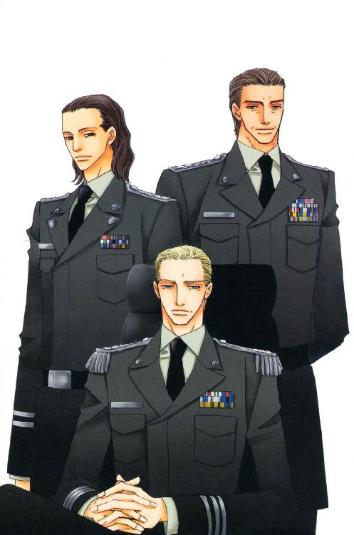
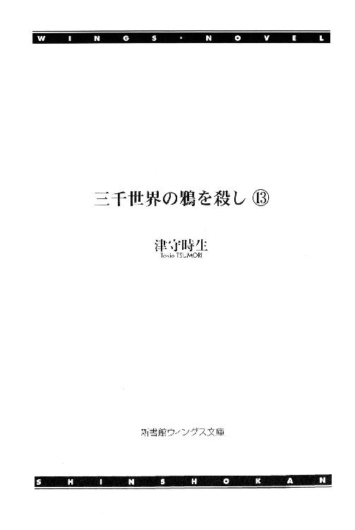
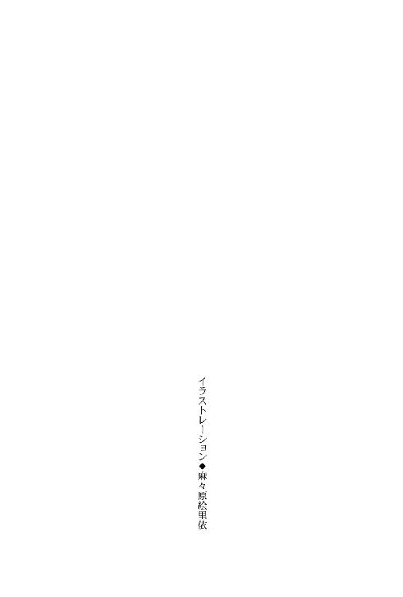
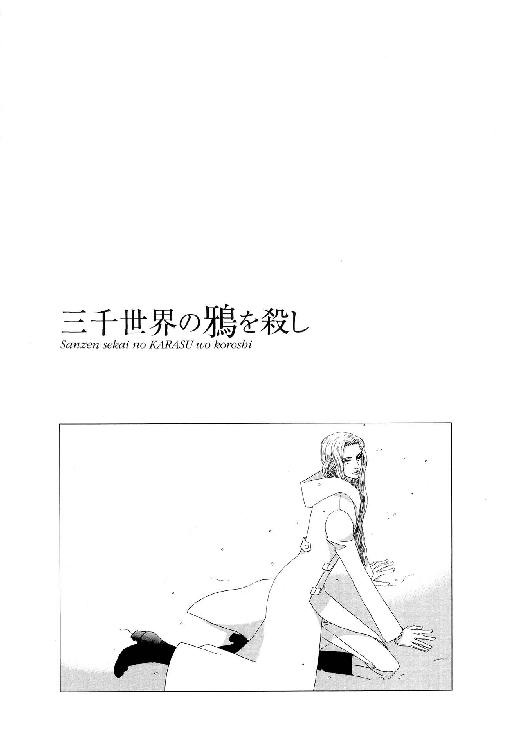
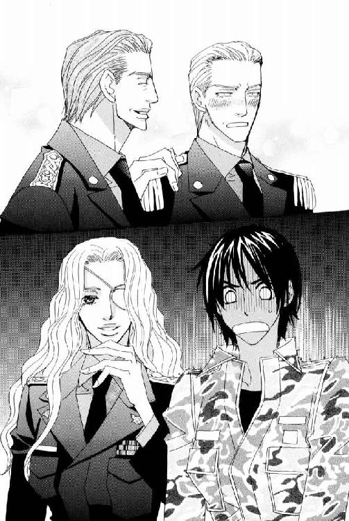
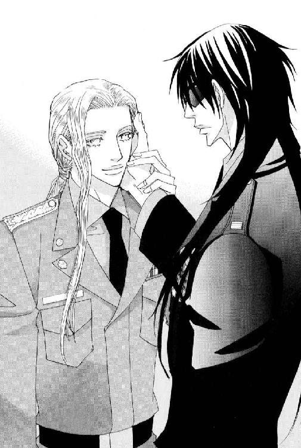
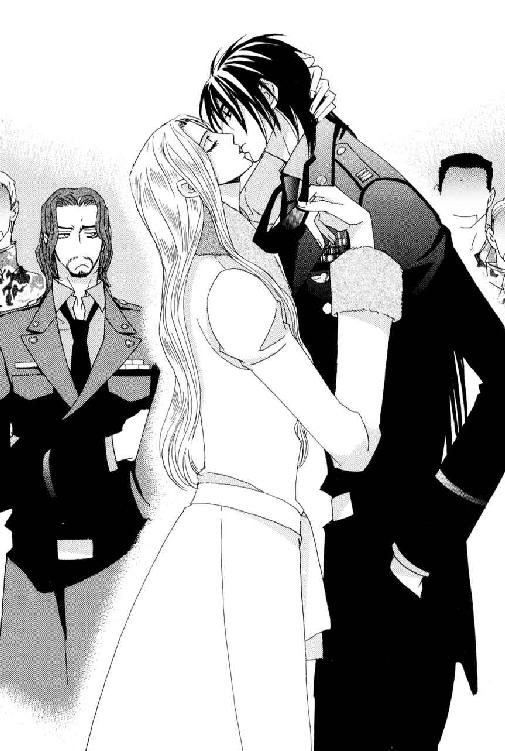
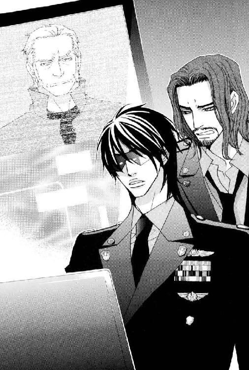
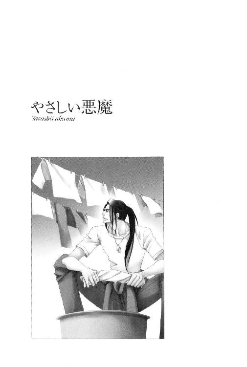

| 三千世界の鴉を殺し(13) (ウィングス・ノヴェル) | |
| 津守時生 | |




１
長い年月をかけ惑星バーミリオンに進行している陰謀について、招集された会議の席上、ルシファード・オスカーシュタインは淡々と説明を続けていた。
極秘プロジェクトではあるが、都市警察の電脳刑事たちが飛び入りするなどして、当初の倍以上に増えてしまったメンバーに、果ては惑星大統領までが加わった今、何やら奇妙に派手な集団が出来上がった。
しかし、陰謀に対抗するため、各組織のトップクラスが集まったとしても、状況は圧倒的に敵側が有利。
ライラは毎度のことながら、自分の親友のトラブル・メーカーぶりに感嘆する。
幾度も絶望的な戦いに勝ち続けてきたからこそ、第一等勲章の略綬を三個も軍服の胸につけて歩いているのだが、今回の危機はないない尽くしの中で乗り越えなければならない。
「――戦闘用に改造された旧型のパワード・スーツ、大口径のレーザー砲を備えた攻撃衛星、マフィアの連中が持っていたビーム・ライフル、所属不明の最新型ＶＴＯＬ、バトル・スーツを着用したブラッディ・レス率いる傭兵部隊。宇宙港が一つしかないこの惑星には、本来あるはずがないものです。ただし、自爆により完全に破壊されてしまいましたが、この中古のパワード・スーツは唯一の手がかりになったと言えます。惑星開発公社が惑星改造時に使用する土木作業用パワード・スーツ〝ティターン〟のタイプ３。百年前のバーミリオン星改造当時、使用後にうっかり回収を忘れるには、あまりにも高価な重機でした。意図的に残されて、いずこかに隠匿されたまま戦闘用に改造され、必要に応じて出動したと推測されます」
『その惑星開発公社は、何というところなの？』
パオラ・ロドリゲス・フェアファックス惑星大統領が質問する。
「ジェイ・アンド・ビー開発公社です。しかし、三十年前に累積赤字が原因で解散しています。地球系の汎銀河系複合企業体ＦＲＣ傘下の会社が、その資産を整理し、残りの事業を引き継ぎました」
ルシファードの口からコングロマリットの名前が出た時、憲兵隊隊長のマルチェロ・アリオーニ大尉と、需品科のドミニク・バンカー少佐が同時に息を呑んだ。
執務室のコンピュータ・ディスプレイで会議の様子を見ている女性大統領が、二人の反応を目にしていぶかしげな表情をしたが、彼女が再び質問する前にルシファードが言う。
「ＦＲＣの名前は今後も出てきますので、記憶に留め置いてください」
『それに一つ付け加えさせていただけるかしら。そのＦＲＣは、我がバーミリオン星とともに外宇宙探査基地最終候補惑星に残った惑星エアを、強力にバックアップしているそうです。あの宙域はＦＲＣの勢力が最も強い商圏ですから、理由は明白ですね。バーミリオンの最大のライバルと言えるでしょう』
「それは知りませんでした。教えて頂いてありがとうございます。その流れでお尋ねしますが、バーミリオン星を候補に推薦したのはどこですか？」
『銀河連邦宇宙軍と特定のコングロマリットとの癒着を好ましく思わない将軍たちです。確かに銀河系人類のための共同事業が、特定の複合企業体に集中して巨額の利益をもたらすというのは、大変よろしくないということで、逆に強力な後ろ盾のないバーミリオン星に議員たちの賛成票が集まったそうです。しかし、間接的にせよ、ＦＲＣがバーミリオン星にも関わっていたとは初耳ですね。この宙域はあまり高収益が期待出来るところではないということで、ＦＲＣはエア星を強く後押ししたのでしょうに......皮肉ななりゆきだこと』
年齢を重ねても魅力的な惑星大統領は、肉厚のセクシーな唇の片端を曲げて、シニカルな笑みを作る。
若手政治家には逆立ちしても真似出来ない貫禄と、人間的魅力に溢れた表情だった。
いくつもの企業を合併吸収し巨大化したコングロマリットは、特定の個人や惑星のために動かない。肥大化した自らがこれから先も存在し続けるために、そしてさらに増殖するために、あらゆるものから、より多くの利益を得ようとする。
しばしば政治に介入し状況を混乱させるだけでなく、政治的に不安定な地域で武力紛争を誘発しようと画策するコングロマリットは、火消し役として紛争宙域に派遣される兵士たちには死の商人――死神と同義の存在だった。
大半が軍人たちからなる、この場のプロジェクトのメンバーたちは、当然ながらアンチ・コングロマリットであり、彼女の思いに共感しかける。
だが、その発言を受けたルシファードの言葉は、彼らの口元に浮かびかけた微笑を消した。
「惑星大統領閣下。それは我々にとって、決して良い話ではありません。皮肉な結果になったのは同じですが、ＦＲＣはバーミリオン星に決まって欲しくないがゆえに、惑星エアを後援しているのだと思います。閣下のお言葉通り、ＦＲＣがエア星を後押しするのは第三者の目から見て、何も不自然ではありません。それが反発を買って、第三の候補の惑星に決定してもかまわないのです。――このバーミリオン星以外ならば」
『それでは......真に皮肉な結果というのは......――』
「イエス・マム。外宇宙探査基地がバーミリオン星に決定した場合、彼らは早急に手段を選ばず目的を果たそうとするでしょう」
『目的とは、例の流民街の地下に埋まっている宇宙船内の物ですね？ 手段を選ばずとは、どのような......？』
「連邦惑星軍によるクーデター、及びそれに呼応した流民街マフィアたちの武装蜂起。イエロー・タウンの住民たちを盾に取られては、都市警察も滅多なことは出来ませんし、そもそもマフィア連中は最新の武器を山ほど供給されていますので、都市警察側は相当の犠牲者を覚悟する必要があります。制圧するどころか、逆に警察側が壊滅する可能性のほうが高い」
クーデターと聞いて一同が凍りつく中、都市警察壊滅の予想にガーディアン・ブルーことブルース・バンディが、黙っていられず口を開く。
「兄貴！ 最新の武器を山ほどって、それをどこから持ってくるんスか？ 宇宙軍が密輸をその......自分たちでやって売りつけているとか、そーゆー話じゃないみたいっぽいし」
本当は宇宙港で輸出入を監視する宇宙軍が無能で、武器の密輸を見過ごしているのではないかと言いたかったようだが、カーマイン基地の正副両司令官がそろっている上に、大半が軍人という席で宇宙軍を見下した発言ができるほど、ブルースも命知らずではなかったらしい。
いかにルシファードでも惑星大統領からの質問とあっては、上官たちの見ている前で話の腰を折るなと注意するのは難しい。今度は自分を兄貴分と崇拝する青年が口をはさんだので、ルシファードも遠慮なくたしなめられる。
「それについて、これから順番に説明しようとしているところだ。各自が疑問を抱くたびに中断していたのでは話が進まない。質問は説明が終わってからにしろ」
「ありゃー。すンませーん」
『オスカーシュタイン大尉。今のあなたの説明だと、宇宙軍は流民街の武装蜂起制圧に参加しないように聞こえましたが、首都の治安維持は――』
「閣下。バーミリオン星のために一刻も早く手を打ちたいと、はやる閣下のお気持ちはよくわかりますが、この場にいるメンバー全員が現状をすべて承知しているわけではありません。誠に恐縮ですが、説明が終わってからも疑問が残った場合にお尋ねください」
「大尉っ。そのような言い方は失礼だろう......っ」
この惑星の最高権力者には、直接言わねば通じないと悟った男の言葉は、彼にしては配慮された丁寧なものだった。が、あからさまに冷たい口調は、ブレッチャー司令官を狼狽させる。
本来ならば、相手が将軍でも〝いちいち質問されていたら、いつまでたっても説明が終わらないんですけど〟と、直截に言ってしまう親友の性格を知っているライラは、彼らしくない丁寧な今の言い方が政治的配慮の賜物というより、フェミニスト的精神から発せられたものだという印象を受けた。
果たして、女性大統領は苦笑混じりではあるが、甘い微笑みを浮かべて謝罪する。
『あら、ごめんなさい。おのれの地位に甘えて、私はいつの間にか無神経になっていたようね。反省するわ』
「ご安心を、閣下。対抗策はすでに考えてあります。あなたの愛するバーミリオン星を守るために、我々はこうしてここに集まっているのですから」
おのれの女としての魅力を承知した上で彼女が微笑むのは、若い男相手に媚びてのことではない。むしろその逆、相手より上位に立つ権力者の余裕からだった。
必死になれば、なりふりなどかまっていられない。政治家として権力闘争を続けてきた彼女は、女の武器など使っても、男にあなどられるだけだと身にしみて知っているはずだった。
口先だけでも謝っているのだから、こちらも儀礼的に微笑み返せば、それで済む。何も問題なく済んだはずのところを、宇宙軍の英雄とあだ名される男は不敵に笑って言い放った。
自信に溢れ、笑って断言するルシファードは、惚れ惚れするほど格好いい。
こんな風にはったりをきかせる時、彼が見せるカリスマ性には、長いつき合いのライラですら毎度感心させられるのだから、免疫のないものへの影響は大きかった。
先程のブルースを始め、マコト・ミツガシラやパトリック・ラッセルのような若者たちが、うっとりとため息をつく。
だが、アンリ・ラクロワ副司令官やアレックス・マオ連隊長、ドミニク・バンカー少佐といった曲者の年長者たちは、彼が無意識に放つ魅力は認めつつも惑わされることはない。困ったものだという眼差しを交わし合い、苦笑している。
――無視すればいいものを......。
フェアファックス惑星大統領の、上位に立つ人間らしいやや横柄な謝罪に対し、ルシファードは好戦的な笑顔と強気な言葉によって、あなたはあとから参加した部外者で主導権はこちらにあるのだから、いちいち偉そうな顔をするなと言外に匂わせたのだった。
彼女が魅力的であることは認めるが、再三の邪魔にうんざりしたのだろう。
ライラは軽く眉をひそめる。
本来、この手の駆け引きに興味がない男なのに、今回に限って牽制するのは、何か別に考えがあるのだろうか。ルシファードの言葉を思い出すと、本気で反発したような気がする。
〝私が気にしているのは、あなたの記憶がとても不快な出来事のカテゴリーに入っているせいです。遺憾ながら現在私が思い出せない出来事で、閣下との今後の協力関係に支障が生じるのは大変問題です〟
惑星大統領は、自分の個人的感情で協力関係に支障を生じさせることはないと断言した。
ならば、ルシファードが詳細を思い出せないほど過去の出来事は、彼女にではなく、彼にとって大変不快な出来事だったのではないだろうか。本人が原因を忘れていても、些細なことで即座に反発という形で反応するほどの過去。
――それでなくても話の規模が大きくなって関係団体も増え、どんどん状況が複雑になっているのに、これ以上、関係者同士まで面倒なことになるのはごめんだわ。
惑星大統領は微笑んだまま軽くうなずいただけで、宇宙軍大尉からの牽制に特別反応しなかったが、次の言葉を謝罪の代わりにする。
『ロス・ハミルトン補佐官亡き今は、あなた方宇宙軍だけが頼りです。本当はもっと早く協力を要請してしかるべきだったと思います。ですが、愚かにも私たちは面子にこだわり、この惑星に進行中の問題を自力で解決しようとしていました』
フェアファックス惑星大統領は昨日早朝、自宅のコンドミニアムから墜落死したという大統領補佐官の名前を挙げる。腹心の事故死という警察の判断に納得できなかった彼女は、弔問を口実にカーマイン基地司令官を呼び寄せ、今まで不審を抱いていたバーミリオン星での一連の出来事を相談した。
その結果、今回のプロジェクト参加につながったのだが、最後に目を伏せて力なくつぶやいた言葉が、彼女の人間としての痛みを生々しく伝える。
『――目の前の事実を認めたくなかった私の臆病さが、彼を殺したようなものです』
「ならば是非、倍にして返してやりましょう、閣下」
彼女と対照的に感情を排した静かな声で、ルシファードが応じた。ライラに気取られた苛立ちはもうない。
本題に戻ったルシファードは簡単にブレイン・ギアの説明をしたあと、それを使って存在を察知した流民街地下に埋もれた巨大宇宙船と、アイボリー大陸の惑星軍基地地下の武器庫の話を始めた。
その巨大な宇宙船が外宇宙から飛来したものであり、はるか昔に冷凍睡眠装置を目一杯積み込み、ワープ・エンジンもない原始的な航法で星間旅行を行った移民船であることを告げ、現在バーミリオン星にあるのは、移民が終わって空になった船体を再利用して送り出されたものだと語る。
「詳細は不明ですが、コンピュータから読み取れた情報の断片から推測すると、その宇宙船で移民した人類はとある惑星で高度な文明を築いたものの、何らかの理由で社会システムが崩壊し、文明は急速に後退したようです。移民の子孫たちは近くの惑星に救助を求めるため、移民の記念に保存していた古代の宇宙船を改造し、再び宇宙へと送り出したのです。人間を乗せた星間旅行には到底耐えられない遺物の如き宇宙船に載せられたのは、有機金属生命体の群棲体でした」
それらは群棲することによって一定レベルの知性を有したが、金属を食料としたことで悲喜劇が起こった。
救難信号としてそれらを送り出した人類は、積み荷の金属を食い尽くした生命体が、宇宙空間に漂う小惑星や宇宙ゴミから食料を得られるようにするため、ある装置を積んだ。
しかし、太陽系付近なら金属を含む小惑星も比較的得やすいが、離れてしまえば真空に近い宇宙空間を延々と航行するだけだった。
食料の供給が止まれば、当然生命体は飢える。それらは宇宙船そのものを食料として命をつなぎ、消滅した船体の必要な部分は有機金属生命体自身で埋めていった。現在の地下宇宙船の船体はそれらの死骸で構成されている。
人間たちは宇宙船の針路を、自分たちの同胞が生きる一番近い太陽系に定めたのだが、結果的に奇妙な救難信号は大きく進路をそれてバーミリオン星に漂着し、目的を果たすことは出来なかった。――飢えた生命体が、針路を修正するために必要なエンジンの制御装置やコンピュータの一部まで食べてしまったからである。
宇宙船は想定外の迷走を続け、移民に失敗した惑星のある銀河系から、別の銀河系のバーミリオン星に漂着するまでに、大半の生命体が餓死した。
わずかに生き残った生命体は、最後の力を振り絞って搭載された装置を操作し、大気圏突入をすることなく無事にバーミリオン星へ不時着したものの、湿地帯だった着陸場所に充分な食料は存在せず、あえなくすべてが餓死した。
「信じらんないーっ。超あったま悪ぅ～いっ！」
ガーディアン・ピンクが思わず叫んだ。
その場にいる全員が同感だったおかげで、少女は叱責されずにすみ、尻馬に乗った形でマコト・ミツガシラ少尉が、興奮を隠しきれないようすで言う。
「その生命体が食料を確保するために積み込まれた装置というのが、ＦＲＣが何とかこの惑星から持ち去りたいと画策している物質転送装置なんですね！」
『物質転送装置ですって！ それは本当なの、オスカーシュタイン大尉』
「イエス・マム。百年前にこの惑星を改造中に発見されたそれが、すべての元凶です。今でも稼働可能なのは、この惑星にない最新の武器やＶＴＯＬを敵が持っている事実からも明らかです。コントロールするメイン装置は宇宙船にあります。巨大すぎて秘密裏に運び出すことが不可能だったのは幸いでした」
発見した組織が隠匿しようと思わなければ、それはこの銀河系人類にとって外宇宙からのすばらしい贈り物になっただろう。それなのに銀河連邦への通報義務を怠ったのみならず、今日まで隠匿している事実から、相手が滅びた文明の超テクノロジーを独占し、違法行為に利用しようと考えているのは明らかだった。
都市警察の年若い電脳刑事たちは、さほど深刻に感じていないようだが、軍関係者は違法に使用される物質転送装置によって、現在のミリタリー・バランスが崩れる危険性を正確に認識している。
「船外に射出して小惑星などに打ち込み、船内に転送する移動式の小型装置は少なくとも二つあるようです。一つはバーミリオンの近くを航行し、惑星外から武器を送り込む貨物船に搭載されているもの。もう一つはアイボリー大陸の地下武器庫に。そちらは宇宙船がこの惑星に不時着する際、大気圏突入をまぬがれるため、先に送り込んだものと思われます。移動式の装置は、大気圏突入時の高熱にも燃え尽きないよう、耐熱加工が施されているのでしょう」
そうでなければエンジンを制御出来ない巨大宇宙船が、惑星に不時着できるはずがない。
アレックス・マオ中佐が気づいたことを言った。
「ひょっとして、三十年前に解散した開発公社から、ＦＲＣが事業と記録を引き継いだ時点から、この陰謀が始まっているのかな？」
「おそらく。百年前から画策して、まだ目的を達せられないとしたら、無能にもほどがあります。発見した宇宙船をとりあえず隠匿したものの、当時の担当者が申し送りもせず放置しておいたのでしょう。機能不全の組織にはよくある話です」
マルチェロ・アリオーニが軽く挙手し、もう一つの事実を告げる。
「流民街が現在の位置で急速に拡大し始めたのも、およそ三十年くらい前からだと聞いた」
「あ、俺の親父はガキの頃、イエロー・タウンよりずっと離れた荒野の町で暮らしてたって話っス。もっと立派な家にタダで住まわせてくれるところがあるってウワサが広まってぇ、町の住民全部がそっくり移り住んだのが、今の流民街でした。ま、結論から言っちゃうとー、タダより高いモンはないっつー、よくある話？」
他人事のように言って肩をすくめる瘦身の青年に対し、ルシファードが詳細を語るようにうながす。
「どう高くついたんだ、ブルース」
「勝手にマフィアの組織に組み込まれてぇ、下っ端として否応なく何度も流血の修羅場をくぐっているうち、気がついたらいっぱしの犯罪者になってたってコトっス。ガキは適応能力高いんで、切った張ったに撃ったまでが日常茶飯事の環境で育つと、仲間っつーか群れの結束が固い、わずかな金でヤバイことも平気でやるようないい兵隊になりますよー。群れのトップの言う命令は絶対で......つまり、流民街を牛耳っている上の連中の思惑通りに動く人間に、ね」
流民街出身の青年は、束の間陰惨な翳りのある笑みを浮かべて言った。
そのあとを引き取ったプロジェクト・リーダーは惑星大統領に対し、惑星軍の兵士たちの大半が流民街出身の若者で構成されている事実を指摘した。
ガーディアン・ブルーの言葉を聞いた直後だけに、先程オスカーシュタイン大尉が持ち出したクーデターという非常事態も、危機感が言わせた根拠のない妄想とは否定できなくなる。
さらに彼は、以前マルチェロにも話した、惑星軍による首都と基地へのミサイル攻撃の懸念を伝えた。
クーデターの障害になることは確実なので、真っ先に攻撃目標となるのはカーマイン基地であり、惑星大統領よりブレッチャー司令官のほうが青ざめて狼狽する。
「大尉っ。ミサイル攻撃を防ぎようがないのなら、我々はもはや......っ！」
「対策は考えてあります。相手が油断していなければ成功しない作戦ですので、機密は絶対厳守。関係者をさらに制限してから、お話し致します」
「う、うむ。頼りにしている」
「ありがとうございます、サー。全力を尽くします。再び話を戻しますが、その前に――レッド。カーマイン市の治安が顕著に悪化したのはいつ頃か、統計を見たことはないか？」
急に質問された水麗人だが、いささかもあわてることなく、淡々と応じる。
「イエロー・タウンにおける流民街周辺の犯罪発生件数は、流民街の人口増加にともなって増えているが、現在ではパープル・タウンも安全とは言い難い。犯罪が周辺地域にとどまらず広域化したのと時を同じくして、強盗殺人等の凶悪犯罪、詐欺や恐喝の組織的な犯罪が目立って増え始めたのは、今から二十七年前だ。なぜ明言できるのかというと、その年から逮捕者の中に本来ならバーミリオン星の人間ではない、銀河連邦宇宙警察の指名手配犯が含まれるようになったからだ」
ガーディアン・レッドの指摘を受けて、基地の正副司令官の表情が険しく変わった。
それは、連邦宇宙軍による宇宙港の通関手続きに問題があるため、銀河系全域に指名手配されるほどの重大犯罪者を見逃しているということにほかならない。
つまりが部下たちもいる前で、宇宙軍は無能この上ないと断言されたも同然なのだが、即座に反論できないのは、半月前に宇宙港で自爆騒ぎを起こした女とその連れが、まさに見逃された指名手配犯だったからだ。
しかも、ライラ・キムたちが流民街のビルで戦った傭兵部隊の指揮官、ブラッディ・レスは何とレベル２の手配犯だという。さすがにそこまで続くと、彼らも原因が警備担当の兵士たちの怠慢や無能だとは思わない。
もっと根本的な――コンピュータによる照合装置に問題があるのだ。
年若い電脳刑事たちと異なり自制心のある上官たちは、言葉を呑み込んだわずかのあいだに同じ結論を下し、おそらくその問題の原因を解明出来る部下を同時に見遣る。
ルシファードは軽くうなずき、彼らの疑問に答えた。
「その点につきましては、我がカーマイン基地が誇る優秀な憲兵隊隊長に報告してもらいます」
いきなり話を振られたマルチェロは驚いたが、上官の前で点数を稼げというルシファードの配慮に気づかないほど鈍感ではない。
五つも年下の男の余裕に嫉妬めいた苛立ちを感じながら、無精ヒゲの憲兵隊指揮官は自分の体験を語る。
「その件について、都市警察の照会を受けた憲兵隊前任者の記録が残されています。途中からムダだと判断して都市警察が照会をやめたのか、記録は途絶えましたが。ヴァンダイク方面軍総司令本部からカーマイン基地に送られてくる犯罪者のデータは、レベル５以下の小物ばかりで、自分が見る限り、明らかに意図的な操作が加わっているように思われました。セラドン星――総司令本部に直接問い合わせましたが、自分たちの惑星が重要な地理的ポイントにあると考えるのはそちらの自由だが、現在の手配は送ったデータの通りであるという回答でした」
「何という無礼千万なっ！ なぜそれを私に報告しない！」
プライドの高いブレッチャー大佐が青筋をたてて怒鳴った。
銀河系の端にあるバーミリオン星カーマイン基地だが、たとえ兵士のゴミ捨て場と陰で揶揄されようと、そこまで見下される覚えはない。
マルチェロは上官の剣幕にも動じず、クールに答える。
「前司令官殿に報告しましたが、その通りなので捨て置けと」
「......またギリ大佐かっ！ いかに不本意な左遷人事であろうと、基地の最高指揮官であるならば全力を尽くして事に当たるのが、栄光ある連邦宇宙軍兵士としての真のプライドというものだろうに......っ」
前任者に対してよほど思うことがあるのか、今度は怒りで顔を紅潮させたブレッチャー大佐が、両拳を固く握ってうなる。
それを聞いたライラは、少し司令官を見直した。
いくら基地の年間予算が少ないにしても、彼は呆れるほどケチで、指揮官としても人間的にも実に器の小さな男だった。副官のラクロワ中佐が優秀なだけに周囲からいつも比較され、余計に見劣りがする。
加えてライラ個人は、長いつき合いになる親友のせいで、男性に望むさまざまな能力値が極めて高くなっている。
だが、人間に何より大切なのは、自分自身に向けたプライド――自身に堕落を許したり、おのれをおとしめて卑屈になったりしない誇り高さだった。それを心に宿している限り、人は前を向き胸を張って生きていける。
前任者にも副官として仕えたラクロワ中佐が口をはさむ。
「いいえ、司令官殿。ギリ大佐殿は世をすねて、基地の荒廃を看過したわけではなく、私の見るところ――意図的に計算して基地の弱体化を招いておいででした。陰で私がだいぶ邪魔をしたので、あまり成果は上がりませんでしたが」
「何だと......っ！ そんな話を聞いたことはないぞ」
「申し上げる必要はないと判断しました。前任者を悪く言うことで、あなたにおもねっていると思われたくありませんでしたし、事実、基地内の治安と風紀は、六年前に着任したアリオーニ憲兵隊長のおかげで劇的に改善しました。当時の荒廃ぶりをお話ししたところで、お信じにはならなかったでしょう」
中佐はすべては過去のこととして穏やかに語っているが、当時の上官と彼との対立は相当深刻なものだったろう。
――それと比べれば、今のブレッチャー大佐がケチで小人物なことくらい、笑って許せちゃう範囲かぁ。
茫然とする司令官にルシファードは、追い討ちをかけた。
「アリオーニ大尉は基地の記録をあたり、ブレッチャー大佐殿以前の基地司令官たちがどのように基地の機能を低下させ、弱体化していったかを調査しました」
進行役に目顔で促され、憲兵隊隊長は自分が暇つぶしに行った調査の結果をかいつまんで、再度話す。
「まさに、基地の弱体化は二十七年前に着任した司令官によって始められました。その人物の前任地が惑星セラドン。それ以降、惑星セラドンから派遣されて来たに等しい司令官たちが、短期間に悪しき改革を行っては去っています。ヴァンダイク方面軍総司令本部に所属する誰の意向かは不明ですが、本来基地に重要な情報はすべて止め、予算を削減し、司令官以外の人物による基地からの問い合わせや提案はことごとく無視するか、しりぞけています」
「そんなぁ......っ！ 宇宙軍の上層部まで敵とグルだなんて、信じられないっ。オスカーシュタイン大尉、ボクたちどうすればいいんですかぁ？」
パトリック・ラッセル中尉が、多少本音混じりの芝居がかった悲鳴を上げた。
マコトやボビー・ヘインズ軍曹の非難をこめた冷たい視線をものともせず、金色の巻き毛も愛らしい擬似美少年はおびえた表情を作り、さも恐ろしげに身を震わせる。
スクリーン・グラス越しに一瞥した男は、彼にしては極めて自制した罵倒語であしらう。
「戦え、バカ者。相手が誰でも同じだ」
「わ、私は潔白だぞっ！ ＦＲＣなどというコングロマリットやセラドン星とは、なんのつながりもないからな！」
副官と憲兵隊隊長から、前任者たちが基地に対して行った重大な背信行為を聞かされ、しばし茫然としていたブレッチャー大佐だが、自分に対しても疑惑の目が向けられる可能性にやっと思い至った。
「了解しております、サー。そもそも大佐殿にわずかでも疑惑が残っていたら、この会合にお呼びしておりません」
「そうそう。調査して敵側の人間と判明した時点で、とっくに暗殺しちゃってますね。誰が手を下すかまでは言いませんけど。あはは......」
ニコラルーン・マーベリック少佐がルシファードの発言を補足する形で、とんでもないことを朗らかに言う。
場合によっては司令官を暗殺して排除するという選択もあったと言われ、会議室の空気が一瞬で厳しく張りつめる。
惑星大統領が見ている中、天を仰いだり額に手を当てるわけにもいかず、ライラは目を閉じ爆弾発言の余韻をやり過ごす。
親友はたおやかなラフェール人を始終〝××堕天使〟呼ばわりしているが、ようやくその呼称が納得出来た。暗殺者になった可能性のある人間は複数いると言ったことで、小心者の司令官は疑心暗鬼になる。それでノイローゼになってもかまわないという悪意さえ感じた。
たとえその場が混乱しようとも、面白いほうに話を転がすというタチの悪い言動だけではない。華奢な体つきに優しげな美貌の彼は、確かにそれを裏切る非情さを持つ連邦宇宙軍中央本部の情報将校だった。
ブレッチャー司令官が敵側に属する人間だったら、本当に暗殺していた――と、確信させる何かが、明るくても冗談には聞こえない口調に含まれていた。
個性豊かなメンバーが次々と口をはさむので、先程からルシファードの話は進んでいない。パトリック・ラッセルの発言に至っては、不快な甘え以外の何物でもなかった。
注意した程度では収まらないと思ったのだろう。一同の気を引き締めるため、ニコラルーンは衝撃的な仮定を口にして危機感をあおった。
――それにしたって、劇薬が効きすぎたわよぅ～。
天使の如きラフェール人と司令官暗殺という行為の強烈なミスマッチは、本人が思っている以上に不気味この上ない。程度の差こそあれ、大半のものが恐怖の色を浮かべて、平然と笑っているニコラルーンを見返す。
その時――。
空席を一つはさんで隣に座る隻眼の女少佐が、短い笑い声を上げて言った。
「残念だわ。そちらのほうが面白かったのに」
「おやめください、バンカー少佐殿。――マーベリック少佐殿、逆説的な信頼を告げるにしても、司令官ご本人を目の前にして少しブラック・ユーモアが過ぎたようですね」
ドミニクがきっかけになってくれたおかげで、ルシファードは中央本部の情報将校をやんわりとたしなめることが出来た。
いくら親しい間柄でも、惑星大統領まで加わった会議の場で軍人が上級者を公然と非難するのは難しい。
「そうは言っても、我々がこうして対抗するために集まっていることを敵に知られたら、全員暗殺されるよ。君が外で狙撃されたり、通信科の兵士に撃たれたりしたように――そして、ハミルトン大統領補佐官のように、ね」
『多少のリスクは覚悟の上です。おのれが命じた調査で部下が非業の死を遂げたというのに、自分は何もせず安全な場所にいたいだなどと言いません。しかし、宇宙軍の上層部までがＦＲＣと結託しているとなれば、八方ふさがり。状況はかなり絶望的なのではありませんか？ それでも安心して任せろと、あなたは言うのですね、オスカーシュタイン大尉』
ニコラルーンの警告を真面目に受け止めた惑星大統領は、深刻な表情で美貌の宇宙軍将校に問いかける。
「イエス・マム。軍は縦社会ですので、ヴァンダイク方面軍より上を動かせばいいだけのことです。いかにコングロマリットが金を持っていようと、銀河連邦宇宙軍全部の買収はできません。金ならいくらでも欲しいと考える人間がいる反面、職業軍人の矜持を金では売らないという人間もいます。後者にとって、軍人をワイロで堕落させる連中は、何をおいても真っ先に叩き潰すべき敵でしょう。――俗な言葉で言うなら、多くの組織と同様に宇宙軍にも各方面軍の縄張りというものがありますが、バーニングの開発には宇宙軍の開発研究部も参加していた関係上、各方面軍の面子よりバーニングの機密漏洩阻止が優先されます。すでに銀河連邦宇宙軍中央本部は、バーミリオン星でバーニングが売買されていた事実のみならず、その組成式入手にこだわる犯罪組織があるということで、多大な関心を寄せています」
『我が惑星政府にも、その件について宇宙軍中央本部から連絡が入っています。カーマイン基地に全権を委ねると。......それでは、中央本部を動かせるのですね！』
「イエス・マム。バーニングより、ＦＲＣによる物質転送装置隠匿のほうが大きな問題ですが、残念ながら現在のところ物的証拠は得られていません。しかし、バーニングが関係している以上、銀河連邦宇宙軍中央本部が直接バーミリオン星に介入するための立派な口実になります。そして、カーマイン基地は中央本部より全権を委ねられていますので、たとえ流民街地下にある宇宙船の問題から手をひけというヴァンダイク方面軍総司令本部からの命令があったとしても、中央本部の意向を優先出来ます」
真相はその逆で、中央本部が動くためにバーニングの存在を利用しようとしているのだが、かつてマオ中佐が都市警察の縄張りを荒らす命令を下した時、ルシファードたちに言ったように〝口実は口実の役に立てばいいのであって、正当性は必要ない〟のだった。
迷走しているようで核心には迫っている会議の行方を今までずっと見守っていたメリッサ・ラングレー大尉が、ついにたまりかねて口を開いた。
「あの......っ。ごめんなさい、どうしても知りたくて。バーニングとは重大な副作用のある即効筋肉強化剤だというお話ですが、本当にそれだけなのでしょうか？ ＦＲＣの思惑によって動くイヴルという組織が、自分たちの存在を危険にさらしてまでこだわる理由がわかりません。すべてはその一点にかかっているような気がします」
――そうよ、そこなのよっ！ それが知りたいのっ。
ライラが心の中で叫ぶ。
彼女だけでなく、メリッサの発言を聞いたほぼ全員が、同時にうなずく。
反応しなかったマオ中佐とニコラルーンは、ルシファードとその点についてすでに話し合っていたのだろう。
中央本部とバーニングの関係を説明するため、マオ中佐が二重軍籍の秘密を明らかにするという情報部将校にあるまじき犠牲を払ったのも、あの薬を抜きにして真相を語れないと判断したからにほかならない。
モニターの向こうにいる惑星大統領を含めて、全員の注目を集めるルシファード・オスカーシュタイン大尉は、相変わらずのポーカー・フェイスで一同の疑問に答える。
「バーニングの重大な副作用とは、脳内麻薬系の薬物を常用している人間が服用すると、怪物化してもとに戻らないというものです。偶然ですが、以前に私と副官のキム中尉はその怪物化した犠牲者と遭遇し、戦った経験があります。バトル・スーツを着た人間を相手にしたようなものと考えていただければ、近いかと思います。即効筋肉強化剤服用の目的である戦闘能力の飛躍的向上に加え、生身のままで防御能力がバトル・スーツ並みに高くなるのは、非常に望ましい利点ですが、知能が低下する上に薬効が切れても、もとの人間に戻れないとあっては使用禁止にするほかありません。その仕組みは今後の研究課題とするにせよ、現段階で市場に流出し違法薬物として流通するバーニングは、すべて廃棄処分にする決定が下されました」
それは当然だろう。自殺する前に一暴れしたいという人間以外、正気で服用する人間などいるはずがない。
そんな薬のどこに利用価値があるのか――という疑問に対し、ルシファードはあくまで自分の推論ですが、と前置きした上で言った。
「物質転送装置が転送出来るのは、本来非生物のみではないかと思われます。武器は供給出来ても、兵士の供給は出来ないのです。しかし、バーニングの副作用で怪物化した人間なら転送出来たとしたら――どうでしょう？ 現段階では使い物にならなくても、研究する価値は大いにあります。実際、私がハッキングした時、地下宇宙船内でそれに関連していると思われる生体実験が行われている光景を、管理コンピュータの映像で見ました。宇宙軍が現在流通しているバーニングを完全に回収する前に現物を少しでも多く、可能なら組成式まで入手したいと考えたイヴルが、一連の行動に出たとしても不思議ではありません」
そういうことか――。
ライラはルシファードの推理に瞠目する。
望む場所に兵器だけでなく、兵士も送り込める物質転送装置と、兵士を送り込むために必要な薬。
死の商人にはどちらも欲しいものだろう。
人類全体のためでなく、自分たち組織の利益しか考えない連中にその技術を独占されたらどうなるか。
誰もが絶対に阻止しなくてはならないと考えた。阻止出来るか否かは、自分たちの今後の働きにかかっている。
すでにバーミリオン星だけの問題ではなかった――。
２
以前からルシファードがプロジェクト関係者に対して言っていたように、宇宙軍中央本部を動かすためには、決定的な証拠が必要だった。
会議もその当たり前の結論によって、各自に課せられた役割を果たすように再確認し、一部のものを残して散会となった。
新たに加わった通信中隊のメリッサ・ラングレー大尉は、マコト・ミツガシラ少尉や都市警察のメンバーと収集したデータ分析の分担を話し合うために、住宅街の一軒家に設けたプロジェクト・チームの分室に向かった。
本来、本部組に入っているパトリック・ラッセル中尉とボビー・ヘインズ軍曹も、分担の話し合いに加わるよう上官から命令されて、会議室を去っている。
フェアファックス惑星大統領側に急いで処理しなければならない案件が発生し、彼女は十五分の休憩を申し出て中座した。
「......何か、ますます濃い顔ぶれになった感じだな」
入り口から奥に向かって円卓の右側に座っていたメンバーがほとんど退出し、取り残される形になったマルチェロ・アリオーニ大尉は、プロジェクト・リーダーの隣に移動してきた。
誰しも正副司令官のすぐそばに、ずっと座っていたいとは思わない。
説明資料に使ったディスクをケースに戻していたルシファードが、憮然とした憲兵隊隊長のささやきに口元をゆるめる。
「大丈夫。顔の濃さじゃ、マルチ全然負けてねーから」
「うるせえ。――しかしよ。おまえの話は推測だらけだったりするし、地下の宇宙船内からかき集めてきたデータがなけりゃ、左遷でノイローゼになった宇宙軍の英雄サマの誇大妄想ってコトになりかねんよなぁ。流民街の一角で人と物の流れが妙な動きをしているから、地下にデカイ何かがあるらしいっつーネタを、娯楽エリアのボスから聞いていなけりゃ、俺も疑ってかかるトコだったぜ。さすがに色々な情報を突き合わせ、全体像を把握した今、もうおまえの正気を疑う気にはなれないが......」
「ただの妄想で狙撃されたり、ワイヤーのムチで顔面ぶん殴られて右目が潰れたり、左肩を拳銃で撃ち抜かれたりしていたら、パープル・ヘヴンの小説を書いているお嬢さんたちは、とっくに死に絶えているんじゃねーの？」
「アホタレ。何ちゅーもんをたとえ話に持ち出すんだ、この野郎。そもそも、あんな腐れアマどもなんぞ、とっとと死に絶えたほうが世の中のためだ」
基地の男性兵士を代表するつもりで憤然と言い切ったマルチェロに対し、某誌を愛読する美貌の大尉は軽く唇をとがらせて反論する。
「えー。そんなコトになったら、俺の娯楽がなくなるー」
「やかましい。くだらねー寝言をほざくな、タコ。てめーは基地の男の精神的苦痛をなんだと――ちょっと待て。今、ムチで右目をナンタラとか言っていたが、そいつは誰の話だ？」
「オイラのデス。橋の上でブラッディ・レスのおば――もとい、おねーさまに殴られて流血の大惨事。痛かったのなんの」
ルシファードは狙撃された上、部下を連れた女傭兵と戦闘になった話をしたが、ちゃっかり橋を破壊したのはレスたちということにしてしまった。
唯一の目撃者であり被害者の一人でもあるガーディアン・レッドは、好意を抱く宇宙軍士官のために沈黙を守った。真実を言ったところで何の得にもならないし、たぶん濡れ衣を着せられたレスから抗議されることもないだろう。
狙撃犯たちの死体は、ニコラルーンが惑星政府から都市警察に圧力をかけてもらい、うやむやにしたと報告があった。
「ふざけるな。ジャグんとこで見た時は、ちゃんと両方そろっていたぞ」
「新しい目が生えてきましたので」
「何だと？」
「通信室で肩を撃たれた時も治っていただろう。念動力の一種で治癒能力とも細胞賦活能力とも言うんだ。さすがに眼球まで再生するとは思わなかったが、正直大助かりだったぜ。......我ながら大した化けものっぷりだよな......」
常識では考えられない奇跡の力が存在するのを知り、目を大きく見開いて驚いたマルチェロだったが、相手が半ばひとりごちた最後のつぶやきを聞きとがめた。
「おい、そこは特異体質に生んでくれたお袋さんに感謝するべきところだろ」
「特異体質！ 特技とか芸とか色々言われたけど、今度は特異体質......！ 何だか、だんだん楽しくなってきたぞ。次は誰に何て言われるのかな」
「自分の細胞を培養して、手術で新しいのをはめ込むことは出来るが、自前で治せるにこしたことはねーんだ。その無意味に綺麗なツラに特異体質か。無敵だな、おまえ」
「何に対して無敵？」
無精ヒゲの士官はルシファードの疑問に答えず、あさっての方向を向いて、なにやら迷っているようすだったが、すぐに覚悟を決めて向き直る。
「......その......すまなかったな。通信室でおまえが撃たれた晩、おまえのことを......化けもの呼ばわりして。よく知りもしないで暴言を吐いた。悪かった、反省してる。あの時、ドクター・ニザリが猛烈に怒ったのも、今にして思えば納得出来る話だ。友人があんなことを言われたら普通怒るよな」
「いいよ、もう。マルっちがそう思ったのも無理ねーもん」
「よかねーだろっ。自分で言って、ヘコんでいやがるくせに！」
らしからぬ語調の変化を聞き逃さなかった憲兵隊隊長は、その理由を正確に見抜いていた。
ルシファードはおのれの内面を顧みる。禁句を自虐的な気分で言いがちなのは、父親が以前に言った言葉の呪縛が、いまだに解けていないせいかもしれない。
「んー。まぁ、そのあたり複雑なんだよな。あんまりまともじゃねー気はするけど、無敵っつーか便利だし。でなきゃ、俺、何度病院送りになっていることか」
思考形態とか、ほかにもまともと思われない部分は多々あったが、マルチェロは思いやりをもって言及しないでおく。
「それから、さっきブラッディ・レスとかいう女の話を聞いてて感じたんだが......。おまえ、実はすごく女運悪いだろ？」
「しみじみ言うな。そっちのほうが、よっぽどヘコむ」
「おまえって多少中身は変でも、結構いい男なのになぁ。規格外の顔がまずいのか？」
ほめているのか、けなしているのか聞くものによって微妙な発言を受け、ルシファードもそのまま投げ返す。
「あんたも結構いいヤツなのに、どーして同性のお友だちが出来ないんだろーねー？ 下半身のしまりがないのにも目をつぶる限度があるってコト？」
「大きなお世話だ、この野郎っっっ。俺のプライベート・タイムはお姉ちゃんたちと過ごすためにあるのであって、野郎なんぞに費やす時間は一秒たりともないっ」
「あはは......。まぁ、そう言わずに今度からは俺とも遊ぼうぜ」
まったく他意のない爽やかな笑顔で、直球ど真ん中に投げ込まれてしまった憲兵隊隊長は、誤魔化しようもないほど真っ赤になって狼狽しつつも応じた。
「お、おう......っ！」
「......なぜそこで赤くなる......」
たまたま最後のくだりを耳にしていたライラ・キム中尉とドミニク・バンカー少佐が、異口同音につぶやく。
隣同士の席で残ったこともあり、休憩時間を楽しくおしゃべりして過ごした二人の視線は、タイプの違ういい男二人のほうへと自然に向けられ、鑑賞する形になっていた。
アイパッチをした隻眼の女少佐は、頰杖をついた姿勢でライラに尋ねる。
「彼、いつもあんなことやってるの？」
「イエス・マム。男たらしと呼ぶと本人は非常にいやがりますが、相手の反応はほとんどあんな感じです。ああいう男が無邪気に言うので、相手は予想外の衝撃を受けるのでしょう」
「男たちって、割と普通にああいうことを言ったりやったりしているわよね。同じ言葉を彼が言って赤くなるのは、ホモでもない男が不意に同性に魅力を感じた、とか？」
「そんな時に意識するルシファの魅力って、あの超絶綺麗な顔ですか？ 中身は子供のくせに時々漂わせる男の色気ですか？」
「さあ？ 私は男じゃないからわからないわ。男が意識する男の色気って、女が感じるものとは違うみたいよ。昔、ブライアンと話していて、そう感じたことがあるから。そもそも、あそこで顔を赤らめるのは恥ずかしいからなの？」
「状況から判断すると、嬉しさ半分、恥ずかしさ半分というところでしょうか」
女同士の気安さも手伝い、二人はどうでもいいような話題でしゃべり続けた。
「んー。たとえば好感は持っているけれど、あまり親しくないと思っていた相手から、何かのきっかけで不意にほめられたり、好意を示されたりした時、そんな気分にならない？」
「あっ、そうですね！ それが同性でもドキドキします。そのあとしばらく会話を思い出しては、浮かれていたりして。そういう相手って、心理的に自分と対等以上の存在じゃありませんか？ ちょっと憧れの人、とか」
「そうそう！ ......ということは、あんな憎まれ口をきいているくせに、アリオーニ大尉にとってルシファードは憧れの人ということになるわね」
二人は結論が導き出されるや否や、いやん可愛い～と声をそろえ、次の瞬間爆笑する。
マルチェロがこのやり取りを聞いていたら当然激怒しただろうが、笑い転げる女性二人を胡散臭そうに遠目でちらりと見ただけだった。
耳のいいルシファードは、その気になれば二人が何を話しているのか聞くことも出来たが、女性たちの気のおけない会話に聞き耳を立てても何一つメリットはないと経験的に知っていたので、無関心を貫く。
ライラは腹をかかえ、ドミニクは口元に片手をそえて楽しげに笑う。
女の色気と華やかさのあるドミニクの立ち居振る舞いを横目で見ながら、ライラはこういう大人の女性になりたいものだと思う。
この時、彼女の親友がそばにいたら、彼女の憧れのまなざしに気づいて即座に〝ますます男が逃げるって〟と、毎度ながらの余計な一言を言って殴られていたに違いない。
『ごめんなさい、お待たせして』
急用を済ませて戻ってきた惑星大統領の声がマイクから流れ出し、雑談していた一同は居住まいを正した。
第六連隊隊長のアレックス・マオ中佐のそばに移動し、そこで立ち話をしていたニコラルーンは、元の席に戻るより友人の隣に座ったほうが早いと判断し、もともとあった空席に腰を下ろす。
十五分という約束で休憩に入ってから三十分以上経過していたが、杓子定規にそれを責めるものはいない。惑星大統領がどれほどの激務か、子供でも知っている。
パオラ・ロドリゲス・フェアファックスは画面の中から、一同へあでやかに笑いかけた。
『さあ、続きを話し合いましょう』
「惑星大統領閣下。今、その部屋で閣下とご一緒している方はどなたですか？ この会議の出席条件に、閣下お一人で、機密を保持できる環境での暗号通信とあったはずですが」
ルシファードは会議の続行を促した大統領に問いかけた。口調は丁寧だが、淡々と確認する事務的な声音は決して好意的とは言い難い。
会議室にいる一同の中で、ブレッチャー司令官だけが、事態を把握できていない当惑の表情で、隣の副司令官を見遣った。
アンリ・ラクロワ中佐が上官のほうに身を乗り出し、耳打ちする。
「閣下が着席する際、視線が不自然にななめ上へ流れました」
「そうか。時刻表示を見ていて、見逃していたよ」
どうでもいい上官の言いわけなど、中佐は軽く会釈して聞き流した。
『待って頂戴。私にもしものことがあったら、代行して協力してくれる人物なのよ。私からこの会談の詳細を話すより、直接聞いてもらったほうが早いし、確実でしょう？』
「閣下。この会議の内容は、終了後、副大統領にも他言無用ということで、ご了解して頂いたはずです」
『夫なのよ。与党オナー党党首のジェラルド・フェアファックス議員です。この惑星を愛することにかけては私以上よ。汚職追放運動で私が命を狙われた時、私を守って撃たれたくらい。それでも、私たちは運動をやり遂げたの。いわば、私たちは一心同体の同志なのよ。さすがに彼を副大統領や政府の要職に任命すると、野党から公私混同と非難される恐れがあるので、控えましたが。ロス・ハミルトン補佐官の死で、宇宙軍に相談してみてはどうかと勧めてくれたのも、ジェラルドです』
夫がどれほど信頼するに値する人物かと言うことを、彼女は早口で申し立てたが、宇宙軍士官たちに心を動かされたようすはない。
現在、彼らの頭を占めている問題は、どうしたら惑星大統領の夫を追い払えるか、だった。
「閣下。我々が閣下お一人のご出席をお願いしたのは、社会的影響の大きさから、敵が閣下にだけは手を出さないだろうと考えたからです。信頼する補佐官に続いて、最愛のご夫君を失うことになってもよろしいのですか？ 敵はそのように周囲からあなたを孤立させ、惑星内の問題に手出ししないよう精神的プレッシャーをかけてくる可能性もあります。ご夫君を愛していらっしゃるなら、絶対にこの問題にかかわらせないでください」
『私は立場上、多忙を極めています。時には夫に代行してもらったほうが、双方にとって都合がいいはずよ』
彼女は譲らない相手に対し、不機嫌を隠さずに言いつのる。
内心気が気ではないブレッチャー司令官だが、隣の副官が泰然としているのを見習って沈黙を守った。
「わかりました、閣下。これ以上のやり取りは互いの時間の無駄でしかありません。こちらの条件を呑んで頂けない以上、我々も閣下の身辺の安全を保証することは出来かねますので、今回は会議への参加を見合わせて頂きます」
『待ちなさい！ 私の協力なしに、宇宙軍基地だけでどれほどのことができると思って？』
「今回の問題に関しては、後日また改めてお話し出来ればと思います。このような結果になり大変遺憾に存じますが、失礼いたします」
激昂した惑星大統領に対し、口調を和らげて遺憾の意を強く訴えつつも、ルシファードは容赦なく暗号通信回線を切った。
ブラック・アウトした画面を束の間、茫然と眺めていたブレッチャー司令官が、顔面を紅潮させて立ち上がる。激しい怒りに震える人差し指を突きつけ、部屋中に響く大声で怒鳴った。
「ルシファード・オスカーシュタインッ！ き、貴様、今自分が何をやったのか、その意味をわかっているのかっ！」
「イエス・サー」
「かっ、仮にも惑星大統領閣下に対し、一士官の分際であのような無礼を働いて、許されると思っているのかっ？」
「お言葉ですが、司令官殿。すべての非は、会議への参加条件を途中で勝手に変更したあちらにあります。そして私は現在、この基地の存亡のみならず、この銀河系全体の未来がかかる問題に対処するプロジェクト・チームのリーダーです。一惑星大統領の私情を優先して、機密漏洩の危機を招くわけにはいきません」
冷静な口調で反論するルシファードに加勢して、隣に座る憲兵隊隊長がいちいちもっともだとばかりに何度も大きくうなずく。
他の士官たちも彼の正当性を認めているのだが、司令官はおのれの保身が先に立ち、場の空気が読めずに糾弾を続ける。
「あれほど閣下が保証してくださったのに、無礼だろうが！」
この場に残っている人間は全員が軍人であり、ルシファードの言った〝この銀河系全体の未来がかかる問題〟の重要性を正確に認識していた。
そして、敵が基地を攻撃すれば全員の命が危険にさらされる、いわば運命共同体でもある。個人的な愛情と信頼を保証として、人格と能力を誰も知らない民間人をそこに参加させろと言われて、このメンバーが了解すると思うほうがどうかしている。
司令官は惑星大統領という相手の地位に気を取られ、もはや冷静な判断が出来ないらしい。
そもそも司令官の詰問に対し、起立して応答しないルシファードの相手をなめた態度は、軍隊内にあって大問題だった。それを上級者たちが誰一人とがめないあたりに、彼らのルシファードに寄せる同情と共感が見て取れる。――というより、彼らはルシファードが小人物の司令官をどう言いくるめるのか、今後の展開を楽しみにしている。
プロジェクト・リーダーは自分を激しく責め立てるブレッチャー大佐に質問した。
「ご夫君にもしもの事態が生じた場合、寡婦となった閣下に泣きながら責められても、司令官殿はうまくお慰め出来る自信がありますか？」
泣きわめく女の八つ当たり、しかも相手は惑星最高権力者。さあ、どうする。
ラフェール人以外の男たちは状況の壮絶さに顔色を失い、ドミニクとライラが一同の弱虫っぷりに笑いを嚙み殺す。
「それにあちらは、新しいご夫君を見つけることも可能ですが、情報漏洩で大陸間弾道ミサイルの先制攻撃を受ける可能性が生じる我々が、新しい命を見つけることは不可能です」
――うーわー、ソコまで言っちゃう？ でも、女って立ち直り早いから、本当にやりかねないよなー。
男たちは同時に思う。物凄い説得力があった。
ラクロワ中佐が爆笑しながら手をたたいた。
「いや、まったくだ！ おまけに私は妻と二人の娘の命もかかっているのだからな。――たとえ惑星大統領閣下のご不興を買おうとも、この場合は譲らないで正解だと思いますよ、司令官殿。基地に駐屯する部下とその家族、軍病院関係者、各施設に勤務する一般人たち全員の命の安全と、閣下の面子を引き替えに出来ないと、主張なさればよろしいのです」
「う、うむ。そうだな。さすがに、それでわからないことを言う方ではないだろう」
副官の助言を聞き入れるという形で体面を保ち、ブレッチャー司令官は怒りの鉾を収め、椅子に腰を下ろす。
「ですが、もはやこうなっては、惑星大統領閣下をプロジェクトに加えるのは危険すぎます。閣下のご夫君が信頼に値する人物か否かはさておき、閣下の精神力がもつかどうか」
「それはどういう意味だ？」
新たな問題を提起した部下を司令官は不安そうに見遣った。
ドミニク・バンカーが割り込む形で口を開く。
「いざという時、夫を頼りにする女は精神的に弱いということですわ。もしも男性の惑星大統領だったら、たとえ与党党首でも妻をこの問題にかかわらせたと思います？」
妻帯者たちは即座に首を横に振る。それは惑星大統領である自分の問題であって、妻を危険に巻き込むなど論外だと考えるだろう。
同性だからこそ惑星大統領の欠点がよくわかるドミニクは、ルシファードの言葉の補足も引き受けた。
「しかも、夫婦ともに惑星バーミリオンを愛しているなどと、情緒的に公言なさるのは、好ましい徴候ではありません。私たちの行動が、バーミリオンの不利益につながると彼女が判断した時、惑星大統領の権限で中止命令が出される可能性があります。同じ惑星を愛する同志である夫の同意を得た彼女が、こちらの説得に耳を貸すかどうか。さらに、過去に一度も軍事衝突のなかった平和な惑星で、千もしくは万の単位で死傷者が出る事態に発展した時、彼女がどう感じどう行動するか。危機管理能力が未知数な人物の予測出来ない行動は、このプロジェクトに対し、大きなリスクとなります」
ドミニクの解説を聞いたラクロワ中佐が深いため息をついた。
「すまない、オスカーシュタイン大尉。彼女の参加を認めた私の判断ミスだ」
「ノー・サー。これこそが、バンカー少佐殿の言われた〝危機管理能力が未知数な人物の予測出来ない行動〟です」
正確には、惑星大統領の参加を認めたのはブレッチャー大佐で、認めても良いと判断したのが副官のラクロワ中佐だった。
大佐は、困惑するあまり珍しく口をすべらせた副官の発言を賢明にも聞き流す。とがめたところで、彼の得にはならない。
ニコラルーンが一同の懸念を代表して口にする。
「とは言え、これまでの経緯はばっちり聞かれていたわけで、それだけでも旦那に話されるのは痛いですよねぇ」
「その上、愛するバーミリオン星のために、是非とも協力すると言い出されたら、善意な分だけどう断っていいのやら。我々は別に、議会で多数派工作をして欲しいわけではないし、素人に口を出されるのは非常に迷惑だ」
マオ連隊長も顔をしかめて、悩ましげに言った。
「それはどうでしょう？」
「何がどうだと言うんだ、オスカーシュタイン大尉。自分だけがわかった顔をしていないで、我々凡人にもわかるように説明したまえ」
基地司令官がいらだちを隠せないようすで、嫌味混じりに部下を叱責する。
深刻な状況に加えて、頼もしい援軍と思えた惑星大統領が厄介者になってしまい、ブレッチャー大佐の感じるストレスは増す一方だった。
「マオ中佐殿は善意の申し出を予測しておられますが、私はその点にいささか懐疑的です。ジェラルド・フェアファックス議員の人となりを私はまったく存じ上げません。しかし、妻が惑星大統領という重要な役職に就いているにもかかわらず、一心同体と称して重要な決定に自分の意志を反映させるのは、遠隔操作しているも同然です。選挙で市民から個別に選ばれた議員として、そのような疑惑をもたれるのは大変危険なことであり、本来は妻に強く精神的自立を促すものではありませんか？」
駐屯という形でこの惑星に住む宇宙軍兵士に、惑星バーミリオンの選挙権は与えられていない。階級至上主義の軍隊に所属し、左遷される前も戦艦勤務で銀河系内を常に移動していた彼らは、選挙というシステムにほとんど縁がない。
一同は完全に部外者の感覚でルシファードの説明を聞き、納得してうなずく。
「加えて、与党党首という彼の立場も注意点です。政府内にいない彼は、もしも惑星大統領が重大な失策を犯したとしても責任を問われることがありません。野党や国民の批判が高まれば、不信任決議案を採択して、大統領を切り捨てることも出来ます。彼は黒幕として政策の決定権を握りながら、政治家として無傷で逃げられる。そんな人物の行動原理に善意があるとは到底思えません」
善意どころか、唾棄すべき卑劣漢と呼ぶのがふさわしいと、ライラは心の中で、会ったこともない男に最低ランクのレッテルを貼った。そんな男にいいように操られる女房も、かなりダメ女だと、そちらにも腹が立つ。
ドミニクはひそかにあの女性的な惑星大統領の夫が、性的魅力に溢れたハンサムで、下手をすると彼女より年下ではないかと考えた。汚職追放運動が何年前のことかは知らないが、若く魅力のある男の英雄的な行動で命を救われ、その男に愛をささやかれたら、ほとんどの独身女性は陥落するだろう。
そして、女性有権者から支持されない議員が、与党党首にまでのぼり詰めるのは難しい。
もちろんこれは単なる憶測でしかなく、男たちはこの手の話を女がするのを非常にいやがるので、ドミニクは自分の説を披露する気はなかった。
女は女に厳しく、そして男は男に甘い。
「リスクをきらうのは誰しも同じだろう。影の黒幕を気取りたいだけの虚栄心の強い人物ではないのか？ ......いや、黒幕と虚栄心は矛盾しているかな？」
自分で言いながら途中で混乱する副司令官に、マオ中佐が助け船を出す。
「黒幕イコール大物ですから、虚栄心は満たされるでしょう。しかし、さきほどオスカーシュタイン大尉が言ったように、夫が妻を操っていると広く知られては、双方の政治生命を危険にさらします。歪んだ征服欲の持ち主と考えるほうが妥当なのでは？」
「カメラの死角に立って、暗号通信を盗み聞きしようという人物に好意を抱けと言われても無理な相談です。それで充分ではありませんか？」
ライラは不毛な論争にうんざりし、眉間にしわを寄せて言い放つ。
ああだこうだと理屈をこねていた男たちは、ライラの感情的な一刀両断に沈黙した。
ラフェール人だけが朗らかに彼女を支持する。
「その通り！ ルール違反はあっちなんだから、文句言える筋合いじゃありませんよ」
「それなりの地位の人間を排除しようとするから、ごねられても突っぱねられるだけの建前が色々と必要になってくるわけで、感情論や原則論で片づくなら最初から何の面倒もねーよ。女はいつも〝だって私はイヤなの〟で、全部通せると思っているんだから、たまんないよな」
などと、ルシファードの隣で憲兵隊隊長がブツブツ小声でぼやいていると、隻眼の女少佐がにっこり笑顔で提案した。
「こうなったら、もはややることは一つ。即断即決ですわ」
「何を即断即決してやろうというのかね、バンカー少佐」
司令官が身構えつつ、慎重に尋ねる。
「惑星大統領には事後承諾で、惑星軍の隠し武器庫の存在を暴いて無力化するのです。邪魔が入らないうちに敵の牙を抜いておけば、私たちも安心して眠れるというもの。――そうでしょう？ オスカーシュタイン大尉」
「イエス・マム。バンカー少佐殿のお言葉通り、惑星大統領サイドから情報が漏れて、連中が武器を移動したり防御を強化する前に、手を打つべきです。カーマイン基地に居住するすべての人間の命がかかっていますので、司令官殿には即座にご決断頂きたく思います」
「アイボリー大陸の惑星軍基地攻撃を許可しろという......？」
「イエス・サー。本来、我々はその計画の打ち合わせをするため、ここに残ったはずでしたが、予定外のことに時間を浪費してしまいました」
「そ、そうだったな。それでは、まず君の計画を話してもらおう。判断するにも、計画の全容を知らねばならない」
「アイ・サー。――只今より、惑星軍エメラルド・フォレスト基地及び付属地下施設襲撃計画を説明いたします」
ルシファードはパソコンに入力済みのデータを操作し、接続してある各自正面のモニターにそれを映し出す。
一瞬本物と間違えそうな映像だったが、不自然な方向に影がいくつも出来ている。実際の映像を合成したコンピュータ・グラフィックだった。
「ハッキングした警備システムのデータから地下施設を再構築し、監視カメラの映像にカメラの死角部分を補足したＣＧ映像です。ご覧になりたい場所がありましたら、左上のアイコンをクリックしていただければ切り替わります。その際、ご覧になっている映像がどの位置にあるのかは、右上にある全体図のイラストで把握できます」
ルシファードの説明を聞きながら、すでにあちこちを見始めていたもののあいだから、感嘆と衝撃の声が上がる。
広大な空間のある中央部は、おそらく武器保管庫なのだろうが、まるで最新の武器展示販売会といった様相を呈していた。
さらにその中央には、なぜか小型の貨物宇宙船が置かれている。船体にくぼみや傷が目立ち、塗装の剝離状態などから判断して、かなり以前から使用されている古い船体だとわかった。
船体を何ヵ所かで固定している台は、博物館等の展示でよく使用される硬化プラスチックではなく、厚い塊状の衝撃吸収材に見える。
小さな映像からわかる質感や色彩だけで断定は出来ないが、訓練で時々お世話になる軍人たちには、見慣れた色と質感だった。稼働させる動力を含むスペースの制限や予算の関係で、重力コントロール装置を搭載不可能な時に、その衝撃吸収材が使われる。
他社の製品と比較して抜群の衝撃吸収力を誇るそれは、その代わりに吸収する衝撃が大きいほど耐久性が落ちていく。消耗品としてはかなり高価なので、これほど分厚い塊で使用することはない。
マルチェロ・アリオーニが確認のためにルシファードへ問いかける。
「この貨物船に武器を積んで、宇宙空間からここと流民街の地下宇宙船内に、物質転送装置で送り込むんだな？」
「そうだ。時々流民街で発生するアイボリー大陸の風土病は、この貨物船が媒介しているんだろう。ウイルスの宿主が蚊のような小さな虫だと、積み荷の隙間に入り込んで見逃すこともありうる」
「転送装置の端末を積んだ貨物船を一度宇宙空間に戻して、真空状態にしてから流民街に持ち込めば、手っ取り早い消毒になると思うんだけど？」
ニコラルーンの指摘に対し、説明役の大尉は肩をすくめた。
「なぜ、そうしないのか不明です。そもそも最初に流民街に運んで必要なものを取ってから、エメラルド・フォレスト基地に送れば、ウイルス汚染の危険も発生しません。想像ですが、おそらくシステム上の何らかの都合かと思われます」
ライラは現在親友一人にかかっている作業負担の重さを考えて、顔を曇らせた。
この会議で使用している資料を作ったのも、昨日の決闘騒ぎのあとだろう。
事務的な仕事は飽きてしまうか、その前にやる気の問題で人並み以下しか役に立たない男だが、本気になれば処理能力は極めて高い。短時間でこれだけの資料を作成し、情報部の二人と会議の前に打ち合わせを済ませたとしても不思議ではなかった。
だが、あれだけ何度も傷を負い、貧血状態に陥るほど血を流したのは一昨日の話だった。治癒能力がなければ、重症患者として入院治療を受けているほどのケガだった。
肉体の傷は超常的な力で治せても、その瞬間に肉体が受けた衝撃は消せない。いくら支障なく行動出来たとしても、波紋のように全身に広がったダメージは蓄積している。充分な休養を取る必要があるのは、本人が一番わかっているだろう。
自覚症状のあるなしに関係なく、こんな生活を続けていると、日頃肉体を鍛えている軍人でも早晩倒れる。
だが、プロジェクトの参加メンバーに仕事を分担させた代わりに、ルシファードの指揮官としての責任は重くなった。現実には今の仕事の流れで、彼が休養を取るのは難しい。誰かが彼の健康を考慮して、仕事に向かいがちな彼をわずかでも強引に休ませなければならない。
まさにその役目をになうべき副官でありながら、ルシファードのそばにいられない現状に、ライラは焦燥感を覚えた。
しばらく画像を操作し、地下武器庫のさまざまな場所を見ていたラクロワ副司令官が、いたく感心したようすで言う。
「よくもまぁ、高価な兵器をためにためたものだ。オスカーシュタイン大尉が言った通り、これだけの装備と惑星軍兵士がそろえば、クーデターは可能だろう。最初に大陸間弾道ミサイルを使って我が基地を壊滅させておけば、都市警察には制空権を奪還する力はない」
「この武器庫の警備はどうなっている？」
マオ連隊長の質問にルシファードが答える。
「ハッキング当時は監視もほとんどコンピュータに任せ切りで、機械のメンテナンスや武器の管理に携わるエンジニアらしき人物のほか、人間の姿は見当たりませんでした。惑星軍基地とこの地下武器庫をつなぐ通路は一ヵ所のみです。上層部のイヴル関係者が時折使用していると思われる地下通路がここで――」
モニター画面右上に表示された全体図の端に赤い光の点が出現し、点滅することでおのれの存在を主張した。
「――士官宿舎の地下室から出入り出来ます。外部からの出入り口はエメラルド・フォレスト側の一ヵ所のみ。この地下武器庫の天井の一部が開くと、外部と地下をつなぐ巨大な縦型管路が出現し、輸送用ＶＴＯＬの発着が可能になります。ただし、現在管路を熱帯雨林でカモフラージュしているため、使用開始前に周囲を焼き払い、土砂を取り除く必要があります」
「近くには高級マリン・リゾート地もあって、美しい森なんだがねえ......」
副司令官が悲しげにつぶやいた。
ニコラルーンが同意するふりをしつつ、二の足を踏みそうなブレッチャー司令官に圧力をかける。
「惑星の貴重な自然を破壊するのは、まともな神経の持ち主なら胸が痛むものです。しかし、ここから一気に侵攻して、短時間で制圧出来るとあれば、自然破壊者の汚名もあえて引き受けるほかありません。指揮官が優先すべきは、美しい自然ではなく、兵士の犠牲を最小限に抑える作戦なのですから」
「マーベリック少佐の言う通りだが、出来れば環境へのダメージを最小限にくい止めるため、森林火災となって周囲に被害が広がらないよう、空中から消火剤をまくなどの処置は行なったほうがいいな」
小心者の正論に何と返すべきか周囲が悩む中、この手の人物を攻略する悪知恵に関しては、天才的な閃きを発揮する宇宙軍の英雄が言った。
「我が基地からＡＦＳを輸送すれば、火を使わずに大型管路周辺を片づけられます。現時点では耐荷重が不明なので、ＡＦＳが上に載れるか否か不明ですが、多量の土砂を撤去する際、人力よりはるかに短時間で効率的に行なえます。さすがに生産初期段階から一貫して管理の厳しいＡＦＳは、密輸出来なかったらしく武器庫の中に含まれていませんから、反撃があるとしても敵ＡＦＳからはあり得ません。――制圧して証拠として記録映像を撮ったあと、武器庫の中のものは全部、基地に移送しましょう」
「移送するとは？」
「制圧後、現地に警備の宇宙軍兵士を配置すると、交代要員も含めて相当数の兵士が必要になり、期間が長引くほど経費も膨れ上がります。こちらの主力部隊が引き上げたあと、惑星軍兵士が蜂起して武器庫を奪還されたとあっては、奇襲した意味がありません。一番面倒がないのは、武器庫から全部運び出してカーマイン基地で保管することです。惑星予算で購入したものではありませんから、万一、惑星政府及び惑星軍から返還要求がなされようと、こちらに応じる必要は一切ありません」
つまりが押収武器のネコババだった。
仮にも基地司令官に対し、悪党の上前をはねるような悪辣この上ないやり方を言外にすすめる部下。
しかし、モニター画面に映る武器庫を改めて見つめるブレッチャー大佐の目の色が、変わっていた。彼の心の天秤が、急速に傾いていくさまが目に見えるようだ。
うまいトコ突くなー、と司令官以外の佐官三人が、感嘆の眼差しをかわし合う。
憲兵隊隊長だけは苦虫を嚙み潰した顔をしていたが、首都防衛を任務とする宇宙軍が相手の犯罪行為を明らかにした上での押収なので、横領や隠匿にも当たらず、法律的に問題ない。
心の天秤の軽い皿に残った小さな良心と、その倍はある小心が、司令官に最後の質問をさせる。
「中央本部が詳細な調査に来るのではないか？」
「証拠映像と押収武器を突き合わせて確認したあとの処分は、カーマイン基地に委ねると思います。移動させる手間と輸送コストをかけてまで、ありふれた武器を押収していく必要はどこにもありませんから」
ニコラルーン・マーベリックが宇宙軍中央本部を代表して意見を述べる。
大佐のこめかみに青筋が浮かぶ。カーマイン基地では断じてありふれた武器ではなかった。
副司令官と基地の部下たちがラフェール人の失言を聞いて、視線を宙にさまよわせたり、軽く肩をすくめたり、額に手を当てたり、横を向いて小さくため息をついたり、にやにやしたり、口笛を吹く真似をしたりと、それぞれの思いをほぼ同時に態度で表現する。
今度はプライドと利益という平凡な組み合わせが、大佐の天秤皿に載せられて重さを競う。かなりいい勝負だったが、やはり実利が勝る。
言葉尻をあげつらって怒っても、事実なのだからしようがないと自分を納得させ、何とか笑みらしきものを浮かべたブレッチャー司令官は、プロジェクトのリーダーに先を促した。
「大尉。途中から順序が後先になってしまったが、襲撃作戦の詳細を聞かせてくれ」
「アイ・サー。――抜き打ちに行なう特別訓練と称して、二個小隊とＡＦＳ二機を輸送機に乗せ、輸送科にはＶＴＯＬの護衛もつけてもらい、アイボリー大陸に送り込みます。その途中の機内で、これは訓練ではなく惑星軍の秘密武器庫の襲撃作戦であることを兵士たちに明かし、作戦の説明をします。万が一、兵士の中に敵組織と通じているものが存在しても、その時点ではもはや通報出来ません」
「二個小隊は君の中隊から？」
「イエス・サー。前例のない抜き打ちの特別訓練であっても、それが私の命令と聞けば、私の部下だけでなく誰もが不審に思わないでしょう。シャトルの発着がない日なら、警備に支障はありませんし、そんな日に気合いを入れるための抜き打ち特別訓練をするのは、不自然ではありません」
彼の言葉に一同はうなずく。着任から一ヵ月半のあいだに起こった数々の事件で、今やこの型破りな大尉を知らぬ兵士はいない。自身の言葉通り、誰も不審には思わないだろう。
ルシファードは語る相手を一時的に司令官から隻眼の女少佐に変えて話を続けた。
「この強襲作戦の指揮は私ではなく、ドミニク・バンカー少佐殿にお願いいたします。ＡＦＳ二機を使用して熱帯雨林側から進入路を確保するという案も、より効率的な案があれば変更なさって構いません。――作戦に必要な弾薬・燃料等の調達に関しては、司令官殿に少佐殿への白紙委任をお願い致します」
「白紙委任？ 白紙委任が必要なほど使用するのかっ？」
動揺する基地司令官の言葉を聞いたライラは、固く拳を握ることで、こみ上げる怒りが表情に出ないようにする。
ルシファードやラクロワ中佐たちがいる限り、弾丸切れで強襲部隊が全滅、作戦は失敗などという事態に陥るはずはないのだが、ケチも時と場合によるという最低限のことすらわからない男に耐え難い嫌悪感を抱く。
ドミニク・バンカーは隣に座るライラの震える拳に自分の手を重ねてなだめながら、司令官に対し明るく言った。
「大きな金額の賭け事に小銭を出して参加は出来ませんわよ。成功すれば、これだけの武器が手に入るのですもの、かなり割りのいい投資だと思っていただきたいわ」
「すまない、少佐。もはや倹約が習い性になっているので、つい口から出てしまった。好きなだけ積み込んで持っていきたまえ。......そして、出来れば全員を無事に連れて戻ってくれ」
赤面した司令官は謝罪したあと、咳払いをして小声でつぶやくように言う。
ラクロワ中佐が上官の肩に手を置き、優しい笑顔で語りかけた。
「そういうことこそ、胸を張って命令なさればよろしいんですよ、レイ」
「やめてくれ、アンリ。私の柄ではないことくらい、自分でよくわかっている」
「そんなことはありませんって」
首まで真っ赤になって恥じらう司令官と優しく見守る副官。
――ぐはあぁーっっっ。パープル・ヘヴンの三次元版なんて見たくないーっっっ。しかも何故、このシーンでファースト・ネームで呼び合う、そこの二人！
ひとしきり声を押し殺して笑ったドミニクが、全身総毛立ち硬直しているライラにだけ聞こえる声で言う。
「......男って面白いわねぇ」

情報部所属の美形タヌキたちは、腹の読めないぬるい微笑みを浮かべ、マルチェロは酢でも飲んだような顔で座っていた。
ルシファードは基地司令官とその副官との心温まる交流を無視してパソコンを操作し、何を見たのか軽く眉を寄せて考え込んでいる。
ライラは、親友が眼前の光景に目もくれない理由を知っていた。
普通の男にとって今の光景はよく見かける普通のもので、特別興味を引かれたり反応するものではない。見たままで、深い意味など何もないのは自明の理だからだ。
女好きで同性の友人がいないというマルチェロが不快げなのは、単に慣れていないせいか、組み合わせの問題だろう。
「司令官殿。ただいま惑星大統領閣下から私宛にメールが届きました。私のさきほどの無礼な態度に対し、直接謝罪を要求するので、後日先方の指定した日時に私一人で大統領府へ出向くようにとのことです」
感情をうかがわせない部下の平坦な声音とは反対に、報告を受けた司令官が緊張する。
「行きたまえ。これから惑星軍の基地敷地内に奇襲をかけ、惑星軍兵士と交戦することになるというのに、惑星大統領閣下のご不興を買ったままでは万事に支障をきたす」
「アイ・サー」
「よけいな面倒を増やしてすまないな、大尉」
ラクロワ中佐が再びわびると、ルシファードが答える前に無精ヒゲの憲兵隊隊長がにやりと笑って口をはさむ。
「女性といえども権力者が、美貌の宇宙軍士官一人を自分のもとに呼びつけるというのは、大抵ロクでもないことになりますから、確かに面倒な状況になる覚悟は必要でしょうね。一回食われれば以後すべてフリーパスというなら、それはそれで有意義な面倒ですが」
「アリオーニ大尉。オスカーシュタイン大尉の女難に対する君の懸念は、誠にもっともだと私も思うけど、女性のいる席での不謹慎な発言は、君への好感度を下げる原因になるよ」
憲兵隊隊長のくせに始終セクハラすれすれの発言をしているマルチェロを、ニコラルーンがやんわりたしなめた。が、もっともらしく注意するふりをして、自分もさりげなく尻馬に乗っているあたり、このラフェール人は本当に質が悪い。
二人がかりで脅され、いつもなら本気でおののくお子ちゃまが、今回は反応しなかった。
第一等勲章持ちのやんちゃ小僧を息子のように思っている副司令官のほうが心配する。
「大尉。セクハラは冗談としても、君の誇りを傷つけるような理不尽な謝罪要求は、はねつけてかまわない。たとえ惑星大統領でも、宇宙軍の英雄を侮辱するのは許されないことだ」
「その宇宙軍の英雄は、左遷されてバーミリオン星に来たのだがな」と、ブレッチャー大佐が珍しく皮肉を言う。
ライラは、ルシファードと惑星大統領をつなぐという過去の不快な記憶が気になった。解明しようとこだわるあまり、相手の社会的地位も考えず彼が無茶をするのではないか――。
しかし、ルシファードの考えていたのは自分のことではなかった。
「わざとだったのかもしれません」
「大尉。我々凡人にもわかるように説明したまえと、さきほども私は言わなかったかな？」
この中では一番凡人レベルに近い司令官の声がとがったものになる。
「わざと夫の立ち聞きを我々に気づかせて、こちらに拒絶させ、改めて夫のいない場所で話し合うべく、私を呼び寄せたのかもしれません。――あくまで推測に過ぎませんが」
虚を突かれた一同が沈黙する。
また思考の迷路に入りかけたところを、アレックス・マオが手を打って強引に引き戻す。
「どちらにせよ、大尉が行けばわかることだ。ここで今、あれこれ考えても意味はない。話が脱線気味で、本来の打ち合わせがなかなか進まないほうが困る。――それでは、オスカーシュタイン大尉。アイボリー大陸の地下武器庫を急襲する部隊は、私の第六連隊に所属する君の部下から選抜された二個小隊で、指揮官は需品科のドミニク・バンカー少佐。実行部隊を率いるのはライラ・キム中尉で、君は後方支援に回ると理解して良いのかな？」
「イエス・サー。惑星大統領閣下サイドから情報が漏れる可能性があるため、この会議が終了次第、電脳班に惑星軍基地の警備システムを通じ地下武器庫の常時監視をするよう命じます」
「了解した。私も輸送科に手を回しておこう。――バンカー少佐。必要な装備は需品科で用意するように。ＡＦＳや輸送艇の希望があれば私に伝えてくれ。秘密裏に用意させる」
「アイ・サー。それでは早速――」
「申しわけありません、オスカーシュタイン大尉殿！ 質問があります！ 大陸間弾道ミサイルについては、どう処理なさるのでしょうか？ 武器庫を襲撃しているあいだに発射される危険があると思いますが？」
話をまとめる方向に流れ始めたので、ライラは急いで自分の上官に対し、話の流れで話題にのぼらなかった大事な事項を質問する。
惑星軍基地を強襲するのはいいが、帰投すべきカーマイン基地がミサイル攻撃によって消滅したら、すべてが無意味になってしまう。間抜けすぎるが、笑えない話だった。
一気に緊張が高まった会議室に――。
「チッ」
「ん？」と、一同は自分の耳を疑う。
舌打ちしたルシファードは低くつぶやいた。
「うまくごまかせそうだと思ったのに、よけいな突っ込みを入れやがって」
「えっ？」
どういう意味で言っているのかわからず、一同は当惑して黒髪の大尉を見つめる。
予想外の答えにライラもとっさに返す言葉が思いつかない。この男に限って何も考えていなかったなどという、勢い任せのずさんな計画を立てるとは思わないが、何をごまかすつもりだったのだろう。
一同の注目の中、美貌の男は客観的に言って悪巧みをしている悪党面にしか見えない、大変不敵な笑みを浮かべて言い放った。
「地下武器庫を攻撃するのと同時に、ＶＴＯＬで惑星軍基地のミサイル発射台及び格納施設を先制攻撃させます」
「そんな無茶なっ」と、異口同音に驚愕する正副司令官。
「面白そうだねぇ」と、楽しげに笑う情報部所属の二人。
「ああ、そういうこと」と、納得する女性士官たち。
「バカ言ってんじゃねえぞっ。惑星軍と全面戦争する気か、おまえはっ！」と、わめいてルシファードの胸ぐらをつかむ憲兵隊隊長。
「だから、地下武器庫っつー証拠を突きつけるんじゃねえか。〝おい、この大量の武器はなんだ。おまえら、クーデターをたくらんでいやがっただろう。動かぬ証拠は上がっているんだ。武器を捨てて大人しく投降しろ〟ってな」
「刑事ドラマじゃねーんだぞっ」
「刑事ドラマじゃねーか。俺たち宇宙軍に惑星軍兵士の逮捕権限がねえのは、あんたも知っているだろう。だから警察が駆けつけるまで、宇宙軍が基地を占領して武装解除を行なうんだ。ガーディアン・レッドには、惑星軍上層部にいる流民街出身者のリストを作るように言ってあるから、そのあたりをクーデター未遂の容疑者として一斉に逮捕して、あとは取り調べながらおいおいってコトで」
ルシファードの説明を聞いて納得出来たものの、マルチェロはなおも食い下がる。
「それじゃ、大量の武器はどうするんだ。これをどこから運び込んだんだという話になると、宇宙軍の怠慢による密輸だのとマスコミや市民から猛烈にたたかれるぞ。物質転送装置の話は到底公表出来ないし、どうするんだ？」
「馬鹿正直に武器を公表する必要がどこにある。証拠の武器は全部カーマイン基地に持ち帰って、クーデターに関しては軍事機密に関わるため、詳細は発表出来ないってコトでマスコミに報道規制すればいいじゃねえか。本来惑星政府に監督責任のある惑星軍が、宇宙軍基地に対してミサイル攻撃する用意があったなんてことになったら、相手は銀河連邦になるんだぞ。惑星政府は面子にかけて必死に隠すだろうよ。カーマイン基地は惑星政府への軍事クーデターを未然に防いでくれた正義の味方。そして、武器庫の兵器はみんな横取り。いいことずくめじゃねえの？ んー？」
「おまえ......悪賢いにもほどがあるぞ......」
「わーい。マルチにホメられちゃったー」
「褒めてねえっ」
一同は二人のやり取りを啞然として聞いていたが、真っ先に吹き出したラクロワ中佐が、笑いながら尋ねる。
「大変結構な作戦だと思うが、どうして弾道ミサイル封じの部分を隠そうとしたのかね？」
「もう少し余分にＶＴＯＬとＡＦＳを使用することになりますので......予算オーバーかもしれないなーと」
最後のくだりを聞いた司令官が不機嫌な表情になった。
マオ中佐とニコラルーンが同時に吹き出す。
予算オーバーの危惧だけでなく、ここまで大胆な作戦を果たして小心者のブレッチャー司令官が即座に許可出来たか否かというと、なかなか微妙なところだった。
強襲部隊の指揮をとるドミニク・バンカー少佐に対し、任務遂行のために必要な弾薬や燃料の使用量に対する白紙委任を要求したのも、その部分に弾道ミサイル施設破壊に使用する諸々を加えるつもりだったのは明らかだ。
白紙委任の言質を取って実行後に居直り、成果をつきつけて認めざるを得ない状況に持っていく。
ルシファードのよく用いる〝やっちまったもんはしようがねえ〟戦法だった。
もちろん指揮系統を無視したペナルティーはある。ただ、上層部も成果が大きいほど、過程より結果を重視せざるを得ないので、注目されている彼に罰則を与えることで、この結果を見通せなかった無能な上層部だとアピールするより、承知していた顔をするほうが、はるかにいい。部下の手柄は上官の成績としてもカウントされるのが組織だった。
ただし、今回ルシファードがやろうとしていたことは、それとも違う気がする。
――ブレッチャー大佐が認めやすい雰囲気作り？
大陸間弾道ミサイルの対処法が議題に上らなかったら、ライラでなくとも誰かが必ず指摘しただろう。それが副官のライラだったことで、なおやりやすくなったはずだ。
笑いは場を和やかにする。マルチェロとのやり取りは、大変わかりやすい解説を組み込んだコントだった。すでにラクロワ中佐たちは苦笑しつつ、認めてやりましょうよーというオーラを出して、司令官に決断を促していた。
しかし、数字に細かく責任を取りたがらないという典型的官僚タイプのレイモンド・ブレッチャーは、サーフィンボードで波に乗るより、海が凪ぐのを待って大型客船に乗り込むような人物だった。
「だめだ！ ミサイル施設を破壊した時に敵組織とは無関係な惑星軍兵士たちに犠牲者を出してしまったら、どう責任を取るんだ？ 地下武器庫を警備している兵士は、それが上官命令であっても違法という認識はあるはずだ。だがそれと、通常配備されている弾道ミサイル関連施設を先制攻撃するのとは、意味が違う。ミサイルで我が基地を攻撃する可能性があるというのは、こちらの推論に過ぎない。被害妄想だと言われたら、反論のしようがないだろう」
重要なところで推論が多い仮説の弱点を衝かれた。
何も提案しないし決断もしないくせに、人の揚げ足取りやささいな問題点を指摘して、いつまでも不毛な議論をしたり、提案を白紙に戻して悦に入る人間がいる。
そういう非生産的な人物が軍人になると、平時なら周囲から軽蔑と怒りを買うだけで済むが、戦場では部下に事故を装って射殺されるという最期を迎えかねない。
実際、ライラは戦艦のブリッジで艦長を撃ち殺したことがある。
艦が沈む寸前まで追い詰められて、全員戦死して終わるか、意を決した誰かが無能な艦長を排除するかという状況で、その時、ルシファードは艦長につぐ階級だった。
ルシファードへ即座に指揮権を移行させるには、艦長派の乗組員の反発を考えて、彼が直接手を下すのはまずい。自分がやるしかないと決意しての反逆行為だったが――。
〝あーっっっ！ 俺が撃つつもりだったのに先に殺しちまいやがんの！ おまえってばホントに導火線短過ぎっ。......あーあ、もう、つまんねーなぁ。喰ってたケーキの一番豪華なトッピングを、横からおまえにフォークでさらわれて喰われちゃった気分～。今朝も俺のデザートの皿からデカイ苺を横取りしたくせによー。天罰でデブになっちまえ〟
ルシファードの妙な方向にズレた緊張感皆無な抗議が、艦橋を一気に笑いで包んだ。
演技ではなく本気で言っているのがわかるから、極限状態にもかかわらず涙が出るほどおかしい。何があっても平常心を失わないこの男についていけば、必ず助かる。そう一同は確信して、全員が共犯になった。
今はブレッチャー司令官を射殺してまで、切り抜けなければならない状況ではない。
ミサイルの発射ボタンを押させないためには、発射台を破壊するほかに指令管制室を占拠するという方法がある。
ただし、強襲するにせよ潜入するにせよ、惑星軍側の警備兵との銃撃戦は避けられず、双方ともに犠牲者は出るだろう。
戦闘行為に犠牲が出るのは当然だった。問題はいかに、その数を少なくするかという点にあり、ブレッチャー大佐は軍人なら最初から持つべきその認識が欠けていた。彼の要求する条件をすべてクリアする現実など、あるはずがない。
最高責任者という地位にいながら、取らねばならない責任を回避する人間がいるせいで、組織は機能不全に陥る。責任を取りたくないなら命令もするなと言いたいが、得てしてそんな輩は、自分に与えられた権力の行使は大好きなので、絶対他人に権限を譲ろうとはしない。
惑星大統領がルール違反を犯さなければ、彼女から多少の犠牲はやむを得ないという言質を取れただろう。
この膠着状態を打開するには、ルシファードが謝罪しに出かけた場で直接彼女の許可を得るしかない。
時間のロスと機密漏洩は、奇襲作戦において最も忌むべきことだが、ブレッチャー司令官が命令系統のトップにいる限り、慎重の別名である優柔不断のために時間の浪費は避けられなかった。
――だけど、変ね。ルシファなら、大した苦労もせずに彼女からうまく承諾をもらって来られるでしょうに。ハッタリは得意なくせして、何故それをこの場で言わないのかしら？
ライラには彼の真意がどこにあるのか読めない。
アンリ・ラクロワ中佐が口を開き、落ち着いた声音で宣言した。
「――司令官殿。このプロジェクトの責任者として、私がオスカーシュタイン大尉の作戦を承認し実行させます。その過程で何か不都合な事態が生じた場合、すべては私の一存で行なったことであり、大佐殿は何もご存じなかったとおっしゃって下さい。――私は小心者なので、たとえ仮定の話であろうと、妻と娘たちの命が危険にさらされているなら、疑惑のもとは消去すべきだと考えます」
「確かに君の言う通り、最初から君がこのプロジェクトの最高責任者だったし、君に一任するのが最適だと私も思うが、基地司令官の私が何も聞かされていないというのは、今度は指導力を疑われるのでまずい」
責任を押しつけた相手に対し、さらに自分の面子を立てろと要求するとは、どこまで恥知らずなのだろうと、ライラは呆れ返る。
だが、ラクロワ中佐は微笑んでうなずく。
「それでは、惑星軍エメラルド・フォレスト基地を襲撃するまで、何もご存じなかったことにしましょう」
「......そうだな。よし、それでいい。そうしよう」
司令官が問題にしていたのは、こちらが先に攻撃して、組織とは無関係な惑星軍兵士に死傷者を出すことだった。その死の責任から逃れられれば、その先は戦う相手も変わる。
惑星軍基地を攻撃したあとも、それに気づかなかったと主張するのは不自然過ぎるので、副司令官の申し出は時期的にちょうどいい。
ブレッチャー大佐の心の動きは、ライラにもよくわかった。悲しいことに親友のルシファードより、はるかに自分に近い存在として理解出来る。
人間は自分の心の弱さから逃げられない。
部下に責任を押しつける卑怯な自分と、責任を負ったために司令官の地位を失うかもしれない自分。部下たちから卑怯者と心の中でさげすまれるより、社会的地位を失うほうが彼にはつらかったのだ。
個性的かつ優秀な部下に向き直ったラクロワ中佐は、早速譲渡された指揮権を行使する。
「オスカーシュタイン大尉。君の作戦はすべて私が承認する。緊急性の高いものから、速やかに実行したまえ」
「アイアイ・サー。つきましてはこれから実行部隊について、詳細の説明に入りたいと思います。司令官殿には席を外して頂いたほうがよろしいかと」
上官に対し事務的に退席を勧める黒髪の大尉から、何の感情の変化もうかがえなかった。
ブレッチャー司令官が立ち上がるのとほぼ同時に、円卓を囲むほかのものも立ち上がる。
「それでは、あとは任せる。一同頑張ってくれ。成果を期待している」
「アイ・サー」
声をそろえて敬礼する一同に答礼し、大佐は会議室をあとにした。
上官を見送ったラクロワ中佐が呼びかける。
「立ったついでに、みんなもっと奥に集まってくれないか。席も詰めて座って欲しい。近い距離で話したほうが、お互いより気心が知れるというものだ」
残ったものたちに否やはなく、円卓の外側を回って移動を始めた。
マルチェロはルシファードの資料を半分持って歩きつつ、声を低めもせずに話しかける。
「まったく毎度ながらケツの穴の小さい野郎だよな」
「んー。俺、実はそこを期待して揺さぶりかけたからなぁ」
「何だと？」
「あーゆー乗せやすいタイプは、正攻法で行くと勢いや雰囲気に酔って、ヒーロー気分になっちまうんだよ。自分が全責任を負うからガンガン攻めて行けなんぞと、その時の気分で言っても、柄じゃないからどうせ長続きしやしねえ。反動でビビられると、振り回されるのはこっちだからな。だから、わざと弾道ミサイル発射台破壊の部分を隠して、不安にさせたんだ。このまま話に乗ったらマズイかもって思えば、降りる口実を自分で必死に考えるだろう？」
二人の男は大勢の部下たちを前にして、拡声器抜きで命令したり訓示を垂れる機会が多い。音響を考慮して作られた会議室で、よく通る彼らの話し声は、円卓の反対側を移動するライラたちにも充分届く。
器の小さな司令官の言動をつねづね不快に思っていた憲兵隊隊長は、あえてそれをけしかけたという友人の告白を聞き、毎度ながらこの男の発想は理解に苦しむという顔をする。
「はあぁ？ 何でまた、そんな回りくどいことを？」
「役に立たないのを通り越して邪魔になるから、プロジェクトにかかわらないでくれって、直接言うのはまずいだろ？」
「こらこら、オスカーシュタイン大尉。いくらご本人が退席されたあとだと言っても、まだほかの上官のいる前で、そういう赤裸々な発言をするものではない。気の毒に君の副官が、反対側で気をもんでいるぞ」
ラクロワ中佐が鷹揚に笑いながら、軽くたしなめた。
上官に指摘を受けた彼が自分の親友を見遣ると、こわい顔のライラが両方の人差し指で×を作り、唇に押し当てた。
ルシファードは隣のマルチェロと顔を見合わせて軽く肩をすくめ、今度は副司令官に話しかける。
「おかげさまで、格段に仕事がやりやすくなりました。――ところで惑星軍基地の問題を片づけたあとも、私は副司令官殿にしか報告いたしませんので」
「ああ、わかっている。適当に間引いて、当たりさわりのないことを伝えておくよ。――それより昨夜話した限りの印象だが、惑星大統領閣下は大変聡明な方だと思う。いかに辺境惑星とはいえ、政争を勝ち抜いてあの地位についただけに、女性でありながら凄みさえ感じた。君が別の可能性を推測したように、さきほどのやり取りは彼女らしくないと私も強く感じる。休憩中に何かあったのかもしれん。監督責任者である司令官殿ではなく、君を指名して呼び出した点も気に入らない。充分気をつけたまえ」
「了解いたしました。中佐殿のお言葉、心しておきます。情報漏れの危惧も含めて色々探りを入れつつ、惑星軍側の犠牲者については、必ず言質を取ってまいります」
「許可のあるなしにかかわらず、地下武器庫という証拠がある限り、惑星政府に文句を言わせる気は毛頭ないが、君がするべきだと考えることをしたまえ」
二人の会話を聞いていると、ルシファードが格段に仕事がやりやすくなったと言うのも納得出来る。
「中央本部の人間である私の前でも、しつこく自分の副官に責任があると明言していたけど、うまく解決した場合の手柄も直接指揮した中佐殿に行くってことをわかってるのかな、彼」
移動をすませて着席したニコラルーンが、同じ情報部の友人に話しかけると、マオ中佐も穏やかに返す。
「その時は自分が部下に命じてやらせたと言えば、通用すると思っているんだろうね。あながち噓ではないが、調査機関から詳細な調書を取られたら、すぐ馬脚をあらわすことになる」
「これだけの事件で、中央本部が通りいっぺんのぬるい処理するかって。司令官殿はのんびり屋さんで、うらやましいなー」
ルシファードの言葉は決して皮肉ではなかった。彼の言った中央本部とは、オリビエ・オスカーシュタイン少将の率いる宇宙軍中央本部情報部を指す。
関係者の記憶を操作することすら処置のひとつに入るＯ２の、合法違法を問わない辣腕ぶりを熟知する三人が、声をそろえて朗らかに笑った。
表面上は楽しそうだが、根底に恐ろしいものが流れているのを感じ取った憲兵隊隊長が、敵を警戒する犬のように身構えて低くうなる。
「......おまえら、何だか黒いぞ」
「素敵な殿方たちねぇ」
「私にはタヌキの寄り合いにしか見えません」
見惚れるドミニクのつぶやきに、ライラが暗く言う。
「ブレッチャー大佐殿をあまり悪く思わんでくれ。基地司令官の職務自体、あの方の許容量を超えて荷が重過ぎるのだ。それがさらに前代未聞の事件に遭遇し、逆によくぞパニックを起こさず、頑張っていらっしゃると思う。部下を信頼して任せるだけ、おのれの力量もわきまえず指揮をとりたがるものより、よほど助かるというものだ」
「中佐殿。今のお言葉は、全然司令官殿の擁護になっていませんわ。ダメ男の亭主につくす女房のいいわけを聞かされても、誰も共感出来ません。まぁ、亭主は単純なほうが、操縦しやすいのは確かですけれど」
ドミニクが実体験をまじえた鋭い論評を加えた。
円卓の反対側に座る独身男二人がおののき、素早く小声で会話する。
「そりゃ、ゴリラ亭主なら単純だろうけどよ」
「つか、あの人が操縦出来ない男なんているの？」
アンリ・ラクロワは、ドミニクが使った夫婦のたとえをそのまま使って答える。
「もともと副官は立場的に女房役だからね。甘い顔をするのは彼のためにならないとわかっていても、心細そうな顔ですがるように見られると、つい......」
「ダメですねぇ。すっかりほだされてますよ、それ」
ラフェール人が笑って指摘し、一同が深くうなずく。
「前任者のギリ大佐みたいに中佐殿を暗殺しようとするくらいなら、無能なほうがマシというのも、極端な話ですがね。上官運がないにしてもあんまりだと、ご同情申し上げます」
前司令官時代から基地にいるマルチェロが、衝撃の事実を暴露する。
いつの間にか雑談になっていた一同の和やかなムードが一変し、今はもうこの基地にいない男に対する敵意で殺気立つ。
さすがに副司令官の温顔も厳しいものに変わった。
「あの時は君に世話をかけたが、護衛してくれて本当に助かった。おかげで今、こうして息をしていられる」
「結局、やつがあなたの暗殺未遂に関与した証拠をつかむことが出来ず、本当に申しわけありませんでした。――あのクソ野郎の顔を見るたびに、撃ち殺したくて困りましたよ」
「私もあんな邪悪な人間のために、自分の一生と家族の幸せを台無しにしたくないから、引き金を引かなかったようなものだ。我慢の限界も近づいていたところで、彼の転任が決まってくれて、こちらとしては本当に助かった。後任のブレッチャー大佐殿が着任された時、純真な天使のように見えたよ」
苦労人の中佐が笑顔とともに語った耳を疑うような恐るべき錯覚に、天使の末裔と呼ばれるラフェール人だけでなく、その場の全員が痛ましげに副司令官を見遣る。
「当時の話は私も着任したばかりの頃、時々耳にしましたけど、あまりにも信じがたい、ひどいものでしたわ。――残念ながら、人間が悪いほうに変わるのは簡単です。ギリ大佐はそんな状態を作り出すのに、さほど苦労しなかったのでは？」
「君の言う通りだよ、バンカー少佐。何しろ〝兵士のゴミ捨て場〟と言われる基地だからね。しかし、たとえ望んで堕ちたものが多かったとしても、私はこの基地の兵士たちを不幸にしたギリ大佐を今でも許せない」
兵士たちを愛しているこの男が、今になってもカーマイン基地の司令官でないのは、大変残念なことだった。それでもブレッチャー大佐が副官のラクロワ中佐を頼った結果、中佐の意向が基地の運営にかなり反映している現状は喜ばしい。
責任逃れだとか、楽して丸投げというネガティブな見方もあるが、見栄を張らず自分より有能なものに大事な仕事を任せる潔さは、大佐の美点に数えてもいいだろう。
まさに命を賭けた前任者との暗闘の末に得た平和を、愛すべき小人物の大佐のおかげだと思うラクロワ中佐の気持ちも、わからなくもない。――もちろん間違っているが。
マオ中佐がある意図をもって、一つの質問をする。
「そのギリ大佐は転任なさったそうですが、今はどちらに？」
「ヴァンダイク方面軍総司令本部に戻られたよ。基地機能を弱体化させたのが、出世の理由だったのかと思うと、実に腹立たしい限りだ」
中央本部の情報部部長を知る男たちが、再び不穏な笑顔でうなずき合う。どの程度の罪に問えるかまでは不明だが、ギリ大佐は無傷ではすまないだろう。
「色々なご褒美を期待して頑張りましょう。――ということで、プロジェクトの打ち合わせに戻ろうよ、ルーシー。私は午後二時にミシェル・ロメール氏の自宅で、彼と会う予定が入っているんだ」
「ルーシーって呼ぶな。――続きは弾道ミサイルを封じる具体的な作戦と、必要な物資についての打ち合わせですから、さほど長くはかかりません。マーベリック少佐殿に直接関係ありませんから、退席して頂いても結構です」
ラフェール人は確信犯で女性名の愛称を呼び続け、ルシファードも頑固に拒絶し続ける。
「その前に質問してよろしいかしら、大尉」
「何でもどうぞ、マム」
「地下武器庫に例の女傭兵――ブラッディ・レスこと、レス・ナグツェイトはいるの？」
「それはわかりません。生きていたとしても、空港を利用してアイボリー大陸に渡ったという記録はありません。陸路と海路を使った移動までは把握出来ませんから、絶対にいないとは断言出来ないというのが、私の答えになります」
「ずいぶん曖昧な話なのね。私はレスと戦いたいから、このプロジェクトの参加を希望したのだけど」
隻眼の女少佐の口調が抗議をにじませたきついものになる。
二十五年前、宇宙軍士官だったレスは所属部隊に対し、恐るべき裏切り行為を働いた。そのためにほぼ全滅した部隊の生き残りで、彼女の部下だったブライアン・バンカーの心には、強烈な女性不信という深いトラウマが残った。
自分も女の一人として、夫から長年不信の目を向けられていたのだと知ったドミニクは憤り、元凶のレスを刺し違えてでも殺すと宣言したのだが――。
彼女が宣言した現場に居合わせた憲兵隊隊長は、今の彼女のようすに首をかしげる。
ブラッディ・レスが生死不明なのはその時すでに知らされていた。たぶん生きているのではないかというルシファードの予想も、彼の単なる勘であって根拠はない。
その上でなお、もしレスが生きていたら自分が戦うつもりで、ドミニクは強引にプロジェクトへの参加を申し出た。ルシファードに参加拒否を許さなかったのは、彼女のほうだ。
この期に及んで、レスとだけ戦うつもりだったと主張しているようだが、彼女がそういう理不尽なわがままを言うタイプとは思えず、マルチェロの当惑は深まる。
「承知しておりますが、こちらも人手不足なので、是非とも少佐殿のような優秀な方に指揮をとって頂きたく思います」
「あなたは一言も言わず、勝手に私を襲撃部隊の指揮官に据えたわ」
「申しわけありません。会議前は時間が足りず、少佐殿との打ち合わせが出来ませんでした。改めてお願いいたします。――今のところ暇でしょう、Ｄ？」
最後のだめ押しの言葉が、明らかに断ろうとしていた彼女を絶句させる。返事に詰まったドミニクは男をにらみつけた。
赤味を増し、怒りにきらめく隻眼の鋭い眼差しを、ルシファードはスクリーン・グラス越しに平然と受け止める。
円卓に軽く指を組んだ両手を置き、悠然と相手の返事を待つ彼の態度は、虚勢ではなくリーダーの自信と貫禄があった。
ほどなくドミニクが折れ、不承不承に引き受ける。
「――忙しいとは冗談でも言えないわね。その上、あなたにはいくつも借りがあるし。......わかったわ。あなたがボスですもの、従いましょう。だけど、あとで覚えてらっしゃい」
「その時にはお手柔らかに」
一同の大半は、何故いきなり二人のあいだが剣呑な雰囲気になったのか、理由がまったくわからずに啞然としたまま傍観していた。
女少佐の死角にならない右側の席に座っていたライラが、心配になって小声で問いかける。
「ルシファが何か、少佐殿に対し失礼な真似をしたのでしょうか？」
「いいえ。――彼があなたをとても大切にすること自体は、いいことだと思うの」
「は？」
「これは私と彼とのあいだで、後日決着をつける話だから、あなたはそんなに気にしないで」
ルシファードに向けた厳しい表情とは別人のように、ドミニク・バンカーは年下の女性士官に優しく微笑む。
要領を得ない回答でますます混乱する副官や周囲に構わず、ルシファードは惑星軍基地襲撃作戦の続きを説明し始めた。
「エメラルド・フォレスト基地の大陸間弾道ミサイル発射台の衛星写真と、警備システムからの情報をもとに作成した地図とＣＧ映像は――」
マルチェロは指示通りモニター画面を切り替えながら、この会議の開始時刻を連絡してきた時、ルシファードが言った言葉を思い出す。
万が一のことがあった場合、自分が彼に代わってプロジェクトを進めて欲しいので、よく話を聞いて細部まで理解してくれと言われた。その代行の内訳に、ドミニクの言った後日の決着まで含まれていないことを切に願う。
ルシファードが明らかに女運が悪いにしても、からまれるネタを作る本人に責任がないとは言えないだろう。
よくも悪くも大した男だった。
３
ルシファードが多忙を極めるため、惑星軍基地襲撃に必要なものに関する書類は、需品科のドミニクとルシファードの副官のライラ、マオ連隊長のあいだで作成から決済までを行なうこととした。
ドミニクはライラと詳細な作戦を立て、ライラが必要とする装備の一覧を作成してマオ中佐に提出する。本来はライラとマオのあいだに大隊長が入るのだが、連隊長が承認したサインがある以上、有効性に問題はない。
決行日の戦闘用ＶＴＯＬや輸送機の用意も目立たないように行なわねばならず、パイロットの人選も含めて、この極秘プロジェクトに参加している輸送科のマコト・ミツガシラ少尉の協力を仰ぐ。
出発と帰還時の空港管制はメリッサとその部下、惑星軍基地の警備システムを沈黙させるのは都市警察の電脳刑事たちという分担も決まる。
発案者のルシファードは、本部ビルに機材を持ち込んで作った急ごしらえのプロジェクト・ルームで、作戦の進行を逐次見守りながら必要に応じて各自に指示を出し、全体の後方支援をする。
惑星大統領には決行日も知らせず、結果だけを報告するというルシファードの方針に誰も異を唱えなかった。
まずは大陸間弾道ミサイルに攻撃される危険を排除する。
その準備の合間にも、流民街地下にある巨大宇宙船の存在を証明するデータの収集と分析は続けるのだが、ほかにも調べねばならないことは多く、ガーディアン三名が加わってもなお、相当の日数を必要としそうだった。
さらに基地内にいる敵に警戒しつつ生活するのは、精神的な負荷が大きい。集中力を要求される作業の疲労と共に時間がたつほどメンバーを消耗させていくだろう。
会議が終わり、日常の仕事に戻るラクロワ中佐もそれを気にして、帰りがけにルシファードに声をかけた。
「私に出来る協力はすべてするつもりだが、精神面の健康管理は各自の自覚に任せるほかないな。若いものは功を焦りやすい。いくつもの仕事をこなさなくてはならない君も忙しいだろうが、分室のメンバーには目を配ってやってくれ」
「アイ・サー。時折、食事を差し入れがてら、ようすを見に行くつもりです。長期戦は好ましくありませんが、ミサイルさえ封じれば時間の余裕が得られます」
「そうだな。連中が宇宙船から転送装置を運び出さない限り、まだこちらの対応は間に合うということだ。頼りにしているぞ、オスカーシュタイン大尉」
「有難うございます、サー。そのご信頼に応えられるよう、全力を尽くします」
お手本のように綺麗な敬礼を返した部下を見上げ、苦労人の副司令官は笑顔でうなずく。
ルシファードはラクロワ中佐やマオ連隊長を見送ったあと、彼らと共に会議室をあとにしようとしたラフェール人を呼び止める。
「ニコル、ロメール氏の自宅はツイン・シティーズのどっちにある？」
「イエロー・タウンの高級住宅街だよ。地理的にはかなりパープル・タウン寄りだけど。――あ、流民街をイエロー・タウンに入れなければ、中央部になるか。そう考えると、流民街って結構大きいんだ」
「ラフェール人の正装じゃない、普通の私服は持ってきているか？」
「いや、ない。何で？」
「ならば、あんたには護衛をつける。――ライラ、早急に人選を頼む」
「アイ・サー」
ライラは上官の唐突な命令にも即答し、反対にニコラルーンのほうが驚き、あわてた。
「ちょっと待ってくれ。行く先は高級住宅街なんだよ。基地内で車を拾ったら、ロメール邸の玄関に到着するまで乗り換える必要もないし、走る道もほとんどメイン・ストリートだ。そんなに警戒するほどのことかな？」
「レッドに会いに行った俺が狙撃された場所だって、治安のいい地域だ。敵と通じているものが、基地の人間の出入りをチェックして、組織に連絡しているとしか思えない今、中央本部の人間だと一目で分かる緑色の軍服を着ているあんたは、狙ってくれと言わんばかりに目立つ」
「逆も考えられるだろう。中央本部の軍人に手出ししたら、敵が抱き込んでいるヴァンダイク方面軍ではなく、中央本部の宇宙軍が動く可能性が高い。バーニングの処理と調査のために派遣されてきただけで、具体的に何が出来るのかもわからない私一人を排除するために、そんな危険を冒す価値があると考えるかな？ ちょっと過保護だよ、ルーシーは」
笑って立ち去ろうとしたラフェール人の華奢な頤をルシファードの指が捕らえ、強引に自分のほうを見上げさせる。
「ニコラルーン。俺は本気であんたの命を心配している。精神感応を使わないと、そんなこともわからねえのか？」
辛抱強く子供に理を説く親のような声音。
日頃、淡泊なルシファードにしては珍しく、その身を案じる心と愛情が声にも表れていた。
束の間見開かれた紺碧の双眸が、苦笑に細められる。
「......やだなぁ。私は君の倍も生きているのに、どっちが年上かわからないじゃないか」
「何っ！ 倍......っ？」
予想外の年齢にたじろぐマルチェロのそばで、ラフェール人を見た目通りに手弱女の如き美貌の青年だと思っていた隻眼の女少佐も思わず顧みる。
ライラは以前に二人の会話を聞いて知っていたものの、倍という年齢差が精神年齢に反映されていない事実に肩をすくめた。
男は心に少年の部分を残している――とは、よく言われることだが、ルシファードの心は少年どころか幼児そのものの部分があった。それでいて二十七歳の男には持ち得ない、人生経験を積んだ父親のような包容力もある。
おかげでライラは彼一人を相手にして、母親と姉と娘の気分を何度も味わわされていた。
内面は恐ろしくアンバランスな男だが、敵以外の弱者にはとても優しく、フェミニストなのもあいまって始終女性たちにつけ込まれている。
そして、彼は女性にばかり優しいわけではない。
ニコラルーンはルシファードの手を顎からはずし、自分の頰に押し当てて言った。

「君の言うとおりにするよ。見栄を張って頑張り過ぎない。――そうだったよね？」
「ああ、約束だ。外で何かあったら、テレパシーを使って連絡してくれ。本部ビルで仕事をしていると、普通の通信が使えねえ」
「了解。この前と逆だね」
ルシファードがブラッディ・レスに襲われた時の話を明るく笑って口にする。
「杞憂だと思うが、街は基地から遠い。何事もなく無事に戻ってきてくれ。俺にはあんたの助けが必要だ」
「うん。――君にそう言われることが私の誇りだ」
おのれの能力に自信を持つ男の顔になって身を離した情報将校は、出発する時に連絡を入れるからと去り際に言った。
ドミニク・バンカーは腕組みをして、彼らのやり取りをずっと眺めていたが、不意にライラに向き直る。その顔に笑みはない。
「ねえ。目の前でああいうことを言われて、妬かない？」
「いいえ。私には私の期待されている役割がありますから」
思いも寄らない質問に驚いたライラは、大きな目を見開いたまま否定した。
「自分のポジションはしっかりキープしてあるのね。大いに結構。あなたたちに強固な信頼関係が出来ていて何よりだわ。副官の前で堂々とほざいて、どういう神経かしらと思ったけど、あなたが揺らがないと承知の上なら、よしとしましょう」
「......なぁ、マルっち。俺、何かまずいコト言った？」
こちらも思いも寄らない指摘を受けて、ルシファードはとりあえず第三者の憲兵隊隊長に聞く。このあとドミニクに非難されたら、同性のよしみで反論する際の味方になってもらおうという腹づもりだった。
ドミニクの言葉から、ニコラルーンに内心むかついた自分の感情が嫉妬だったと知ったマルチェロは、ショックを受けつつも何気ないふうを装って答えた。
「気にするな。頼りになる仲間が何人もいるのは悪いことじゃねーんだから」
「だよなぁ？ ニコルは俺がガキの頃からのつき合いだから気のおけない仲なんだが、お互いこういう性格だし、どうしても公私混同気味になっちまうんだよ。ライラはライラで絶対にいてくれなきゃ困るし、いてくれるのが当然だと思っているわけだから――」
ルシファードは誰に対しての弁明かわからないことをブツブツと言い続ける。
この男の性格を知らなかったら、同性の恋人同士かと思うほど親密な雰囲気のスキンシップだった。そんな態度はうらやましいどころか断じて願い下げだが――。
〝俺にはあんたの助けが必要だ〟
この男から、あんな真摯な声音でささやかれたら、命がけになっても仕事をやり遂げてみせようという気になる。
おそらくドミニクも自分と同じ腹立たしさを感じたから、ルシファードの副官に質問したのだろう。自分だけではないと思うと、少し慰められるマルチェロだった。
ドミニクはもう一つ、ライラの上官を責めなければいけないことがあったのを思い出す。
「そういえば、ルシファード。あなたは軍病院のドクター・アラムートに私たちのことをどう言ったの？ ブライアンの付き添いで病院に行ったら、相当本気で凄まれたわ」
「は？ どう、って......その......男同士の痴情のもつれで殺人事件を起こさないようにって、すげーヤなコト言われたから、俺はガーター・ベルトに萌えるノーマルな男ですって......」
サラディンとドミニクのにらみ合い。想像しただけで気が遠くなりそうな光景だった。ルシファードは自らを励まして、不快な記憶に分類されている記憶をたどる。
非常に記憶力のいいこの男から、即座に答えが出てこないのは内容のせいだと、聞いているものたちにもよくわかった。
聞く側もかなり、イヤ～な気持ちになる。
ライラが半眼になって言う。
「ドクター・アラムートのご心配はもっともなんだけど、あなたじゃなくても言われて嬉しくはないわね。それで？」
「具体的な名詞が出た場合、特定の個人に関係したものと思われるので、ガーター・ベルトをしていたその女性は、どこの誰だっつー方向に話が向かって――」
「......恋人の浮気を問い詰める女みたいに冴え渡る推理だ」
カーマイン基地二大プレイボーイの一方の雄・マルチェロ・アリオーニは、浮気がらみでおのれが体験した色々な修羅場の記憶を刺激され、弱々しくうめく。
「少佐殿のお名前は出しませんでしたが、間男が亭主に撃たれるのは痴情のもつれって言うんだろーなーとか......」
「わかったわ。ドクターもあなたの言葉の断片から推理したと言っていたから、真相はその通りのようね」
「......言った言葉の裏付けまで取るか。女って本当に厳しい......マジでおっかねえ......」
軍隊内での犯罪捜査を任務とする優秀な憲兵隊隊長も、プライベートでは二股かけた女性たちにつるし上げを喰らう、間抜けなただの男だった。再び思い出したくない過去の失敗の数々が甦ってくる。
頭をかかえてすっかり挙動不審になっているマルチェロ同様、その場にいたたまれなくなった超絶美形が半分逃げ腰で弁明した。
「ドクター・アラムートが何を少佐殿におっしゃったのかは存じませんが、まったく私のあずかり知らぬことなので、悪しからずご了承下さい。――つーコトで仕事もありますから、失礼しますっ」
「待ちなさい、ルシファ。――あなたが原因なんだから、逃げないで聞きなさいよ」
「勘弁してくれ。やらなければならねえ仕事が俺にどれだけあるか、おまえにだってわかっているだろう？ そもそもの原因はバンカー夫妻にあって、俺は巻き込まれて振り回されたクチなんだが？ 何年もあっちこっちでかかえていた問題を、着任して一ヵ月半の俺に全部解決しろと迫られても、俺にだって限界はあるんだぞ」
片腕を摑んで引きとめた副官に向かい、ルシファードは嚙んで含めるように言う。
ドミニクのおかげで貴重な時間と体力を削られたとまでは言葉にしないが、これ以上の面倒はたくさんだという思いを言外に込める。これだけ言えば、普通は納得して彼を仕事に向かわせてくれるものだった。
しかし、抱きついた彼の腕に半分体重をかけているライラは、黒目がちの大きな目をしばたたいて言った。
「あら。何ておっしゃったか、知りたいじゃないの」
――女って――......っっっ！
ルシファードとマルチェロは心の中で叫ぶ。
さすがに昔の作り話で、絶対に開けちゃならんと神さまに言われた禁断の箱を好奇心からパカッと開け、世界に不幸のもとをばらまいた忌まわしき種族の末裔だった。
そしてルシファードの場合、大抵の災厄は女の姿をして彼のもとにやってくる。
もちろん最初から教える気満々のドミニクは、よい子のライラにニコニコしながら言った。
「美しく才能に溢れた若い男を、十年間虜にしておくだけの自信がなかったら、一時の劣情なんて彼の人生の邪魔だから、引っ込んでいなさいって」
「マンマ・ミーア！ 俺がその場にいなかった幸運を熱烈に感謝するぞっ」
驚愕したライラがあまりの暴言に息を呑み、彼女が苛烈な抗議の声を上げるより早く、憲兵隊隊長が自分の言葉でそれを封じた。
女難の相がある黒髪の超絶美形ではないが、仕事は山積している。ドクター・サイコに対する非難は、女同士二人きりになってから気がすむまでやればいい。
だが、女性たちの目はルシファードに向けられ、無言でコメントを求める。
要求に応じなければ自由の身になれないと悟った男は、精神的な疲労がうかがえる深いため息を一つつく。
そして、潔く腹をくくった。
「それはドクター・アラムート個人の見解です。自信のあるなしに関係なく、実際に付き合ってみなけりゃ十年続くかどうかなんて、誰にもわかりませんよ。あいにくと現時点では、十年もしくは生涯ずっと一緒にいたいと思う相手に、まだ出会っていません。俺はあまり他人に執着を感じない性格なので、虜だなんて言われても、飲んだことのない酒の話をするより、さらに実感のわかない絵空事というのが本音です」
「綺麗にかわしたわね、坊や。それが本音というのは、信じてあげましょう。――それで、ドクターと友人だというあなたに教えて欲しいの。彼、何という種族なの？」
サラディン・アラムートが地球系ではない程度のことは、彼の姿を見れば誰でもわかる。
ただ、そこを疑問に感じても、種族名を本人に問いただす勇気のあるものは今まで皆無だった。需品科や総務科所属の女性兵士たちが作り上げた強力なうわさ話ネットワークですら、何のデータもなく種族不詳のまま残されている。
「混成種だとうかがったことはありますが、どの種族がベースかまでは存じません」
「宇宙軍の記録では不明だそうです。先祖返りや色々な種族の特徴が混在して出る場合もありますから、さほど不自然な話じゃありませんよ」
素っ気ないルシファードの答えに、何かを感じた憲兵隊隊長が補足説明をした。
一般社会では個人のプライバシーとして、種族名の秘匿は尊重されるが、軍隊では前線で負傷して輸血が必要になった時、検査する時間が生死の分かれ目になりかねないので、公開が基本方針になっている。
カーマイン基地でも医療関係者や司法機関の人間のＩＤでアクセスすれば、基地のホスト・コンピュータはチェック・レベル１で情報を提供してくれた。
ただし、兵士たちが身につける認識票は、不特定多数の人間の目に触れる機会があるため、刻印される個人情報は基本的に軍籍認識番号と氏名・生年・軍に任官した年月日・血液型までとして、種族名の刻印は個々の兵士の希望に従う。認識票作成前に渡される書類には、種族名の刻印を希望しない場合、輸血の遅れ等の不利益をこうむるのはやむを得ないと了承する旨、サインをする欄が作られていた。
いかに銀河連邦宇宙軍がマイノリティー保護を謳っていても、カーマイン基地のように地球系人類が構成員のほとんどを占めている場合、多数派の少数派に対する差別感情が生まれやすい。特にストレスの多い環境にあって、種族名は微妙な問題をはらんでいる。
ライラは自分たちがサラディンと初めて会った日、士官食堂でルシファードが自分に言った言葉を覚えていた。
〝蓬萊人だ。――連邦から、はるか昔に絶滅宣言が出された種族だ。俺も本物を見るのは初めてだが......幻みたいに綺麗だな〟
親友の言葉が真実なら、サラディンは自分の出自を知らないのか――軍の公式記録に虚偽の登録をしていることになる。後者の可能性を考慮して、ドミニクに教えないのだろうか。
隻眼の女少佐の意図もわからないうちは、ルシファードに合わせておくにしくはないと判断し、ライラは沈黙を守る。
黒髪の大尉は言葉少なに尋ねた。
「何か気になることでも？」
「ドクター・アラムートに凄まれたと言ったでしょう？ その時にちょっと不思議な体験をしたのよ。どうやら普段の彼は、自分の独特な気配を――気配というか、雰囲気というか......うまく言えないのだけど、それを意識的に半分ほどに抑制しているようね。半分だけでも気の弱い人はすごくこわいと思う。私も彼と正面から対峙した時には少し身がすくんだわ」
「ドクターのあれは、一般的に生気と呼ばれる種類のものだと思います。強い生命力を持つ個体の発するエネルギー。脆弱な地球人はそのパワーに圧倒されるんですよ。自分にストレスを与える未知の存在に対し、本能的な恐怖を感じるのは、生物として当然の反応でしょう」
「そう。まさに圧倒されたという言葉が、あの時の私の感覚に一番しっくりくるわね。力業でねじ伏せられながら見下されて、それはもう腹も立ったけれど......。それ以上に、ドクター・アラムートの醸し出す人間離れした雰囲気に魅了された。本来の彼は、凄みと優雅さが違和感なく共にあって、あでやかで官能的なのに冷酷で――。決して忘れられない鮮烈な印象を残しながら、まるで夢か幻を見ていたような心地もする。......今も心の一部があの時間に囚われたまま、眠っているような気分よ......」
思い出しながら語るドミニク・バンカーの声が次第に陶酔の響きを帯び、宙を見つめる眼差しが恍惚としたものに変わっていく。
女傑の彼女をして、そこまで言わせるほどサラディンの変貌ぶりは見事だったのだろう。
もともと好奇心の強いライラだけでなく、サイコ・ドクターズが苦手なマルチェロまで、ドミニクの話に心を動かされて興味を持つ。
隻眼の女少佐は大きく息を吐き、束の間夢心地に浸った自分の気分を強制的に変えると、ルシファードに鋭く向き直った。
「あそこまで独特で強烈だと、彼個人の資質とはとても思えないから、どういう種族なのか、調べてみたいと思ったの。それの何が悪いのかしら？」
スクリーン・グラスの奥から一同の様子を冷静に観察していた男は、ドミニクの問いに答えず、唐突に今の話題と関係のない話を始めた。
「会議では今のところ作戦に直接かかわりがないので、あえて名前を出しませんでしたが、ブラッディ・レスから俺の仇敵がこの惑星にいて、イヴルの一員になっていると聞きました。サイード・ハダム・アリ・アル＝ジャアファル、かつて学都で教授として教鞭をとっていたこともあるため、通称アルジャハル教授と呼ばれています。遺伝子工学を専攻していたその男の研究テーマは、超人。学都では違法な遺伝子操作、デザイナー・チャイルドの研究をしていました。そののち不老不死の研究に転じ、次に超能力の研究にも手を出したようです。――士官学校時代、俺は奴の手に落ちて、さんざん人体実験の道具にされました」
「人体実験......っ！ それじゃ、そいつが個人的にミンチにしてやると言っていた野郎なんだな？」
違法行為には人一倍敏感な憲兵隊隊長が、即座に反応した。
美貌の外科主任の話より、よほどこちらのほうが性に合っている。具体的に何をされたのかルシファードは言わなかったが、ミンチにするとまで宣言している以上、女性たちの前では口に出来ないような真似をされたと考えて間違いない。
よくぞ生きて戻ったと、ねぎらってやるつもりで口を開きかけ、潰された片目を治癒能力ですぐに治したという話を思い出す。
当時もその力を持っていたと考えるのが妥当だろう。人体実験する側が、彼のその能力を利用して実験したのだとしたら――。
マルチェロは、子供の頃に読んだ本に載っていた英雄の挿画が、目の前に立つ宇宙軍の英雄の姿と重なり、青ざめた。
神々が独占していた火を人間に与えた罪で、岩山の山頂に鎖でつながれ、毎日猛禽に内臓を喰われるという罰を受けた神話時代の英雄の話だった。肉体はすぐに再生するため、生きながら鳥に内臓をついばまれるという彼の苦しみは、鎖から解放される日まで永遠に続く。
ひと思いに殺してくれと泣きわめいてもかなわないなら、狂ってしまったほうがマシだ。
薬漬けにされて、発狂という逃避すら許されなかった凄惨な状況から生還した男は、その美しさから囚われたのではなかったが、他人が勝手につけた高い価値によって狙われたのは同じだった。
「Ｄ。ドクター・アラムートも俺も、ラシュガナークと同様にただ生まれて生きて、そこに存在しているだけなんですよ。ラシュガナークにとって毛皮は、生まれた時から自分の一部なのに、人間は毛皮に高い価値をつけて彼らを殺す。あなたの好奇心は、人間がラシュガナークを密猟するように、ドクターを狩る行為につながっていきます」
「ちょっと待って頂戴。ドクター・アラムートにミーハーな好奇心を抱いているのは認めるけれど、他の種族を理解しようとして学ぶ行為は、奨励されこそすれ、とがめられるようなものじゃないでしょう？ あなたに人体実験をしたマッド・サイエンティストと同列に扱われるなんて、心外この上ないわ！」
気分を害したドミニク・バンカーが顔をしかめて抗議する。
だが、ルシファードは淡々と彼女の誤りを指摘した。
「美しくて有益なのに数が少ない。だから、生き残りを狩り出して一ヵ所に集め、数を増やさねば世界の損失だ。――そういう話の流れに、簡単になりますよ。ラフェール人のようにね。彼らは人工飼育に成功して、輸出出来るまでにたくさん繁殖させたレサントと同じです。毛皮のない彼らは、コートにするために殺されることはありませんが、高い利用価値をつけられて母惑星外で働いています。......そうなるとニコルは特別優秀だから、紫種のレサントか。そう言われても、本人は全然嬉しくねーだろうがな」
最後のくだりはひとりごちて、苦笑する。
考え込んだドミニクに代わって、ライラが抗議した。
「ルシファ。そういう不愉快な解釈はやめて。バンカー少佐殿は人間に対して、そんな考え方はなさらないわよ」
「ドクターが詮索されるのを好まないほうに、賭けてもいいぜ。でなきゃ、あんなに目立つんだから、もっと情報をオープンにしているはずだ。勤続四十年で、いまだにうわさ話にものぼらないようじゃ、触れて欲しくないんだろう」
「納得いかないわ。最初に少佐殿に対して、無礼千万な暴言を吐いたのはドクターのほうじゃないの。少佐殿はそんなドクターに好意を持ったのに、あなたはそれすら悪意に曲解して！」
いきり立つ副官を見返し、現在問題となっている医師と多少親しい交流のある男は言った。
「......ライラ。おまえは暴言と思うだろう。俺も結構ヤバイ発言だと思う。だがな、あのドクターが暴言だと思って言ったかどうかは別だぞ。逆を考えてみろよ。美しく才能に溢れた若い女を十年間虜にしておくだけの自信があるかどうか。あのドクター・アラムートが、だぞ？」
ライラは返す言葉に詰まった。
マルチェロは、友人の見事な切り返しに舌を巻く。とりあえず早く女たちのイチャモンから解放してやろうと思い、援護射撃を試みる。
「楽勝だろーなぁ。その気になれば一生夢中にさせられるんじゃないのか？ あのドクターが女だったら、絶対俺も首ったけになると思うぜ。たとえ相手が野郎だって、本気になれば女じゃなくてもいいって簡単に言わせそうだ」
「あはは......。まったくだよなー」
サラディンがこの会話を聞いていたら、呑気に笑って同意した鈍感男を背後からメスで刺したかもしれない。
敗色濃厚だったが、それでも抗議を続けようとするライラをドミニクが引きとめた。
「いいのよ、有難う。――私にルシファードを十年間惹きつけておけるだけの自信があれば、傷ついたりしなかったのでしょうけど、さすがに年齢的にそこまでは無理。でもルシファの言った通り、あれはドクターの個人的な見解であって、私が従ういわれはないのよね」
「そうですとも！ ドクターの言葉は何の強制力もありませんし、共感する女はいません」
誇りを傷つけられた人妻を励ます副官の言葉を聞きながら、ひょっとして自分は墓穴を掘ったのではないだろうかと、遅まきながら気づく黒髪の大尉。
――いや、待て待て。少佐殿は白ゴリラ連隊長とヨリを戻すわけなんだし......。
何となくあせって自問自答している男を、ドミニクは横目で見遣ってつけ加えた。
「その代わり、ドクターが明らかにしていない種族名を詮索するのはやめる。ルシファードが過酷な体験から、自分と彼を重ねて考えるのじゃ気の毒だもの。私はこれからドクターだけでなく、目の前にいる黒髪の稀少種も眺めて楽しむことに決めたから。そのせいでまたドクター・アラムートに本気で凄まれたら、ここぞとばかりにたっぷり鑑賞させてもらうわ。どう？ ライラ。有意義な意趣返しでしょう？」
「イエス・マム！ 有意義で前向きな報復だと思います」
「......すげー立ち直り早い。そもそもドクター・サイコに本気で因縁つけられて、それを楽しめるという神経がすごいぜ。強靱な精神を通り越して、図太いというか......」
マルチェロが背が高い黒髪の稀少種の陰で、暗くつぶやいている。
ルシファードからすれば、女性のしたたかさに打ちのめされながら、それでも女性を口説くのをやめられない彼も充分図太い。
サラディンを〝狩る者〟から守れというのが、Ｏ２の上官命令だった。
ドミニクが〝狩る者〟に変化する可能性を消し、ほかの〝狩る者〟たちを呼び寄せる危険も回避出来た――と、思う。
蓬萊人がどんな種族なのか、相変わらずＯ２のくれたデータを見ていないルシファードにはわからないので、推測に基づいた行動だった。当然達成感もない。
それでも余計な情報を得て視界を歪めることなく、ただ自分が見たままのサラディンを彼だと思っていたかった。最初に彼を見た時の感動を変質させたくない。
「――ということで、もうよろしいですか？」
「ええ、引きとめて悪かったわね。あなたには別に思うところはあるけれど、作戦が始まったら要求されている仕事はするし、自分でも楽しむつもりよ」
隻眼の女少佐は、一部こわいことを匂わせながらも、頼もしい態度で引き受けてくれた。
任務ですら例外ではない、彼女たちの楽しみに対する貪欲さが、有難いこともあれば困った事態を引き起こすこともある。
「頼りにしています」
計画通りに事が運べば何とかなりそうだ。
その時、そう思ったおのれの甘さを、ルシファードはすぐに思い知ることになる――。
４
ラッセル装置の付いた地上車で現場にたどりつくと、救難信号で助けを求めてきたエアカーの車体は、下から三分の二が雪に埋もれていた。
こんな天候の変わりやすい山に浮遊型の車で乗り入れるなど無謀にも程がある。舞い上がる雪が空気の取り入れ口に入ったら故障のもとになる程度のことは、少し考えればわかりそうなものだった。
風防にうっすら雪が積もっている。空気の取り入れ口がふさがれて、動力のエネルギー変換ができなくなり、暖房も止まったのだろう。自分たち親子が偶然救難信号を受信しなければ、雪の中に立ち往生したエアカーの運転手には、凍死の運命が待っていたはずだ。
車を止めた母親は、助手席の息子に言った。
「あのようすじゃ、ドアどころか風防を開閉するのも無理そうだな。ブチ割って連れ出すか」
「そうだね。どのみち雪解けを待って回収する時には、積もった雪で車は潰れてるだろうし」
「連れてくるから工具を取ってくれ、ルーシー」
「はい。......って、何で銃を脇に吊るの？」
「そりゃあ、おまえ。ラシュガナークを狩りに来た野郎だったら、風防越しに頭吹っ飛ばすに決まってンだろ。初心者でも容赦しねえよ、俺は」
スーパーに買い出しに行くからと、ショッピングバッグを用意するような気軽さで、母親は大口径の拳銃を左脇のホルスターに収める。
「賞金首なら吹っ飛ばすの賛成だけど、初心者だったらまだ当局の賞金かかってないから、殺人になっちゃうよ？」
「そうか。だったら、シートに一発ブチ込んで、二度と悪心を起こさねえように死ぬほどビビらせてやるぜ」
「それより、密猟しに来るような奴だもん、助けないで見捨てちゃったら？ どうせ救難信号受信範囲にいる人間って、俺たち以外は密猟者だよ。連中が人助けなんかすると思う？」
「おー。だなー？」
親子は共犯者の笑みを交わす。
ラシュガナークの密猟は、神々しいまでに美しい獣の毛が最も長くつややかになる真冬に行われる。ラシュガナークの毛皮は高級の上に超がいくつもつくコートのもととして、命を賭けても惜しくないほどの高値で取り引きされるため、観光客を装って惑星に入り、銃を現地で調達し密猟しようという人間が後を絶たない。
惑星警察もそんな連中に裏で銃を売る闇の業者の取り締まりをしているが、小遣い稼ぎに自分の銃を売って、盗まれたと申し立てる民間人もいるので、現地調達の根絶は難しかった。
密輸業者は違法なステルス機能を搭載した宇宙・大気圏両用ＶＴＯＬで、たった一枚でも毛皮を買い付けに来る。
取り締まりを強化するほど毛皮の値は吊り上がるので、一向に密猟がなくならないという現状に業を煮やした惑星政府は、密猟者に賞金をかけた。特に悪質と認められた密猟者を捕らえたものには多額の賞金が支払われるので、真冬になると密猟者だけでなく、ライセンスを持った正規の賞金稼ぎたちもやってくる。そういう意味では、ラシュガナーク狩りと同時に人間狩りも行なわれるシーズンだった。
賞金稼ぎが密猟者に早変わりしないように保護官が同行するが、ほかに宇宙港での登録時、識別コードつきの発信器を腕にはめられる。惑星に滞在する限り装着義務のある発信器は、惑星退去時に外してもらう。登録して腕輪をはめなければ、たとえライセンスを持つ賞金稼ぎでも、銃を含むすべての携行武器を当局に預ける以外、入星を許可されない。
保護区で居住出来るのは保護官とその家族だけに限られ、観光客も賞金稼ぎもすべて獣の生息域の外にあるホテルに宿泊する決まりだった。
同業者たちに二つ名をつけられるほど凄腕の賞金稼ぎである親子は、保護官を殺した過去のある凶悪な密猟者や常習犯を次々と射殺して、惑星政府の絶大な信頼を得ていた。
捕まったら終身刑が確実な常習犯は、賞金稼ぎや保護官を殺してでも逃げようとするので、抵抗したから射殺したと申告すれば殺人の罪に問われない。
だが、未遂の密猟初心者は保護官にしか逮捕権限がなく、助けた上に保護区へ戻って保護官に引き渡すことになる。滞在しているホテルまであと少しというこの場所から引き返すより、見殺しにしたほうが簡単だった。
『やめて～。密猟者じゃありません。助けてください～』
賞金稼ぎ親子の人でなしな会話の直後に、悲痛な語調で哀願する声があった。
頭の中に直接語りかける不思議な声が何か、自身も超能力者である親子はよく知っている。
しかも――。
「ニコル？ どうしてこんな――......ははーん。上官命令か。宮仕えも楽じゃねーなぁ」
銀灰色の目を見開いて母親は非常に驚いたようすだったが、すぐに人の悪そうな笑いで唇を歪め、ひとりごちた。
「知り合い？」
「ああ。Ｏ２の部下だ。しようがねえ。助けに行ってくる」
母親は拳銃を収納場所に戻し、防寒ジャケットの前を顎の下まできっちりと閉めると車のドアをスライドさせた。
たちまち肌を刺すような冷気と共に粉雪が吹き込んでくる。
母親は素早くドアを閉め、長いＬ字形の工具を片手にエアカーへと歩み寄っていた。
フロントガラスの向こうは一面に雪が積もった白い世界で、よく目をこらして見ないと道路の両脇にせまる森の木々さえ、それとわからない。
自分たちが毎日除雪しながら保護区まで通っているから、道が確保されているようなものだった。それさえも風に乱れ舞う粉雪が、意外に思うほどの早さで覆い隠していく。
エアカーの車体が真紅でなければ、見逃したかもしれない。
荒事に慣れた母親は一撃で車の風防の中央部を砕き、片腕を車内に入れて運転席にいた人物を引きずり出す。シートに立ち上がった相手の上半身が、風防の外に出たところで肩にかつぎ上げ、そのままかついで戻ってくる。
――女の人？
絶世の美女の外見をしながら、地球人の男たちがおびえるほどの剛力を誇る長身の母親は、かなりの男嫌いだった。自分に色目を使ってくる男には常に冷淡に接し、露骨な牽制にもかかわらず相手が不埒な真似に及ぼうものなら、二度とそんな気にならないほどの目に遭わせる。
当然、脈がありそうだなどと誤解を招くような甘い態度は一切とらない。遭難していたのが男だったら、容赦なく雪道に放り出し、自分の足で歩かせただろう。
何故か、歩きながら声を上げて笑っている。
「ほらよ」
地上車のドアを開け、フードつきの白いロングコートを着た体を運転席のシートに投げ出すような勢いで押し込んだ。
シートに伏せた細い体は小刻みに震えていた。空気循環が断たれ、動力が麻痺したエアカーでは暖房も使えない。どれほどの範囲に〝声〟を届ける力のある超能力者かは知らないが、半分凍死を覚悟していただろう。
エアカーの使用だけでなく、着用しているコートも都市部で見かけるデザイン優先の代物で、アウトドアで着る防寒具としての性能ははなはだ心許ない。手袋もまたしかり。この惑星の有名な温泉地に来た観光客以外の何物でもない装備だった。
わずかの時間でそれだけを見て取った少年は、座席の下からポットを出して蓋のカップにハーブティーを注ぐ。
「はい、甘くしたハーブティーだよ。熱いから気をつけて」
「あ......有難う」
身を縮めて震えていた人物は、細い声で礼を言って上体を起こす。その動きにフードがずれて、金髪の頭が現れる。
「............！」
たとえ精神的には男性でも、母親ほど綺麗な容姿の女性はほかにいないと、息子は本気で信じていた。稀有な造形の美しさに強靱な意志と知性の輝きが加わり、生半可な男など言葉を交わす前から圧倒する。
だが、美しさにはさまざまな種類があり、今目の前にいる佳人は、母親のそれとは対極にある美貌の持ち主だった。
造作は繊細で雰囲気全体に神秘的な透明感があり、わずかな風にも折れてしまう花の如きはかなげな風情がある。
地球人ではないと、直感的に理解した。短命でありながらエネルギッシュな生命力に溢れたあの種族から、不思議な浮遊感を漂わせるこんな人間は生まれない。
差し出されたカップを震えながら受け取った相手は、寒さで強張った頰をゆるめ、何とか微笑みに近い表情を作る。
話しかけるでもなく自分を食い入るように見つめる少年を、長い睫毛の奥からどこか懐かしげに見返す双眸は、明るい蒼穹の色だった。
乱暴にドアが開き、再度エアカーに向かった母親が戻ってきた。手にした物を座席の後ろの収納スペースに投げ込む。運転席内に入る寒気を極力減らそうとするせいか、いつにも増して動作が荒っぽい。
そのおかげで我に返った息子の目の前で、旧知の仲らしい二人は短いやり取りを交わす。
「ニコル、もっと奥に詰めろ。――車内にあった荷物はこれで全部だが、一応確認してくれ」
「はい。――全部あります。有難うございました」
「ルーシー。紹介するよ。おまえの親父の部下で、派手なドジを踏むことでは人後に落ちない超絶お間抜け情報工作員のニコラルーン・マーベリックだ」
後半は爆笑しながらだったが、内容は聞き取れた。
「フリーダ！ そこまで言わなくてもいいでしょう......っ！」
「こ、これが、笑わずにいられるか......っ。おまえのドジは色々......知ってるがよっ。ろ、路上で、と、凍死しかかるってのは......極めつけ......っ」
「フリーダ！」
赤くなり、半泣きで抗議する父親の部下の隣で、よほど宇宙軍は人材不足らしいんだなと、ルシファードは思った。
〝......あの、無能者どもが......っ！〟
まだ自分たち家族三人が、惑星・瑠璃宮で週末だけ一緒に暮らしていた時、自宅で仕事の連絡を受けた父親が、部下の失態を知って珍しく激怒したことがあった。
あの罵倒は複数形だったが、そのメンバーにこの人も含まれていたのかもしれない。あの怒りようでは、おそらく相当厳しい処分が週明けに下されただろう。
「やーめーてーっっっ！ ルーシーってば、やっぱりあの時のコトを思い出してる～っ！」
「だったら、勝手に俺の思考を読むなよ」
現在二十七歳のルシファード・オスカーシュタインは、目の前で悲鳴を上げるあの時の超能力者に素っ気なく言った。
一般人なら思考を読まれたとわかった時点でパニックを起こすが、精神感応者とのつき合いに慣れている彼は、読まれて困る思考でない限り何とも思わない。
ニコラルーンはこれからカーマイン基地を出て、イエロー・タウンに住む財界の大物ミシェル・ロメール邸に出向く。
出発するという連絡を受け、わざわざ本部ビルのプロジェクト・ルームから見送りにきたルシファードは、女物らしい私服のロングコートを着た友人を見た瞬間、初めて会った日のことを思い出していた。
襟と袖口にフェイク・ファーのついたブロンズ色のロングコートは、前を合わせて共布のベルトで留めるだけのもので、防寒用と言うよりファッション性に重点がある。さらにゆるやかなクセのある長い金髪を結ばず肩に流す姿が、彼の記憶を刺激した。
従って自分ばかりが悪いとは言えないと思う。
「だって、軍服は目立つから私服で行けって言外に言ったの、君じゃないか！」
「あんたのためだ。それ、ライラに借りたのか？」
「......そうだよ。中の上着もね。私にはちょっと大きいみたいだなんて言ったら殴るよ」
「ライラは胸があるんだから、布が余るのは当然だろ」
何を当たり前のことをという語調の答えに、ラフェール人は無言でうらみがましく友人を見上げる。
女性物を着られるほど肩幅が狭いとか、それですら布が余るほど胸板が薄いとか、別な視点で考えると、いくら華奢でもラフェール人の男としてのプライドにひびが入る指摘だった。
そんな繊細な男心に気が回る性格なら、ライラから毎度教育的指導の名の下に鉄拳制裁を受けるはずもない。
なりゆきで何となくルシファードと一緒に見送る形になった憲兵隊隊長は、少し離れた場所で二人のようすを見ていた。
華奢な肉体に若干劣等感を抱くラフェール人の屈託も、あっさり副官からの借りものかと尋ねるルシファードの感覚も両方理解出来る。
女性に対して見る目が肥えているつもりの自分ですら、独身士官宿舎前に立っているニコラルーンを見た瞬間、気品のある高級な女だと見誤った。肉欲を刺激する色気がない代わり、男の保護欲をかき立てるタイプで、少なくともマルチェロは遊び心で手は出さない。
こんな姿を見ていたら、いつもルシファードが気に掛けて世話を焼く気持ちもわかる。
――なるほど。天使の末裔か。男でコレなら、女はまさに聖女さまって感じだろうな。
ルシファードは装甲車の前に整列している護衛の兵士たちを見て、満足そうにうなずく。
「ニコルを頼むぞ、グラディウス・ベル軍曹」
「アイ・サー。命に代えてもお守りいたします」
憧れの上官から声をかけられて、六芒人の血を引く女兵士は頰を紅潮させた。
多忙を極める彼とは、最近一緒に飲みに行く機会もないが、美貌や勲章を鼻にかけず、気さくに部下たちと触れ合う中隊長が、彼女と彼女の分隊の男たちは大好きだった。
酒とケンカに強くて、罵倒語の語彙数は誰より多い士官というだけでも尊敬に値するのに、同じ人間とは思えないほど美しい歴戦の勇士となれば、若い一般兵士のあいだでは神にも等しい英雄だった。
同じ連隊の兵士たちから、オスカーシュタイン大尉が上官というだけで、うらやましがられるのも気分がいい。
大尉が着任して以来、訓練ばかりの単調な日々に大きな変化が起きた。戦闘をともなう任務らしい任務が発生し、グラディウスの周囲には緊張感と活気が生まれた。
家族を養うために入隊した彼女だが、今は単に金を稼ぐための仕事という以上の感情を持っている。
彼との出会いは運命だったのだから――。
今回も見事に任務を遂行すると、彼は彼女への信頼が恋に変わり――などという甘い夢をグラディウスは膨らませていた。彼女の恋に協力的（？）なルシファードの副官ライラ・キム中尉への感謝も忘れない。
当然ながらルシファードは、たくましい外見とは裏腹に夢見る乙女である部下が抱く妄想など、想像さえしていなかった。単に自分の中隊の中でもっとも優秀な部下を選んだ副官が、彼の安全に対する危惧を真剣に受け止めてくれたことを有難く思う。
そんな彼の心も知らず、ニコラルーンは顔をしかめて不平を言う。
「でもさぁ、装甲車って大げさじゃない？」
「一応示威行為と安全を兼ねている。携帯用ロケット砲で狙われるとかなりヤバイから、決して万全とは言えねえが、こっちも用心しているぞと敵にアピールするのは大事だ」
「せっかくライラから服を借りてまで目立たないようにしたのに、結局護衛付きの上に車が装甲車じゃ、私服にした意味がないって言ってるの！」
「ライラがあんたのことを考えて手配してくれたんだ。エアカーよりずっと安全なんだから乗って行けよ。私服のほうがミーくん――もといミシェル・ロメール氏に対して、威圧感を与えずにすむから、一概にムダになったとも言えねえだろ？」
相手が財界の大物なら、逆に権威を背負って会ったほうがいいのではないかと、マルチェロは考えた。
見下した相手から奪うことはしても、対等の取り引きをしようなどと思わないのが、いわゆる上の階級に属する連中の感覚だろう。腹を割っての話し合いを望むなら、銀河連邦宇宙軍中央本部所属の少佐という肩書きには意味がある。
――......と。そうか。この綺麗なラフェール人のお兄ちゃんは、他人の考えを読み取れる精神感応者だったっけ。心のガードを外すには、逆に女みたいな優しい容姿を強調したほうがいいか。もっとも、本人はそれを意識して私服にしたワケじゃないようだが......。
不満顔のニコラルーンに対し、なだめるルシファードはにっこり笑って言った。
「いいじゃねえか、女装したわけじゃなし」
「それが余計なひとことだって言うんだよーっっっ！」
まったくだと、その場にいる男たちはうなずく。
普通の男だったら、いくら華奢な外見でも女のようだと言われて喜べない。まして軍人とあっては侮辱に等しい。
しかし、ルシファードは憲兵隊隊長や護衛の兵士たちが思ったように揶揄や無神経で言ったわけではなかった。
「俺のガキの頃の女装をさんざんネタにして楽しんだんだ。このくらい俺にだって言わせろよ」
「女装っ！ 女装って大尉殿がですかぁ？」
硬直し、自分の耳を疑っている部下の男たちを尻目に、真っ先に反応したのはグラディウスだった。やはり女性は好奇心が強い。
「ガキの頃、母親の仕事の手伝いで必要に迫られてな。この図体に育ってからは、まったくやってねーぞ。つーか、絶対ゴメンだ。そーゆー趣味はない」
「きっと、すっごく可愛かったんでしょうねー。あーん。見たかったかもー。今だって、大尉殿はとってもお綺麗なんですから、お化粧したら――」
身悶えした女軍曹は、期待に目を輝かせて美貌の士官を見つめる。
おのれで妄想の種をまいた男は、言下に否定した。
「しねーって。そんな趣味はないって言っただろうが。――なぁ、マルチ。どうして女たちは野郎を女装させたがるんだろうな？ 男は女を男装させたいなんて思わねーよなぁ？」
「男の女装や化粧は、ほぼ例外なく笑えるからだろ。意外に似合えば、それはそれで面白いし。そして、女の男装を女は喜ぶが、男は女を男装させたって何も楽しくない。なぜなら、オカマみたいだから。カマの好きな男なんぞいない。――おまえらだって、そう思うだろう？」
「イエス・サー！」
グラディウスの分隊の兵士たちは、顧みたマルチェロの問いに野太い声をそろえる。
この場でただ一人の女性であるグラディウスは、男たちが出した保守的な回答に唇をとがらせた。
「男って心せま～い」
「そういう問題かっっっ」
ニコラルーンは片手を胸に当ててうめいた。
「それじゃ、私は君たちから見たらオカマだってこと？」
「ノー・サー。オカマってのは、ほとんどがもっと不自然で、男が無理して女の真似をしているのが、はた目にも明白で――」
あわてて否定するマルチェロの言葉を引き取り、ルシファードが言う。
「大丈夫。ニコルのは、単に普通にしてても女にしか見えないだけだから」
あっ、言っちゃうか、コラ。
と、憲兵隊隊長を始めとする、その場の軍人たち全員が凍りつく。
「どこが大丈夫なんだよっ！ 私より小さかったクセにっ。女装して美少女だったクセにっ。私より少し背が高くて、たくましく育ったからって偉そうにーっっっ！」
本気で憤慨したニコラルーンが軍服の胸ぐらをつかみ、わめきながら揺さぶるのを笑って自由にさせていた男は、疲れて軍服から手を離した相手に告げた。
「あんたは天使の末裔と呼ばれるラフェール人だ。この銀河系でラフェール人が多数派だったら、あんたが普通のハンサムな男で、俺たちがゴツ過ぎる不細工な男だって思われるんだぜ。マッチョな天使なんて変だからな。俺と同じ黒髪で、たくましい長身の男だったマリリアードは、ラフェールにとって禁忌の王子で異端だったんだろう？」
「そんなことはない！ 君は生前の王子を知らないから、そんな無礼なことを言えるんだ！ ラフェール人の私の目から見ても、マリリアード王子は凛々しさと優雅さの両方を持った美しい人だったよ。子供心に本当に憧れたんだからね」
「つまり、そういうことさ。多数派の基準は厳然とあるが、絶対じゃない。グラディを見ろ。地球人の女の基準じゃ美人には遠いが、美しいと思うだろう？」
上官の言葉で男たちの視線が自分に集まり、女軍曹は赤くなって目を伏せた。
普段は性別を意識せず、鬼軍曹のしごきに耐えている部下たちのほうも、年頃の娘らしく恥じらう彼女の態度に照れてしまったが、中隊長の問いには深くうなずく。
「誰だって自分以外のものにはなれねーんだから、普通にしていればいいんだよ。マリリアードはあんたたちの前で、自分を卑下するようなことを言ったか？」
「いや、誰にでも寛大で優しい人だったけど、毅然としていて媚びるようなところは全然なかった。......何だか、うまくごまかされた感じだなー」
「俺だったら、女と間違えられることより、すげードジ踏んだヘッポコ情報工作員だったほうを気にするけど？」
「だーかーらー、それを思い出すなって、最初から言ってるんだよーっっっ！」
「無理を言うな。あの初対面は鮮烈だったぞ。たぶん一生忘れねえ」
本気でそう告げるルシファードだったが、決してからかってはいなかった。
あの時、母親が遭難寸前のニコラルーンを救う珍事が発生しなかったら、ラフェール人の情報工作員は上官命令を忠実に守って、ずっと自分たち親子の行動を追跡して観察し、記録するだけだったかもしれない。
ルシファードは酔い潰れた彼を介抱することも、超能力を使った違法スレスレの戦い方を教えられることもなく――彼の存在さえ知らなかった可能性もある。
時に一つの出来事の有無で、人間は大きく変わってしまう。
二人の初めての出会いは、ニコラルーンにとって触れられたくない大恥の記憶だとしても、ルシファードの視点では以前に初恋だったのかもしれないと言っただけあって、結構美しい思い出だった。それを、ずっと伝えそびれている。
華奢なラフェール人の彼を綺麗な女性だと思い込んだのは間抜けな話だが、幼かったのだから情状酌量の余地は充分ある。
「ところで、待ち合わせした時間があるんだろう？ そろそろ出ないと遅れるぞ」
「ルーシーがわざわざ見送りに来るって言わなけりゃ、とっくに出発していたよ。――私のお腹のあたりまでしか背丈のなかった坊やが、今では私の頭のずっと上から見下ろすんだから、歳月って人間に残酷な魔法をかけるよねぇ」
「あんた限定の残酷な事実を全体論にすり替えるなって」
「うわー、いちいち憎たらし～い」
話しながら黒髪の大尉のそばに寄ったニコラルーンは、手を伸ばしてスクリーングラスを抜き取り、もう一方の手を相手の後頭部に回す。
ルシファードは表情も変えず、されるがままになったが、目は閉じなかった。
「......っ！」
護衛の兵士たちが息を呑む中、マルチェロは呆れるほど違和感のない男二人のキスシーンを平然と観察する。

外見に似合わずいささか性格にひねりが加わっているラフェール人が、嫌がらせ半分にやってのけたものの、小鳥がついばむような軽い接触のそれは、家族間で交わされる親愛のキスに近い。
――俺と男同士の勝負でやったアレのほうが、よっぽど濃厚だった......――って、ナニを考えてるんだ、俺っっっ。しっかりしろ、あのムダに顔だけいいクソボケ男の異次元ワールドに引き込まれてたまるかっ。
自ら売ったケンカで二回墓穴を掘った憲兵隊隊長は、焦りながらおのれに言い聞かせた。
「それじゃ、行ってきまーす」
呑気に手を振ったラフェール人は、車体に砂漠迷彩を施された装甲車の後部に乗り込む。
護衛のベル軍曹とその分隊は中隊長に敬礼してから、運転席と後部座席へと分かれた。
上下に開閉する車体側面のドアが閉まり、圧縮空気が噴射されて車体が浮き上がる。リニアカーのように走路が限定されない浮遊型自動車は、浮いたその場で百八十度方向転換し、空中をすべるように走り出した。
一行を見えなくなるまで見送ったマルチェロは、隣に立つ長身の男に話しかける。
「いくら長いつき合いだって、部下がいる前で馴れ合うのはよせ。おまえにホモっ気がなくたって、綺麗な女にしか見えない相手の外見じゃ、誤解の上に尾ひれがつくぞ」
「あそこまで悪ノリした責任を取って、ニコルが適当に護衛たちの記憶を消すか、改変するんじゃねえの？」
まったく悪びれない返事を聞いた憲兵隊隊長は、妙に疲れた声音でしみじみと言った。
「おまえらには他人の人権を尊重するとか、法律を守ろうという気は全然ないんだな？」
「一応努力目標にはしているぜ。まさかグラディたちがいる前で、嫌な予感がするから来たとも言えねえだろう。ニコルもうまく煙にまいてくれたし、俺の杞憂に終われば一番いい」
「......なぁ。そーゆー勘って結構当たるほうだろ？」
ほとんど確信している憲兵隊隊長の口振りだった。
本部ビルから二人で乗ってきたリニアカーがほかに移動せず、降りた場所にまだ留まっていた。ルシファードは問いに直接答えないまま連れに助手席に乗れと身振りで示し、自分は運転席につく。
「――だからといって、勘を根拠に動けないのがつらいところだな。経済界の大物やその親友の少将を基地まで呼び出すには、相応の口実が必要だ。こちらからロメール氏の自宅に出向いて面会を申し込むにせよ、正副いずれかの司令官か中央本部所属のニコル、それに人質奪還作戦の指揮をとった俺くらいでないと、会うことさえ出来ねえだろう」
「司令官は単なる飾りで役に立たないし、ラクロワ中佐に万が一のことがあったら、こっちのダメージは大きい。ダメージの大きさの最たるものはリーダーのおまえで、このプロジェクトそのものが実行不能になる。マーベリック少佐は他人の心を読むテレパシストって便利な能力もあるんだ。どう考えても彼以外に適任はいないな」
友人を危険な任務に送り出したことを気に病むなと言外に伝えるため、マルチェロはルシファードの思考の過程を言葉にした。
コンピュータに行き先を告げ、自動運転に任せたルシファードは、そんなふうに気遣われるほど神経質になっている自分に苦笑する。
「ありがとー。マルっちってばイイ人ね。今度おごるから、一緒に飲みましょ」
「気色悪い、やめろっ。そもそも、なぜそこでカマ言葉！」
「普通に言ったら、マルチ照れちゃうかなと思って。マジで男友達いないみたいだから、言葉だけでも違和感ないようソフトに言ってみました」
「違和感ありありだ、たわけっ。カマ友達なんぞ誰が欲しいか。そもそも、おまえは自分が普通の男友達にカウントされると思っているのか？」
「んー？ 友達にカウントしてくれるなら、普通じゃなくてもかまわねえよ」
反発もせず、にっこり笑って言われてしまったマルチェロのほうが、赤くなってうなる。
――......人外の面で笑うな、人タラシ野郎。
必殺技〝無意識の爽やかな笑顔〟で憲兵隊隊長の毒舌を封じた男は、半ば自分に言い聞かせるように言う。
「ライラは何か起きたら、すぐ救援に行くＶＴＯＬの手配はしてあるだろうし、ニコルも到着までの時間稼ぎくらいは出来る。それでも俺が気にするのは、ガキの頃から母親にニコルを守れって言われてきたせいだな」
「今ならまだしも、子供のおまえが守るのは変だろう。あっちは軍人で、しかもそれなりの訓練を受けた情報将校なんだから」
この男の副官は、自身も能力値が高くないと務まらないという推論を裏付ける話を聞き、マルチェロはニコラルーンの助けが必要だと上官が言った時、まったく揺らがなかったライラの態度を思い出す。互いのやり方を熟知し、打ち合わせもなく動ける二人なら、他者の存在など気にはならないだろう。
ニコラルーンやライラのように、ともに過ごした時間のない自分が、この男からあの二人に対するものと同じ信頼や評価を得ていないのは当然だった。焦燥感にかられている自分に、そう言い聞かせる。
ルシファードは軽くため息をついて、マルチェロの言った言葉を否定した。
「いや、いかにガキでも、あの時の俺のほうがニコルより戦闘能力が高い。ラフェール人は心身ともに脆弱だ。ニコルはタフなほうらしいが、それでも一発腹を殴られただけで熱を出したんだぜ？ 瞬発力があって身も軽く機敏だから、逃げるのはうまい。体力はねえから、そこそこ重い銃と装備を持たせただけで、すぐへばる。実戦じゃ全然使いものにならねえから戦力外というレベルだ」
「うーん。そいつはちょっと、同じ軍人として微妙なものがあるぞ。ある意味非暴力主義で、さすが天使の末裔といおうか......。何事も適材適所が大事って話だな」
「そうそう。――ところで、話の続きなんだけど」
ニコラルーンから出発の連絡が入る前、彼らはプロジェクト・ルームで、憲兵隊隊長が娯楽エリアの元締め的な存在である人物たちから聞き出した話をしていた。
六年前の着任時、マルチェロ・アリオーニは荒れた基地を浄化すべく、半ば公然と売春の斡旋を行ない、兵士たちに麻薬を売っていた民間人たちと対立した。パープル・タウン・マフィアと深いつながりのある連中は、当然ながら猛反発し、階級に関係なく懐柔した基地の兵士たちを使って、憲兵隊と対立させた。
ただし、すぐに副司令官のラクロワ中佐が憲兵隊支持の態度を明確にし、すべての基地浄化作戦に全面協力を表明したため、階級社会である軍隊に所属する兵士たちの大半は、早々に態度を翻したという。
いくら脳まで筋肉だと言われる連中でも、金や女と軍刑務所行きのどちらを選ぶかと質問されれば、すぐに答えられる。
それで簡単に抵抗勢力を排除出来たかというと、表立って反対する連中が激減した反面、今度は暗殺という陰険な手段に訴えるようになった。ラクロワ中佐やアリオーニ大尉が標的にされたのは、当然の流れだろう。
それも何とかしのぎ、浄化作戦も終わりが見えてきた矢先に裁判所で自爆というテロに見舞われ、その場にいた憲兵隊と法務科の兵士に重軽傷者が出た。
今でもあの事件を思い出すたび、アリオーニ大尉は苦い思いがこみ上げる。
現在は荒廃した当時の面影をまったくとどめず、延々と訓練だけをくり返す平和で退屈な基地だが、唯一完全に根絶出来なかった問題があった。
任務がないため出世もなく、すなわち変化もない生活が続くと、人間は憂さを晴らすものが必要となる。一般的な娯楽の他に、飲酒や賭博、異性との交際までは、度を越さなければ許される。
事実無根のスキャンダル記事とホモ・ポルノ小説を掲載するパープル・ヘヴン発行が黙認されているのも、一応娯楽の範疇と見なされてのことだった。――娯楽どころか、大半の男性兵士にとっては、ストレス以外の何物でもないという意見も多数寄せられたが、発行禁止を申し渡そうものなら一部女性兵士たちの激烈な反発が必至。その矢面に立とうという蛮勇は、憲兵隊の誰にもなかった。もちろん憲兵隊隊長にもない。
唯一の問題は禁止薬物の使用だった。
所持品検査を抜き打ちで行なうと時々発見される程度だが、それのほぼ百パーセントが、血液検査でも発見が難しい脳内麻薬系に分類される合成麻薬だった。
銀河連邦宇宙軍内でも、疲労回復を目的とした軽い気持ちで手を出すものが多い。
精神科医師の処方で入手出来る正規のものに習慣性はないが、患者以外が連用すると逆に精神のバランスを崩す。違法に流通している何種類かの薬は、中程度の習慣性を持たせる成分が加えられている。その成分が脳に深刻なダメージを与える元凶だった。
惑星バーミリオンに流通する大半の麻薬は流民街で製造され、いくつかのルートで基地内にも持ち込まれる。
基地内で働く民間人をまとめる長老たちは、長く商売をやっていくには決して違法なものには手を出さず、生業を地道に営むのが一番だと考えているが、若い従業員が陰で個人的に行なう副業にまでは、目が届かない。
従業員の身元は必ず調査するものの、基本的に縁故関係で紹介された人間を採用するため、人物本位の審査より多少甘くなる。それでも以前は紹介者の監督がしっかりしていたので、トラブルも少なかった。
「――ま、いつの時代にも爺さんたちの口癖になってる〝イマドキの若いモンは......〟ってやつなんだが、流民街のマフィアとつながっている連中が、かなり入り込んでいるようだ。以前に大分片付けたんだが、最近は巧妙に偽装するようになったらしい」
「チンピラの小遣い稼ぎ程度の話なら、わざわざ俺に持ち込まねえよな？ クスリをエサにして、筋肉ダルマどもを踊らせる計画でもあるのか？」
「可能性があるってトコだな。しようがねえから、違法薬物摘発強化月間なんぞと銘打って、娯楽エリアと基地の町にいる売人のチンピラどもを片端から捕まえることにした。クスリを売った奴らの名前をゲロさせて、そいつらは全部違法薬物矯正措置を取れと部下に命じてある。いきなり憲兵隊は大忙しで、オマケに俺が外れて、プロジェクト・ルームの分室警備なんぞも増えたから、ブーイングの嵐だったぞ」
「それでも完璧には遠い」
運転席に座る男から感情のない声で指摘されて、憲兵隊隊長はいやな顔をした。
「言われなくてもわかってるぜ、そんなことは。やらないよりマシだと思え。それに一斉摘発の最大の目的は、薬物汚染されている士官を少しでも多く排除することにある」
「麻薬なんぞにはまるアホが、士官にもいるのか？」
「このゴミ溜め基地からはい上がれる可能性が少ない以上、自暴自棄にもなろうってもんだろ」
「何で？ 刑務所じゃねえんだから、さっさと除隊して第二の人生を歩めばいいじゃねえか。結構軍人より、適性のある仕事が見つかるかもよ？」
心底不思議そうな宇宙軍の英雄に、一体何と説明すれば真面目な人間の挫折感や絶望を理解させることが出来るのか、マルチェロは束の間真剣に悩んだ。
――何しろ、第一等勲章を三個ももらいやがったこの英雄野郎は、ゴミ溜め基地での生活が楽しくて、左遷されてよかったなんぞと本気でほざきくさったからな......。
「つまりだな、そこが個人差というもので――」
「あ、そうか」
「納得するな、こらっっっ」
「えー？ じゃ、ナニ？」
「......基本的には個人差と言えなくもないが、自分を基準に考えるのはよせ。こんな最果て惑星の基地に左遷された衝撃で、普通の人間は荒れるか落ち込む。プライドが傷つくし、もう出世出来ないという挫折感もある」
「ふーん」
全然共感出来ていないのが如実にわかる相槌を聞いて、憲兵隊隊長は徒労感を覚える。
コロニー一基を使用不能にした時にやっちまったもんはしようがねーやと思い、降格と左遷を告げられた時もベストを尽くした結果だから、まぁ別にいいかーと肩をすくめてつぶやいたこの男は、容姿だけでなく精神構造も規格外なのだ。
「とにかく！ クスリ欲しさに俺達の動向を探ったり、邪魔をする可能性のある奴らを少しでも減らす！」
「まるでモグラたたきだな。あっちをたたくと、こっちから問題が起こる」
「他人事みたいに言うなっ。そもそもおまえが目立ち過ぎるのが元凶なんだ。本来は宇宙港警備担当のはずなのに、第六連隊所属の名物中隊長が、本部ビルを軍服姿でウロチョロしていたら、別な任務に就いているのがバレバレじゃねーか。おまえのフォローだけでもどれだけ大変か、わかってンのかっ！」
「ライラに始終言われてるよ。私生活までフォローしたら過労死すると言われて、プロポーズを断られちまったもん。でも、考えてみると家事全般壊滅的なライラが、家事全般得意な俺のフォローをするって変じゃねえ？」
副官の主張の矛盾に初めて気づいた男が首をかしげる。
「結婚生活は家事ばかりじゃないだろ。隣近所との交際は神経を使うと聞いたぞ。おまえが隣人トラブルを起こさないとは到底思えん。超絶美形で優秀な英雄サマは、天然で周囲をタラしまくる生体兵器なんだから」
「ひどいっ。そんなに、けなさなくったって......っ」
「けなしてねえっっっ！」
この天然ボケ男と会話していると、つい何度も怒鳴ってしまい、普段よりエネルギーを使うせいか空腹を感じるのが早い。
異様に悪賢いかと思えば、呆れて開いた口の顎が外れるほど的外れなことを言う。
「だけど、現在モグラたたき程度になっているのは、あんたのお陰だ。感謝するよ」
「ああ？」
「カーマイン基地があんたの着任前の状態だったら、この惑星で進行中の陰謀に気づけなかった。あんたとラクロワ中佐殿、それに憲兵隊が体を張って大掃除をしてくれたから、今、こうしてＦＲＣを向こうに回して戦える。勝率は四割弱というところだが、出遅れの差を考えれば最高の勝率だ」
「何が最高の勝率だ、バカヤロウ。ケンカは勝つ気でやれ」
「ベストは尽くすって。あんたはこの基地をゴミ溜めって言うけどサ。あんたがいてくれて、俺はすごく幸運だった」
「............」
最上級の賞賛を何気なく口にするから、この男は危険な生体兵器だというのだ。
感激している自分が物凄く恥ずかしくて、うかつに返事が出来ない。
「んー。たとえていうなら、うっかり何かと一緒に捨てられちゃった脱税の金が、ゴミ処理場からごっそり出てきた感じ？」
「たとえからして遵法精神がねーっつってんだ、おまえはーっっっ！」
「宇宙軍から給料もらっている身分で、脱税なんて出来る......かよ」
「おい。今、微妙に言いよどんだな？ 裏で何をやりやがった。素直に吐け！」
口の周りの毛が黒い警察犬は、抜群の嗅覚を誇る。
ことあるごとに疑いの目を向けられても仕方がないほど、努力目標以下の遵法精神しか持たないルシファードは、ふと思い出したことに気を取られた。
「あれは先方の会計士に任せ切りだし......。さすがにそろそろチェックをしておかないと、まずいかな......？」
「ルシファード・オスカーシュタイン！ 俺にもわかるように説明しろ」
偉そうなマルチェロの態度をとがめもせず、ルシファードは軽い口調で否定した。
「マルっちには関係ねえよ。趣味でプログラムを書いた、コンピュータ・ソフトの著作権料の話だ。長い付き合いの友人がソフト会社をやっていて、時々俺に新しいソフトがないか聞いてくるから、送ってやるんだ。売れそうなものだったら製品化していいという約束で。先方が売り上げの中から著作権料を計算し、税金を引いた額を払い込むことになっている。脱税しようにもそこに俺の意思は反映されねえな。こっちは軍の給料だけで充分やっていけるから、全部口座に入れっ放しだ」
「なるほど、不労所得に等しい副業か。あるとしたら脱税より不払いだな。面倒なのはわかるが、今度のプロジェクトを完了させたら、踏み倒されていないかチェックしておけよ」
「ああ。長いこと、すっかり忘れてた」
この時、二人の乗ったリニアカーは、目的地の本部ビルに到着寸前だったため、憲兵隊隊長は自分の仕事に関係ないルシファードの副業について、深く追及しなかった。
趣味という言葉から連想される額と実際の額に巨大な差があることをマルチェロが知っていたら、彼の中で生まれ始めていた友情にいささか深刻な打撃が加わっただろう。
命令された正式な任務だったので、ありえない話だとは思っていたが、使用不能にしたスペース・コロニー一基の賠償を仮に個人として命じられた場合、半額まで値切れば何とかなりそうだとルシファードが考えていたことを、副官のライラ・キムさえ知らなかった。
ルシファードにしたら、どれほど収入に差が生じようとも自分は職業軍人であり、余暇に楽しんで書くソフトのプログラムはどこまでも趣味という考え方で、彼なりに筋が通っている。
本業である軍人の給料ですら使い切れずたまっていく一方なのに、趣味のオマケとして発生する現実感のない莫大な収入など、多忙な日常生活の中で意識に上るほうがおかしい。
幸いにもその後、副業の話が二人のあいだで蒸し返されることはなかった。
５
ニコラルーンがミシェル・ロメールの邸宅を辞去したのは、訪問してから一時間半ほどたってからだった。
残念ながら期待に反して、バーミリオン星経済界の大物であるロメール氏からは、何も有効な情報を得られなかった。
父から受け継いだ小規模な会社を、バーミリオン星三大財閥の一つに数えられるほどの規模に育てた老人は、現在グループ企業すべての親会社になる某社で最高顧問に就いている。
彼は柔和な雰囲気で人当たりこそ良かったが、話し方や表情から感情や考えをおしはかるのは難しく、容易に腹の読めない人物だった。子供の頃は病弱だったという線の細い外見に似合わず、意志も非常に強い。
ニコラルーンはバーミリオン星で進行している陰謀について、キーワードとなる言葉をいくつか会話にちりばめてぶつけてみたが、精神感応で読みとれたのは老人の表層意識の一部にとどまった。
だが、それはあまりに不自然な反応だと、わからないのだろうか。
ラフェール人が他人の気分を敏感に察知出来るエンパスという低ランクの超能力を有する話は、天使の末裔と呼ばれる種族に興味を持つ人々のあいだで、広く知られている事実だった。
ただし、それは一度種族として滅亡しかかる以前の話で、再生計画によって惑星カイユで復活を遂げたラフェール人たちからは、かなりの高率でＡからＣ級の超能力者が輩出されている。それについては、さまざまな理由から、極力外部の人間に知られないように情報操作が行なわれていた。
従ってロメールは、ニコラルーンがＡ級のテレパシストだと知らないはずだった。
それでも彼は、気を遣う性格で他人の気持ちに敏感な人間か、勘のいい人間とほとんど変わらない程度の超能力さえ警戒し、ラフェール人に〝自分の思考を読まれたくない〟という明確な意志を持ち続けている。
つまり、他人に何かを隠していると悟られることさえ困る何事かを、心の内にかかえているという結論になる。
老人に気づかれてもかまわないなら、意志のガードをこじ開けて思考を読むのは簡単だったが、さすがに疑わしいというだけで民間人に対し、そんな違法行為は出来なかった。宇宙軍兵士が経済界の大物相手に超能力を違法に使ったとなれば、政治問題化するだけでなく、超能力者に対する偏見を無用に助長する結果になる。
ニコラルーンに敗北感はない。
――ことさらキーワードに反応しないように自分を抑圧しているということは、キーワードに関係した秘密があると白状しているも同然ですよ、おじいさま。手間はかかりそうだけど、重点的に調べさせてもらいますからね。
ラフェール人が上品に微笑みを絶やすことなく会話を続けた中で、ミシェル・ロメールは唯一、話が流民街に及んだ時だけ、はっきりと反応を思考だけでなく態度にも出した。
流民街を発展途上の惑星にありがちな犯罪の温床地帯で、正式な登録がされていない建造物はすべて撤去すべきだと、老人は温顔を険しいものに変え強い語調で吐き捨てた。
しかし、ただ口で批判するだけでなく、流民の孤児たちを施設に集めて育てながら、教育や職業訓練をする非営利団体には多額の寄付をしているという。彼はおのれの努力とその努力に報いたバーミリオン星を誇りに思い、辺境惑星だから無法地帯なのだなどとあなどられないよう、違法行為のない発展を心より願っていた。
まさに経済界全体が模範とすべき高潔な人物であり、バーミリオン星の理想的な良き市民でもある。
それを本人の話だけで鵜呑みにするほど、ラフェール人の情報将校は人が良くない。特に自分の本心を他人に気取らせないよう、訓練を積んできたとおぼしき人物の言うことは、すべて疑ってかかるのは当然だった。
上手に噓をつくには、多少の真実を混ぜること――。
ニコラルーンは相手の理念に心から賛同し、慈善事業には感心する風を装いつつ、真実と偽りを自分の推理で選り分けて聞いた。
この面会の口実にした孫のヴァンサン・ロメールの身の安全については、宇宙港で自爆死したテロリストの目的が彼であったかどうかは結局推測に過ぎず、不確かな情報で都市警察や宇宙軍を煩わせるわけにはいかないので、身辺警護のボディガードを雇ったと言われた。
費用の支払いに悩むはずもない上、グループ企業には警備会社がある。優秀なボディガードを選び放題という環境で、それは当然のなりゆきだろう。都市警察にも宇宙軍にもつけ込む隙を与えるわけにはいかない――という感情がのぞかなければ。
一時間という約束で会えたのは、インタビュー記事を掲載したいという経済誌の取材が来るまでの正味二十分だった。
最初から無理に時間を空けてもらったほど多忙な人物であり、話し始めてすぐに今回はろくな情報を引き出せないと判断したので、経済誌のインタビューをくり上げる形での強引な時間短縮に腹は立たなかった。経済誌の取材に意図的なものを感じたが、多忙な時間を割いてくれたロメールの厚意に深く感謝するふりをして別れる。
だが、前もって面会を申し入れていたガイ・コンドウ少将が、急用で外出中だと聞かされた時には、さすがに奇異の念を感じ、表に出すのが自然だと判断したので驚いてみせた。
訪問したのがルシファードならまだしも、中央本部所属の佐官が任務で面会を求めたにもかかわらず、直前に予定をキャンセルするというのは、少将自身の評価を下げる危険がある。地球人に適用される定年は八十歳なので、退官間近の彼は評価など気にする必要がないのかもしれないが、宇宙軍と関係の深い企業のどこかに再就職を希望しているとしたら、賢明な態度とは言い難い。
幼なじみから頼まれ事をしたのをいい機会と思い、休暇を取って久しぶりに再会した幼なじみの家に滞在しながら、懐かしい故郷の思い出の地を訪ね歩いている――というのが、面会を申し込んだ時に聞いた少将の近況だった。
いかに急なキャンセルが不自然でもいないものはしようがない。その代わり、予想外の収穫もあった。
ミシェル・ロメールに会う口実として、名前を出した孫のヴァンサン・ロメール本人が宇宙軍兵士の訪問を知って、ちょうど折り入って話があるということで現れた。
祖父と入れ替わるように応接室へ入って来た彼は、簡単な自己紹介のあと、確かにずっと身の危険を感じていたと打ち明けたので、ニコラルーンも身を乗り出す。
宇宙警察手配中の犯罪者に宇宙港で誘拐される可能性があったという話は、あながち噓ではない。犯罪者たちの立場で考えると、ロメールの孫はかなり高額の身代金を要求出来る、いい人質だろう。加えて、彼自身も政府の高官だった。
しかし、ヴァンサンの話は予想とはまったく異なるものだった。
二年前に不可解な事故死を遂げた同僚から、死の直前に預かったディスクの存在を明かし、最近は自分の身辺にも不穏な気配を感じるので、宇宙港での一件を深刻に受け止めていると語った。
そんな彼と色々話し合い、保管してあったディスクを譲り受けて別れるまでに要したのが一時間。
その間ずっとグラディウス・ベル軍曹は、護衛としてニコラルーンの背後に立ち続けた。時折注意深い視線を四方に走らせるほかは身動ぎもせず、決して口もきかない。
六芒人との混合種である彼女を目にしたものは、一様に好奇心を抑えきれず、ぶしつけと承知でその姿をまじまじと眺めてしまうが、同じ姿勢をとり続ける彼女が無反応のままなので、程なく興味を失うのが常だった。
人間はどれほど美しい彫像でも、反応がないものを五分も眺めていれば飽きてしまう。そういう意味で、グラディウスは生きた彫像に徹した。多くの使用人のいるロメール邸では、生きて働く彼らですら主人たちの意識にのぼることはない。
話を早く切り上げたがった祖父とは反対に、ヴァンサンはニコラルーンと友好的に話を終えたあと、自ら進んで見送りに立った。
ロメール邸脇の広い駐車場で装甲車と共に待っていた兵士たちは、グラディウスから帰還の連絡を受けて車に乗り込むと、ニコラルーンが邸を出る頃に合わせて、車寄せに合金製の無骨な車体をすべり込ませていた。
「待機ご苦労さま。これで基地に帰れるよ」
先に乗り込んだラフェール人は、邸内にあっても警戒を怠らなかった兵士たちをねぎらう。待つのも任務のうちとはいえ、基地での日々を思えば相当気疲れする時間だったはずだ。
最後に乗った女軍曹は発進を命じる前の作業として、前列の座席中央に座ったラフェール人が、シートベルトを正確に着用したかベルトに手をかけて確認する。シートベルトさえしていれば、横転しても車内でシェイクされたり車外に投げ出されたりせずに済む。
大柄な兵士たちを基準にして作られた三人掛けの座席は、衝撃吸収素材を不燃性の繊維で包んである。
グラディウスは部下たちの顔を見回し、厳しい表情で言い渡す。
「基地に戻るまで気をゆるめるな。敷地を出る時が狙われやすい。――出発」
「アイ・マム！」
浮遊型装甲車は無骨な外見に似合わず、ゆっくりと加速しながら車寄せからすべり出した。
ニコラルーンは車中から精神感応で周辺を走査する。
人間に個性があるように超能力者も、一人として完全に同じ能力を持つものはいなかった。能力の大きさ、性質、有効範囲、持続時間等々。等級分けもかなり大まかなものと言わざるを得ない。しかも、その中には超能力が不定期にしか現れない、強さが非常に不安定という、実は銀河連邦に登録されている超能力者の半分以上が該当するケースは含まれず、それらは区分不可能として処理される。
そんな中、新生ラフェール人から高確率で輩出される超能力者の能力は非常に安定し、超能力者で構成される宇宙軍中央本部情報部第七課の半分を占めるまでになっていた。
未知の力を研究する機関は民間にもあり、中には実験や研究に非合法な手段も辞さない機関や研究者もいるため、誘拐されたり行方不明になって消息を絶つ超能力者は無視できない数にのぼる。
士官学校時代のルシファードのように親か本人に高い社会的地位があってなお、あのような暴挙に出る例は稀にしても、得体の知れない怪物を見るような目を向けられたあげく、実験動物にされるとしたら、超能力者の人権は皆無ということになってしまう。
マイノリティー保護を重要課題としている銀河連邦は、登録に応じた超能力者を積極的に保護し、本人の希望があれば能力を生かした職場を紹介している。
その一つに、トップ自身が超Ａ級の超能力者である情報部があり、日頃の経緯からＯ２が個人的交流のあったマリリアード王子に代わってラフェール人の後見につくことも、ほとんど問題なく了承された。
情報部部長のＯ２が情報操作を始めとして、新生ラフェール人を対外的問題から全面的に保護する見返りとして求めたのが、カイユ星外での積極的な活動だった。
かつてほとんどのラフェール人がラフェール星に引きこもり、閉鎖的な精神社会を構築した末、ゆるやかな滅亡の道を歩んでいた。致死率百パーセントのシタン病の蔓延や撃ち込まれた地殻振動弾の引き起こす巨大地震がなくても、ラフェール人の滅亡は時期の違い程度の避けられない未来だったと思われる。
それをわざわざ多額の費用をかけて再生させたからには、緩慢な自殺に向かっていた前者の轍は踏ませないというのがＯ２の主張であり、それに惑星代表のユーフェミア姫も応じた。
惑星外で生活していた数少ないラフェール人を両親に持つ彼女は、マリリアード王子の従妹で、王子と酷似した容姿のＯ２とは異母兄妹ではないかと噂されているが、二人とも否定も肯定もしていない。
確かなことは、新生ラフェール人は旧ラフェール人たちと同じ種族でありながら、別の遺伝子の〝スイッチが入った〟状態ということだった。人間の遺伝子はすべてが活動しているわけではなく、休眠している遺伝子は何かのきっかけで活動を開始する。
一度滅亡しかけたことで、生き延びて子孫を残そうとする種族の本能が、休眠していた遺伝子のスイッチを入れた。それがエンパスより強い能力を持つ子供が次々と生まれる理由だろうと、ラフェール人たちは考えている。
だが、マリリアード王子ほどの超能力者は生まれていない――。
ルシファードとのやり取りでも明かしている通り、ニコラルーンの能力は機械関係に適性がない。その代わり、人間が抱いた一瞬の殺意まで感知するそれは、大変有効な警戒装置と言える。
殺意とは他人の存在を消滅させたいという意志、もしくは欲望。禁忌の感情を抱く時、人間の心は独特の思考波を出す。
ロメール氏のように思考を読み取らせない訓練をしてきた人間や、他人のテレパシーとのわずかな同調さえ無意識にはねつけるほど意志が強いものでも、本気の殺意をニコラルーンから隠すのは困難だった。
ニコラルーンは自分を中心にして、走査の範囲を円形に広げていく。
そして――。
「......っ！」
彼はおのれが読み取った人物の思考に愕然とした。が、凍りついたのも一瞬で、コートの隠しに手を入れ携帯端末を取り出し、タイマー機能をセットする。
突然身を強張らせ、蒼白になった彼に気づいたグラディウスが、ラフェール人の顔をのぞき込む。
「どうなさいました、サー？」
「......すまない、ベル軍曹。私が今しがたヴァンサン・ロメール氏から預かってきた重要な証拠が、時限爆弾にすり替えられていた」
押し殺した低い声での告白に、車内の空気は一変した。
どうしてそんなことがわかるのか、わかるなら受け取る前にどうして調べなかったのか――という時間を浪費する質問は一切出ない。質問など無意味なほど明白な事実であり深刻な危機であると、厳しく張り詰めたラフェール人の雰囲気が教える。
兵士たちが緊張の面持ちで注視する中、ニコラルーンは膝に載せている二十センチ四方の青い樹脂ケースを示す。
「今から三十分後に爆発、威力は半径五百メートルに及ぶ」
「基地に報告し、大至急ＶＴＯＬで爆発物処理チームを派遣してもらうには時間が足りませんね。かといって、住宅が密集しているイエロー・タウンで爆発させるわけにもいかない。せめて海か川か......水のあるところ――」
「あった！ 流民街の北東にある運河だ。都合よく周辺は開発途上の荒野だし。どうだろう、時間内に行けるかい？」
ラフェール人は小さな叫び声を上げ、話しかけていた隣の女軍曹の言葉をさえぎると、装甲車の運転をしている兵士に問いかける。
ニコラルーンは運転手だけでなく、運命共同体となったこの場の全員と情報の共有をすべきだと考え、実行した。
車内の屈強な兵士たちが頭の中に直接送り込まれる映像と情報に驚愕し、おびえた表情で顔を見合わせる中、グラディウスが決断を下す。
「ヒューイ！ 少佐殿が調べてくださった場所へ全速力で向かえっ。爆弾で全員粉々になりたくなかったら、根性を入れて飛ばせ！」
「ア、アイアイ・マム！」
答えとほぼ同時に、邸宅の正門を出たばかりだった装甲車がスピードを上げて走り出す。慣性で座席に体が強く押しつけられるのを感じた。
緊急走行中であるサイレンも鳴らし始める。
都市警察のそれとは違う音で、爆風や爆音を遮断する仕様になった車内では、かすかに聞こえる程度だった。
閑静な高級住宅街では、はるか遠くまで鳴り響いているに違いない。
住民たちは一体どんな事件が起きたかと驚き、都市警察に問い合わせるだろうが、関係のない都市警察が説明出来るはずもなかった。
殺到する苦情に苦慮した彼らが宇宙軍に問い合わせることを思いついた頃には、もう問題の装甲車は住宅街を走り抜けたあとになる。
部下に指示を出したグラディウスは、上官に報告するために事情を知ろうと、中央本部の情報将校に質問した。
「マーベリック少佐殿。自分は少佐殿に孫のロメール氏がそのケースを渡すところを見ておりました。ロメール氏の態度には何も不審なところはありませんでしたし、箱自体もパスワードがなければ開かないはずのそれが、どうして爆弾だとおわかりになったのですか？ その......超能力で透視したとか？」
「いや。邸を辞去した際、周辺に不審者がいないか、走査したんだ。その時に邸内で時限爆弾の始動スイッチを押した人物の思考を捉えた。――ミシェル・ロメールの秘書の一人だ」
「秘書が何故そんなことを？」
「わからない。爆弾の処分を優先すべきだと考え、爆弾について読み取ったあと走査を中止した。本物のディスクがどうなったのか、相手の思考が強い殺意に占められていたために読み取れなかった。それから、ヴァンサン・ロメールはケースが別の物とすり替えられたことを知らない。それは確かだ」
半径五百メートルの範囲を吹き飛ばす強力な時限爆弾を膝に置いたまま、ニコラルーンは取り乱すことなく答えた。
心身共に脆弱と言われるラフェール人でも、過去の任務で何度も命の危険にさらされてきただけに、冷静さを保っている。
正常な思考を放棄すれば、死ぬ。
細身の美女と見まがう頼りなげな情報将校が平然としている以上、日頃タフを気取る肉体派の兵士たちは、怖じ気づくわけにはいかないと虚勢を張っていた。
こんな車内で武器を持った兵士たちが恐慌状態に陥ったら、ろくなことにならないので、彼らのやせ我慢は有難い。
六芒人の混合種であるグラディウス・ベルだけは、本物の胆力の持ち主だった。
「わかりました。この状況を至急オスカーシュタイン大尉殿に報告いたします」
「おそらく彼は現在、直接通信できない環境にいると思う。私が伝えよう。君はライラ・キム中尉に連絡し、輸送艇の派遣を要請してくれ。もし間に合わない時は、この装甲車に爆弾だけを乗せ、自動操縦で荒野に送り出すことになる。外部からの攻撃に強い装甲車が、内部での爆発にどれほど耐えるか知らないが、むき出しで爆発させるよりは周囲への影響をずっと軽減出来るだろう。位置次第では、爆発物を置き去りにして離れるだけ離れてから装甲車を停車し、シェルター代わりに使うという方法もある」
なるほどと一同はうなずく。装甲車を盾に使うこの案は、ブレッチャー司令官が聞いたら激怒するかもしれないが、兵士の命には代えられないと思って、あきらめて欲しい。
グラディウスは耳に掛けた通信装置からワイヤーマイクを引き出し、装置のダイヤルを調節してライラを呼び出す。
ニコラルーンは意識を集中させるべく目を閉じた。
自分を中心にして目的もなく走査するのと、基地本部ビルの一室にいるルシファードの存在を捉えるのとでは、必要な集中力が全然違う。
それでも、Ａクラスのテレパシストである彼は、始めてすぐに仕事中の友人を見つけ出し、事の次第を話す。
基地を出発する前、しきりに安全を危惧していたルシファードは、事前に心構えもできていたのだろう。終始冷静に応対した。
都市警察の交通局に道路の規制を依頼し、必要と思われる支援はすべて行なうので、自分たちの身の安全だけを考えるようにと言われ、感謝して連絡を終わる。
女軍曹が通信を切るのを待って、一同に中隊長の言葉を伝えると、兵士たちは一様に安堵の表情を浮かべた。実戦経験の乏しい彼らにとって、宇宙軍の英雄とあだ名されるほどの輝かしい戦歴を持つ男の言葉は、相当心強いに違いない。
――だが、所詮は後方支援だ。状況の変化に即応しなければならないのは我々だ......。
中央本部の少佐が注意を口にするより早く、この分隊の指揮官であるグラディウスの鋭い言葉が飛ぶ。
「大尉殿のお言葉に甘えて気を抜くな！ 最短距離を行くために流民街を通らねばならない。違法移民の連中が、銀河連邦の尖兵である我々宇宙軍に対し、敵意を持っているのは想像に難くない。それがなくても、もともと何が起きるかわからない場所だと心しておけ。キム中尉殿のＶＴＯＬが到着するまで、我々だけで何としてでも少佐殿を守り通す。わかったなっ！」
「アイアイ・マム！」
必要なタイミングで効果的に叱咤激励するあたり、若さに似合わず有能な指揮官だとニコラルーンは感心する。
もっとも流民街の住民が抱く宇宙軍への敵意は、ルシファードが音速でＶＴＯＬを飛行させたばかりでなく、攻撃衛星から地上のパワード・スーツに向けて大口径のレーザー・ビームを発射させたり、ミサイルを発射してビルを破壊したことも拍車をかけただろう。
その事実を思い出した一同は、複雑な表情で沈黙する。
悪いのは襲ってきた連中であり、イヴルのパワード・スーツやＶＴＯＬ、傭兵部隊に襲われた味方の援護のためにした行為という理由も、正当性を持つのは宇宙軍に対してのみで、かなりの物的被害を出した住民には通用しない。
合法・非合法の関係なく、損害保険会社では戦闘行為による損害を免責事項に上げている。
そして、カーマイン基地は流民街の住民の抗議と賠償要求をすべてはねつけた。
惑星政府も、土地を不法占拠しているのみならず、ライフラインを勝手に延長して使用しながら利用料金を払わず、事業税も住民税も払わないものたちの安全を保証などしないと、早々に宣言している。
「いやー、まぁ、その。出来るだけ早く、キム中尉が迎えに来てくれるといいねー」
誰もが内心困ったことになったと思う中、ニコラルーンが明るく励ますように言った。
プロジェクト・ルームは機密保持のため、コンピュータに対しても外部からの通信をすべて阻止するようにしてある。
休憩室に机と私物のノート・パソコンを持ち出したルシファードは、ワイヤレスで通信回線にアクセスし、都市警察のスノーリ・ウンセット部長と話をしていた。
画面を十六分割にした右上に、現在の通話相手である部長の渋面が小さく映っている。
『――交通局は今、部下に言って手配させた』
「恩に着るぜ、親父」
『人命がかかってるんだ、礼には及ばん。ロメール氏の秘書の逮捕は無理だな。超能力で心を読んだというのは、証拠にならん。まして、受け取ったブツがまだ爆発していないとあっては、爆弾かどうかも証明出来ていないわけだからな。それに爆発してからも逮捕出来るのは、直接渡したヴァンサン・ロメールだけだ。参考人としてしょっぴいて、話を聞いてもいいんだが、どうする？』
「いや、こちらから接触する。警察が動いたと周囲に知られたら、エリートの体面とプライドに傷がつく。犯人ではないのを知りながら警察沙汰にすると、激怒しかねん。しかもこの騒ぎで、彼がおそらく暗殺された官僚の死にかかわる機密データを保持し、それを宇宙軍に渡したという話が漏れれば、立場のみならず命も危うくなる」
壮年の巨漢はみるみる顔を紅潮させ、憤然と言った。
『そこだ！ どうして警察に届けないっ！ 民間の捜査権もない宇宙軍なんぞに持ち込んで、一体何の役に立つと言うんだ』
「警察を信じてねえんだろ。警察も官僚組織の一部だからな。自分も官僚なだけに、そのあたりのヤバさは、よくわかってンじゃねえの？」
連邦宇宙軍の大尉は何の感情も交えずクールに言ってのけ、部長を絶句させる。
だが、部長もまた上層部に思うことがあるのだろう。都市警察の名誉にかかわる発言にも、あえて反論はしなかった。
ルシファードの左肩越しにマルチェロが画面をのぞき込む。
宇宙軍士官でありながら乱れた髪に無精ヒゲという、長髪のルシファードをはるかに上回る胡散臭い外見の男を目にした部長が、即座に反応した。
『おい。何だ、そのひげ面の軟派アンちゃんは？』
「ああ？ 誰が軟派アンちゃんだ、ビア樽親父が」
『何だと、この若造......』
初対面の二人は男らしくにらみ合う。
「もしもし、お二方。この非常時に男の儀式を始めるのはやめて下さい、お願いします。――親父。現在任務で一緒の憲兵隊長マルチェロ・アリオーニ大尉だ。こんな外見だけど、実はとっても優秀だぜ」
「こんな外見は余分だ」

「マルっち。スノーリ・ウンセット部長は、極秘プロジェクトに協力してくれるレッドやブルースたちの上司だから、無意味なケンカを売らないように」
「ははん。電脳戦隊の司令官か」
「マルチ。俺、怒っちゃうよ......？」
部長が言い返す前に、ルシファードが静かにつぶやく。
少し哀しげな、ふざけた言い方だったが、ほのめかされた怒りは想像するだけで恐ろしく、マルチェロは思わず姿勢を正してすぐに謝った。
「すまん。ガーディアンのチビたちが可愛かったもんで、つい親愛の情から軽口が出た」
『ほう。預けたチビたちを可愛がってくれるなら、歓迎するぞ。よろしくな』
親バカならぬ保護者バカ丸出しの部長は眉尻を下げ、憲兵隊隊長の謝罪を受け入れる。
「何の用だ？」
「いや、さっきからパソコンで何をしているのかと思って、のぞいたんだが......」
ルシファードは部長と会話中も手を休めず、光学式キーボードの操作を続けていた。
画面の下、四分の三のスペースにコンピュータ・グラフィックスの図形がいくつも描かれ、その上を光の矢印や文字が躍っている。図形自体も変化しながら増減し、時折まったく別な図形と入れ替わったりしていた。
『本当に何をむきになってやっているんだ？ 都市警察には関係ないなんぞと答えやがったら、今後一切協力せんからな！』
「衛星軌道上にある監視衛星のコンピュータのハッキング」
『何だとっ！』
部長は違法行為を連想する単語に反応したが、本来同様の習性を持っているはずの憲兵隊隊長は、ルシファードの意図するものを正確に理解した上で首をかしげる。
「通信科の誰か......ラングレー大尉あたりから、アクセス・コードを聞いたほうが早いだろ。非常事態だから教えてくれるんじゃないのか？」
「もう教えてもらった。だが、書き換えられてやがった」
「何っ！ 誰でも書き換えられるってものじゃねーだろ？」
「政府と惑星軍と宇宙軍の各トップくらいじゃねーの？ ま、情報管理が甘くて漏れることもあるだろーし、第三者がハッキングしてから書き換えのアクセス・コードを突き止めた可能性もある」
「けっ。ウチを除いて、全部可能性があるってことか」
吐き捨てる憲兵隊隊長の言葉に対し、バーミリオンを愛するウンセット部長が色をなす。
『今のは聞き捨てならんぞ。貧乏基地の分際で、大統領閣下まで疑うか！』
「貧乏のどこが関係ある！ 旦那にメロメロなどこぞの女大統領と違って、ウチの副司令官殿は傑物なんだ。司令官殿のそばにいる限り、情報漏れなんぞさせるかよ！」
「その上、ケチな司令官殿は情報どころか舌さえ出さねえときた――というのは冗談だが、こっちは自分たちのトップを知っているから情報漏れはないと言い切っているだけだ。惑星大統領閣下や惑星軍最高司令官殿のことまでは知らねえよ」
無表情のまま休みなく手を動かし続ける美貌の男は、極めて素っ気ない。
いつものようにノリよく相手をしてくれない彼に、何だか少し寂しい気がするウンセット部長は、軍人のくせにボサ髪の無精ヒゲという乱れた格好で、妙にニヤケた軟派な（→偏見）憲兵に仕方なく言った。
『おう、アンちゃん。俺は大統領府や惑星軍が今、何をしているかわからんから聞くが、宇宙軍も加わって共同管理している監視衛星なんだろ。アクセス・コードの違法な変更に気づくのが遅すぎやしねーか？』
「あんたも知っての通り、ウチは予算の少ない貧乏基地だから、情報の収集・分析を担当する情報科が削減されちまって、存在しない。代わりにその穴を埋めるはずだった通信科は通常業務で手一杯だ。とてもじゃないが、首都の治安監視にまで手が回らない。惑星政府に限らず都市警察だって、いわばよそ者の俺たち宇宙軍に監視されるのは気持ちのいいもんじゃないだろ？ これ幸いに、情報の収集と分析は政府側でやるから、何かあった時にはよろしく――とまぁ、そんな取り決めがあったらしい。それでも駐屯基地設置の時の協定により、有事の際に必要な監視衛星の共有は義務となっている。アクセス・コードと変更用コードは更新のたびに通知されているそうだ」
『それがなかった、と。政府や惑星軍は監視衛星の映像を常時チェックしているはずなのに、アクセス・コードの書き換えに気づかなかったはずはないな。となると、書き換えたのはどちらか――』
「どうだろう？ 治安監視と言ったって、こんな辺境惑星に大したもめ事があるわけでもないし。真面目に分析していたのは最初のうちだけで、今じゃメンテナンス程度かもな」
それは大いにあり得ると思った二人がうなずき合うと、ルシファードがつけ加えた。
「前回はブレイン・ギアを使ってのアクセスだったから、絶対の保証は出来ねえが、少なくとも七日前までは変更されていなかったと思う。メリッサからアクセス・コードを聞いた時に、そういえばそんな〝色〟だったなと思い出した」
『〝色〟？』
「アクセス・コードは色の名前だったのか？」
部長とマルチェロから前後して尋ねられ、集中力低下の原因となる質問を誘発したおのれの言い方を反省しつつ、それでもルシファードは答えた。
「いや。これは俺だけの感覚なんだが、コンピュータ・プログラムに〝色〟を感じるんだ。特に超能力を使って触れる電脳世界は色も音もあって、超現実的な別世界が〝視える〟」
「地球人にもそういう脳の作りをしている人間がいる話は、俺も聞いたことがあるぞ。シュールというからには、オンライン・ゲームの別世界というのとは違うんだろうな。――壊れちまったブレイン・ギアの代わりにしているあのヘルメットは使わないのか？ 使ったほうが、今の作業も早いだろ」
「広範囲に使えるブレイン・ギアと違って、あれを使うと作業に没頭するからダメだ。常に状況が変化する可能性のある複数の現場をかかえる時、こういう地道な作業は待機時間を有効に使えていい」
『時間を有効に使うなら、レッドに頼んだほうが早いぞ』
ルシファードは手を止めて、画面の向こうにいる相手の提案に対し、軽くかぶりを振る。
「親父。あんな繊細な種族に滅多なコトやらせんな。そりゃ、滅多にいない優秀なテレパシストだけどよ。地球人より弱いラフェール人を上回って、ほとんど虚弱体質と言ってもいい。万一、ドジ踏んだ時に攻撃防壁が発動したら、現実に肉体的なダメージとなって返るんだぜ」
『......そう、だな。おまえと鬼ごっこをやったあとも少し寝込んでいたっけ。しかし、監視衛星をどう使うのか知らんが、そんなに手間取っていると間に合わないだろう？』
「いや、とっくにコンピュータにはアクセス済みだ。書き換えのアクセス・コードもわかったんで、今は一分おきにコードを変更するプログラムを読み込ませている最中。――それが終了したら、この可愛コちゃんはもう俺に夢中だぜ。他の野郎なんぞ、洟も引っかけなくなるぞ」
「うれしそうだな......」
最後のくだりを心底楽しげに言った男を見下ろして、マルチェロは力なくつぶやく。
この頭脳明晰な超絶美形が、こういうセリフの対象に生身の女性を選ばないのは、ライバルが減って有難いと考えるべきなのだろう。
それでもやはり、たとえ同じ男であっても、こんなムダは忍びないというか......――。
多分同じ感慨を抱いたらしい部長も、しばし何か言いたげな複雑な表情をしていたが、すぐ別のことに気づいて抗議の声を上げた。
『ちょっと、待てぃ！ その衛星はバーミリオン星市民の税金で作られたんだぞ。おまえの私物にしていいと思ってンのか！』
「一連の問題が片づいたら戻す」
ルシファードの返事に小さなアラーム音が重なる。
画面が一変し、都市の一部を鳥瞰した映像が映し出された。
向かって左側の町並みは、直線道路によって一定間隔に整然と分割されているが、画面右側は大きさがまちまちの建造物が密集し、道路も曲がって伸びている。
左側がツイン・シティーズという別名があるカーマイン市の住宅街イエロー・タウン。右側は不法移民たちが寄り集まって自然発生的に生まれ、急激な勢いで拡大していった流民街。
そうなると位置的には、画面左下にカーマイン基地があることになる。
五ミリ幅の道路を、辛うじてリニアカーと判別出来る点が移動していくので、画面に映るのは静止画像ではなく、中継されている動画だとわかった。
この倍率では何が何やらわからないと憲兵隊隊長が思った矢先、黒髪の大尉の操作で画面の倍率が上がる。
マルチェロが興奮気味に画面の一部を指差す。
「......あ、コレだコレ！ ウンセット部長のお陰で、周辺を走行中のリニアカーも速度調節がうまく出来てるようだな。衝突の心配なく、全速力で飛ばしてるぞ」
「これ以上倍率を上げると、画面の切り替えがせわしなくて見づらくなる。一応、見失わないよう画面にマーキング表示をするか？」
「これで充分だろ」
二人は軍の浮遊型装甲車を目で追う。
画面の端近くに到達し、フレームから外れる寸前、またたきの早さで画面が切り替わったため、一瞬装甲車を見失ったが、今度は左上から現れる。
軍人たちの見ている画面がわからないので、ウンセット部長は会話だけで判断した。
『今更だが、車の現在位置を確認したいんだったら、交通局の管理システムを使えば一発でわかったぞ』
「軍の車は浮遊型装甲車だ。リニアカーと違って、逐次追跡は出来ねえだろ。そもそもリニア・システムが埋設されていないところを走る車両なんだから、追い切れねえよ。それに俺が気にしているのは、周囲の――」
「おいっ！ ヤバイぞ、追いかけられている！」
マルチェロは友人の注意を部長との会話から画面に引き戻す。
それがリニアカーではなく浮遊型乗用車だとわかって、ルシファードは舌打ちする。
軽量な浮遊型乗用車は、大型で車体の強度を上げた装甲車より、当然ながら速い。
「緊急車両のサイレンから軍の車だと判別して、この前の報復を思いついても、とっさにエアカーは用意出来ねえよな。普通はリニアカーを使うところを最初からエアカーを出してきたということは、交通局に邪魔はさせねえぞと気合いを入れてきたワケか。爆発物に位置確認装置でも組み込んでいやがるのかな？」
「進路妨害をして、爆発物を運河に捨てる時間をなくそうってことか？ だが、こっちだって命が掛かっているんだからな。いざとなったら爆弾をそのへんに投げ捨てて、トンズラするのもアリ――」
『何だとっ！ 貴様、やっていいことと悪いことの区別もつかんのかっ！』
憲兵隊隊長の極論にウンセット部長がクレームをつける。
マルチェロの言葉は最終的に当然の選択だと非情な決断を下しながら、ルシファードは上辺だけは優しく部長をなだめにかかった。
「まあまあ、親父。現在のところ、それは仮定の話だから。こっちもそれだけは避けようとして、運河を目指して爆走中なんだぜ？」
「どうしてそこまで、しつこくマーベリック少佐を抹殺しようとするんだ？ ヴァンサン・ロメールから渡されたディスクもすり替えられちまったし、結局は何もつかめなかったんだろ。中央本部の将校を暗殺するほうがヤバイぞ」
「俺に聞かれてもワカリマセーン。カーマイン基地と中央本部とのパイプを断とうと考えたのかもしれねーし、ヴァンサン・ロメールに余計な真似をしたら死ぬぞと脅しをかける意味があるのかもしれねーし。――イヴルの背後にＦＲＣがついているとしたら、いわゆる懇意にしている中央本部の将軍でも動かして、一将校の変死なんざ、簡単にもみ消す自信があるんじゃねーの？ こんな辺境惑星にいる連中じゃ、Ｏ２のことを知らないのも無理ねえ」
「やっぱりＯ２なら、部下の仇は必ず討つよな？」
憧れのＯ２に話が及んで、非常時だとわかっていながらマルチェロの声が弾む。
だが、Ｏ２の息子の答えは憲兵隊隊長の期待したものとは、少しニュアンスが違っていた。
「ニコルは特別だ。俺にとっても――Ｏ２にとっても」
「それはアレか？ 個人的に特に親しいという――」
「――まずい。ライラたちが到着する前に追いつかれる」
ルシファードはライラたちが乗った救援機の位置を確認し、まだ半分も到達していない状況に眉を寄せた。
爆弾を廃棄するためには一度停止せねばならず、途中でスピードも落とす。さらに周囲への被害を減らすために流民街を抜け荒れ地に乗り入れると、身を守る役に立ちそうな遮蔽物など何もない。
憲兵隊隊長もそれを危惧し、頭の中で自分がその状況にいるというシミュレーションをしてみる。
「後部ドアを開けて、時限爆弾を手榴弾代わりに投げるとか......。タイミングを間違えるとこっちも危ないか。どれだけ時間を残した状態で、荒れ地に到着するかも重要だな」
そのあいだにも画面に映し出される状況は変わっていく。
「マルっち。手榴弾代わりどころか、追っ手が簡易型のミサイル・ランチャーを持ち出しやがったぞ。――妙だな。足止め目的じゃなく、本気で命中させる気だ。こんな至近距離で時限爆弾を誘爆させたら、自分たちだって吹っ飛ぶのがわからねえはずは――ああ、命令を受けて飛び出してきた連中が、爆発物があることやその威力を上から聞かされてねえ可能性もあるか。下っ端の命を使い捨てにするのは、どの組織でもよくある話だ」
「だからって、小型ミサイルを撃っていいワケあるかっ！ まだ流民街の外れだぞっ！ 関係ない一般人まで巻き添えにする気か！」
「マフィアがそんな配慮をしてくれるなら、始終街中で抗争なんぞしねえだろ」
よくもそんな冷静な声で言えるものだとマルチェロが感心したほど、ルシファードは淡々と返す。
画面には一瞬の閃光や立ち上る爆煙が次々と映し出されたが、それも画面の切り替えと共に彼らの前から消えた。
彼らの不完全な実況中継を聞くしかないスノーリ・ウンセットは、椅子に座って貧乏揺すりをしていたが、ついにたまらなくなって吠えた。
『何か......っ、何か俺に出来ることはないのかっ！』
「もはや状況がこうなったら、現場からはるか遠くにいる俺たちとあんたに出来ることは、ねえな。ただ、こうして見ていることと――祈ること以外には」
神の実在を信じていない、魔王の名前を持つ男は皮肉な笑いを片頰に刻んで、最後につけ加えた。

惑星バーミリオンを大混乱に陥れた流民街完全消滅事件の発生から早一年。
当時は政府の調査が入る前に、消滅が特殊な爆弾によるものであり、それを爆発させたことで惑星全体に汚染が広がるという流言飛語が飛び交ったため、惑星外に避難しようとする人々を抑えるべく、一時は外出禁止令という強硬措置がとられた。
恐慌寸前の興奮状態は、惑星大統領の強権発動直後に発表された、銀河連邦による外宇宙探査の基地にバーミリオン星が選ばれたというニュースによって、別の興奮へとすり替わる。
絶妙なタイミングで行われた発表は、バーミリオン星の市民に流民街消滅事件の衝撃を薄れさせることに成功した。
現在、人々の関心は流民街に発生した犯罪組織同士の抗争と言われる、ある意味自業自得な暗い事件の真相より、別銀河系への旅という夢と冒険の未来に向いている。――そして、探査基地建設の特需がもたらした好景気へと。
民間の好景気がカーマイン基地におよぼした最大の影響は、宇宙港と空港の利用客が爆発的に増え、その警備に多くの人員を割かねばならなくなったことだった。
それ以外に目立った変化となると、今まで人余り状態だった植民星で一気に雇用の場が増大し、基地の施設で働く一般人が激減したという点だろうか。
民間人の経営する店では物価も上がり、遊興費に支出の多い兵士たちが悲鳴を上げているという話を聞くが、基本的な衣食住は格安もしくは無料で保証されている基地内にあって、自重すればいいだけだと、さほど問題視されない。
もともと博打や女性関係でのトラブルのほうが深刻化しやすく、それも含めた金銭的な問題は、事件に発展する前に総務科の専門窓口に相談するシステムもすでに存在した。
近い将来、カーマイン基地は探査基地に派遣される宇宙軍部隊と併合される予定にはなっていたが、それが現在の基地の日常に与える影響はほとんどない。
建設中の探査基地は、何段階かに分けて使用計画が立てられている。来年の第一段階の完成を待って、カーマイン基地に駐屯する一個師団はそこへ移動する予定だった。
現在カーマイン基地に駐屯する部隊が警備している宇宙港と空港は、部隊移動後に管理運営を民間会社に全面委託される。それはカーマイン基地の一個師団が、晴れて警備会社代行という屈辱的な陰口から解放される日でもあった。
相変わらず緊急出動のない平和な基地の生活だったが、兵士のゴミ捨て場と呼ばれた未来のない閉塞的な今までのそれとは異なり、探査基地との合併までという期限が生じると、兵士たちの心境も変化する。
あるものは限られた平和な時間に浸って怠惰を楽しみ、あるものは別な部隊への異動を前提とした資格取得やスキルアップに励み、あるものは合併までの残された時間を余暇と考え趣味に没頭し――大半のものは、今までと同じ生活を続けていた。
エルトン・グレッグ大尉は、極秘任務を命じた自分の中隊所属の兵士四人を前にして、おごそかな口調で注意すべき点を話していた。
「いいか。相手に警戒されぬよう、いかにも困り果てたようすで話しかけるんだぞ。この作戦の成否は貴様たちの手腕にかかっている」
「アイ・サー」
四人の屈強な男たちが直立不動の姿勢で声をそろえる。
彼らは一様に無表情を装っているが、内心では当惑していた。
これから上官が行なおうとしている行為は、かなり私怨が入っている気がする。
上官命令に逆らうことは出来ないにしても、そんなものに荷担して自分たちは大丈夫なのだろうか。
グレッグ大尉は生真面目な表情で拳を固く握り、幾度となく周囲にくり返したセリフで部下たちに訴える。
「あいつをこのままの状態で放置し、新たに派遣される部隊と合流した場合、このカーマイン基地の名誉を著しく損なうのだ！ そのためにもここで奴には思い知らせねばならんっ」
「イエス・サー」
部下として一応賛同してみるものの、心から納得しているわけではない男たちは、おのおのの心の中でため息をついた。
着任早々の決闘騒ぎで一躍名を上げた一方の当事者は、今では基地内で知らぬものがいないという活躍ぶりなのに対し、自分たちの上官は、どうにも影が薄い。
――薄いのは影ばかりじゃねーけどさ......。
部下たちの視線が若干の同情もこめて、グレッグ大尉の顔よりやや上に向けられる。
癇性だが、こんな基地に左遷されても腐ることなく職務に励む大尉の真面目な人柄を象徴するような、ひいでた理知的な広い額だった。
頭頂部近くまでを額と呼ぶのは無理があるかもしれないが、額と一体化しているのだから、額と主張しても完全に間違いとは誰にも言えまい。
広い額なのである。決して××ではない。
――ここ一年で、ますます面積広くなっちゃって......。
対する某大尉は軍人にあるまじき超ロングヘアで、いつ見ても彼のストレートな黒髪には天使の輪と呼ばれる光沢が宿っている。彼とすれ違った女性兵士たちが感嘆し、うらやましげに振り返るほど、つやつやのサラサラな健康そのものといった髪だった。
女性兵士ばかりではない。常識外なその美貌とあいまって、男性兵士ですら美事な黒髪に見惚れてしまう。
自分たち同様、兵士のゴミ捨て場と呼ばれるカーマイン基地に左遷されたにせよ、彼は容姿も能力も別格の存在だった。まさに掃きだめに鶴。
初対面での決闘未遂がなかったとしても、容姿能力ともに恵まれすぎている相手に対し、確実にアンチ派となったに違いないグレッグ大尉の気持ちは理解出来ないこともない。
だが、部下をこのような正義の鉄槌二十パーセント・私怨八十パーセントのゲリラ的陰謀に巻き込むのは、栄光ある銀河連邦宇宙軍士官として、出来ればやめて頂きたいと哀しく思う四名だった。
上官に逆らえない彼らの気持ちをかけらも慮ることなく、正義の鉄槌百パーセントだとおのれに信じ込ませているエルトン・グレッグは、芝居がかった仕草で上着の隠しから携帯端末を取り出し、現在時刻を確認する。
「うむ。そろそろ奴が通りかかる頃だな。ミッション〈ジャック・ザ・リッパー〉始動！ 全員所定の位置につけ」
グレッグ大尉は背筋を伸ばし、凛々しく命令を下した。
――うわぁ～、そんなミッション名、スゲーやだ～。
大仰な任務名と情けないことこの上ない内容との落差に、部下たちはへたり込みたくなってくる。中隊には百十名強の一般兵士がいるというのに、たまたまグレッグ大尉の目にとまり、特別任務協力者のご指名を受けてしまった我が身の不運がうらめしい。
確かに自分たちの遺伝子には、毛髪量の変化と歳月の経過との因果関係が濃厚であると、外見上からも証明出来る因子が含まれている。
そして、その因子が発現しつつあるのは、第三者の目からも明らかな状態でもある。
それは潔く認めよう。
しかし、だからといって、エルトン・グレッグ大尉に同志だと思われるのは迷惑な話だった。
――そりゃまー、毎朝鏡を見て、現実を突きつけられるのはうれしくないけどさぁ。世の中には外に見えないところで、深刻な問題をかかえている奴はいくらでもいるだろ。部下まで使って、こういう真似をするのって、逆に同じ××の男たちをおとしめることになるんだって、わかってくれよー。
日々頭髪密度が低くなっていく男たちの集団が、麗しき長髪の某大尉を襲って暴挙におよんだというニュースが、基地内を駆けめぐったとする。
爆笑ネタ以外の何だというのだ。
――きっと俺たち、××テロリストだの、××通り魔だのって呼ばれるんだぜ。
容易に想像がつくその情景に、各自早くも悲嘆にくれながら、四人は人通りの少ない廊下の向こうに去っていった。
士官クラブのビル内にあるスポーツ・ジムから、二人の男性士官が出てきた。
平日の昼過ぎという時間なので、非番か深夜勤務を利用し、デスクワーク続きの鍛錬不足を解消しようとしたのだろう。
階級はともに中隊長の大尉。一番気力体力が充実し、実戦向きの年齢といえる三十歳前後だった。
本来、銀河連邦宇宙軍は戦艦が基本単位となっている。各惑星内の人間だけで構成され、活動も惑星内に限定される惑星軍で考えると、海軍に相当する。
だが、カーマイン基地のように惑星内に駐屯する部隊は、機動歩兵を中心とした陸軍の組織と同じだった。海軍所属の陸戦部隊ということで、位置づけは惑星海軍の海兵隊に近い。
戦艦の戦いは砲撃と艦載機が主だった。砲撃で無力化した敵戦艦に乗り移り、時に抵抗する敵兵を掃討する場合もある。が、交戦中に船体を寄せて宇宙服の兵士を送り込み、白兵戦を行なうようなことは、超人的なアクションを売り物にした映画の中だけの話だった。
砲撃戦が主なら、指揮官の肉体が多少鍛錬不足でも支障はないと思われるだろうが、規律を重んじる軍隊において指揮官が自堕落では部下に示しがつかない。佐官クラスの上級将校でもなければ、デスクワークを鍛錬不足の言い訳にするのは恥とみなされた。
加えて駐屯基地のない惑星で軍事クーデターが発生し、緊急事態として制圧のため惑星に降下し、地上戦を行なうという任務も過去に何度かある。不測の事態に備えての訓練が重要なのは、一般兵士ばかりではなかった。
よって尉官クラスの将校、特に中隊を率いる大尉はデスクワークと自己鍛錬の両方をこなさねばならず、基地ではもっとも忙しい将校たちだった。
二人のうち長身のほうが、腰の下まで届く長い黒髪と黒いスクリーン・グラスが特徴のルシファード・オスカーシュタイン。基地内で知らぬものはいない。
金髪碧眼で愛嬌のあるタレ目のハンサムが、ワルター・シュミット。こちらは、かつてカーマイン基地二大女たらしとして有名だった。
所属大隊は異なるが、着任早々の決闘騒ぎで知り合って以来、気の合う親しい友人として、よく一緒の姿を見かける。
制服姿の二人はトレーニング用の服と靴を入れたバッグを持っていた。
ワルターが先ほどまでしていた話の続きといった口調で、隣を歩く友人に話しかける。
「――どう考えてもさぁ、男性用更衣室のシャワー・ルームに盗撮用隠しカメラを仕掛けられるのって、男しかいないよなー？ 女性が出入りしたら一発で注目の的だもん」
「シャンプー・ボトルにカメラを仕込むだけなら、女だって出来るぞ。それを備え付けのものとすり替えて、丁度盗撮するのに都合のいい角度に調節したのは、確実に野郎だろう。どっちが主犯かまでは知らねえし、全部一人でやった単独犯の場合もあれば、仕込みに大勢かかわっている可能性だってある」
「問題は、ルーちゃんが発見するまでに何人盗撮の犠牲になったかってことだよ！」
両手で自分の体を抱きしめたワルターが、やや青ざめた顔で言うと身を震わせた。
その仕草は、ジムのシャワー・ルームを利用してきた男性士官全員の心情を代弁している。
「そいつを突き止めるのが憲兵隊の仕事だ。そのために給料をもらっているんだから、たとえ現場が女性用更衣室じゃなくても、マルっちは頑張るだろうよ」
「みんなも言ってたけど、絶対ターゲットはルーちゃんだと思うなぁ。あの××ゴシップ雑誌『パープル・ヘヴン』の関係者が、この盗撮には何らかの形でかかわっているはずだ」
「かもな」
にわか探偵気分で自分なりの推理を披露する友人に対し、誰からもターゲットと見なされた超絶美形は、素っ気ない応えを返す。
この基地に着任する前から、日常的な盗撮はあきらめの境地に達している彼も、さすがにシャワー・ルームは使用前に必ず調べることにしている。――そして、見つけてしまった。
しかも全部の個室に仕掛けられていたとわかって大騒ぎ。
ジムの維持管理を委託されている民間会社の責任者も飛んできた。通報を受けた憲兵隊が現場を封鎖し、事態は本格的な事件に発展している。
ルシファードは盗撮用カメラを発見したあと、通報は更衣室にたむろっていた連中に任せ、さっさとシャワーを浴びて着替えた。任務中なら泥だらけだろうが汗まみれだろうが、まったく気にならないが、非番の時に重く感じられるほど汗を吸って濡れたトレーニング・ウエアをいつまでも着ていたくはない。
おまけに格闘訓練中ずっと髪を編んでいたので、クセもついている。編んだ部分だけが波打つソバージュ・ヘアなど、格好悪くてごめんだった。
私立探偵ワルターの推理は続く。
「たとえ犯人を捕まえても、根本的な解決にはならないな。これから先も同様の事件は多発すると思う」
「ふーん。だったら、みんなで気をつけりゃあ、いいんじゃねーの？」
「いいや。解決策は別にある！ 君がヌード写真をパープル・ヘヴンに発表するんだよ」
「何ですと？」
論理を飛躍させた素人探偵は、胸を張って力説する。
「人間は隠すから見たいという心理が働くんだ！ 連中に欲しいものを与えてやれば、きっと満足するはずさ」
「......へえ～。隠すから見たいんで、見せてやればすべてが即座に解決っていうのがワーくんの推理なワケ。なら、それが正しいかどうか、今度自分で証明してみたら？ あんたが士官食堂で全裸になったら、ＰＨ編集部の女たち、すげー喜ぶと思う？」
「えっ？ あっ、いやっ、それはっ......つまり仮説だよ、単なる仮説！ 君にそんなことをしろだなんて、本気で言ってないからっ。そもそも最近、ＰＨは君の記事や盗撮写真目当てのワンフたちで売り上げが伸びているって話だし、女性たちに楽しまれるのは許せても、マッチョなワンフ連中まで楽しませてやる義理はないよね」
机上の空論で友人の不興を買ったワルターは、焦るあまり余計なことまで言ってしまう。
ルシファードはさらに大変いやんなことを言われ、しばし沈黙した。
やがて優しい声音で報復に出る。
「あんたの推理は、俺一人がターゲットであるという仮定に立って構築したものだけど、ターゲットがジムの利用者全員という仮定の推理も成り立つんじゃねえの？」
「というと？」
「真っ裸の野郎どものシャワー・シーンを見て、秘密のお愉しみにふけりたいという真性ホモさまが犯人とか？」
ワルター・シュミットの顔から血の気が引く。
「いや――――っっっっ！」
「俺がいつジムに行くかもわからないのに、あんな簡単に発見される方法で盗撮するんじゃ、無差別と考えたほうが――」
「やめてくれ――――っっっ。聞きたくないぃっ。これから先、ジムに行けなくなっちゃうじゃないかーっ！」
異性愛者の男たちは、ほとんど例外なく男性の同性愛者を極度にきらう。
ホモ・フォビアという専門用語があるほど、激しい拒絶反応を示すものもいて、軍隊のように同性同士が狭い範囲で生活する集団の場合、性的嗜好が同性にあると発覚した人物に対する陰湿ないじめが起こりやすい。時には殺人事件に発展することもある。
銀河連邦軍は女性兵士や少数種族、そして同性愛者などのマイノリティーへの差別を排除すべく、啓蒙活動を行なっている。いかなる差別も許さず、差別が原因の争いに対し裁定者は厳しい態度で臨む。
ワルターも頭では理解しているし、絶対に自分を恋愛対象にしないと確約出来る同性愛者なら、友人としてつき合えた。
だが、とっさに感じてしまう生理的嫌悪までは、簡単に克服出来ない。
おのれの雄としての自我を崩壊させる危険をはらむ相手に対し、反射的に防御態勢に入るのは本能に等しいのだからしようがないだろうというのが、異性愛者の男たちの主張だった。
ルシファードには友人ほど激しい拒絶反応がない。
真剣に告白されたら相手を尊重しつつ、冷静かつ誠実にお断りするだけだし、身近な人間が同性愛者だとカミングアウトしても、犬好きか猫好きかという話と同じ感覚で聞く。
ただ、軍艦という一種の閉鎖空間で、力を過信する傾向のある筋肉男を拒絶した結果、一般社会よりも腕力に訴えられるケースが多い。相手の性別に関係なく、自分の意志に反し関係を強要されたら、ルシファードでなくとも反発するのは当然のことだった。
それでも多くの野郎たちを病院送りにしてきたのは、同性だから容赦なくたたきのめしただけで、男としてのアイデンティティを喪失する恐怖からの過剰防衛だったわけではない。
ワルターのようにマッチョなホモを想像するだけで全身の毛を逆立てる男たちと、警戒はするものの平静な態度を維持出来るルシファードとの差は、おのれの貞操が脅かされた時、我が身を守り通せる自信があるかどうか、なのかもしれない。
ワルターにとっては非常に不本意だろうが、仲間内で彼は非力という評価が定着している。
腕力がなくても、優秀なコミュニケーション能力でおぎなうから別にいーんじゃねえ？ というのが、つねづねワルターに甘いと言われているルシファードのフォローだったが、そもそも友人にお姫さまだっこの出来ない非力者というレッテルを貼ったのは彼である。
ワルターとともに基地の二大プレイボーイと呼ばれた憲兵隊長マルチェロ・アリオーニ大尉は、俺の腕は女のみを抱くようにしか作られていねえと傲慢に言い放ち、非力者という不名誉な称号からまぬがれた。そんな対処の仕方一つとっても、ワルターよりマルチェロのほうが男性的でしたたかなのがよくわかる。
しかし、ルシファードがその答えを聞いて、んじゃ、マルっちは受ねと即座に分類してのけたので、ナニさくっととんでもねえ選別をしやがるんだと、マルチェロは怒り狂った。
ことほどさようにルシファード・オスカーシュタインという男はトラブル・メーカーであり、何もないところに騒ぎを起こしたり、災厄を招き寄せる特異体質だった。
気づいているのかいないのか、ワルターもそのとばっちりをこうむっている関係者の一人である。
友人の猛烈ないやがりように、楽しくなってきた悪魔がさらにからかった。
「おいおい、名探偵はあらゆる可能性を排除しちゃいけねーんだろ？」
「そんな奴が犯人なら、事件は迷宮入りでもかまわないっ」
「何を宣言しているんだよ。ひでえ探偵だな。......ドラマなんかだと、犯人はそうやって下見した中から、自分が気に入った相手を犠牲者に――」
「ひいぃ――――っっっ！ どんな意味で気に入ったんだよぅっ。何の犠牲者だよぅっ。そんな追及はやめてくれぇ」
一番想像したくない類の推理を聞かされ、ワルターは両手で耳をふさいでわめく。
「サイコ・ホラー物のパターンの話だけど？ 快楽殺人者が犯人ってヤツ。ところで、ひたすらいやんな方向に追及しているの、自分自身だってわかってる？」
「うぎゃ――――っっっ。レイプして殺すなんてサイテー――っっ！」
「そこまで言ってないって」
「だって、快楽って言ったっ、快楽って言ったあぁぁぁーっ」
半泣きのワルターが、小娘のように理屈の通らない、なじり方をする。
年上なのにそんなことで取り乱す彼のようすが何だか可愛くて、ルシファードはにやにやしながら、さらに追い討ちをかけてやりたくなる。が、ここは我慢した。
「快楽殺人。下半身の快楽のことじゃありません。少し落ち着けよ、ワルター」
「下半身の快楽ぅー......っ！」
「じゃないってば」
振り回されたワルターのバッグから、何かが飛んで床に落ちた。
近くにいたルシファードが、かがんで拾う。広い背中から長い黒髪が床へとすべり落ちて、つややかな黒絹の流れを作った。
落ちたのは、今、女性士官のあいだで蒐集が流行しているチョコレートのおまけだった。チャームと呼ばれる小さな金属製のお守りで、太陽や翼をデザイン化したシンボリックな形をしている。願い事の種類別に形が違うらしい。
親しいもの同士で重複したチャームを交換し合っているようだが、それでも余ったからと、ルシファードは副官から数個のチャームを押しつけられた。
いらないなら捨てろと言うと、せっかくのお守りなんだし、もったいないから持っていろと凄まれた。
たかが販促用のおまけの何がもったいないのか、理解に苦しむ。そもそも、そんなものに幸運を運ぶお守りとしての力があるとは到底思えない。
おまけというお得感、小さくて可愛い物、占い関係グッズという女性心理を巧みに突いた食品会社の戦略は大当たりし、本部ビルにある販売店にも、おまけつきのチョコレートがワゴンに山積みにされていた。
女性たちはあれだけの量のチョコレートを消費すると、どういう結果になるか考えたことがあるのだろうか。お茶の時間にチャームの包みを開け、一喜一憂しながらチョコレートを食べる副官を横目で眺めながら、お守りというより呪いではないのかと、ひそかに思うルシファードだった。
現在、この基地内で親しい女性士官から余分なおまけを押しつけられた男が、何人存在するだろう。
下手をすると男性士官の中からも、コンプリート魂に火をつけられて蒐集に走るものが出ているかもしれない。
――しかも、何のお守りか暗記までしちゃってさー。
ルシファードは立ち上がると無造作に頭を振って、体の前に流れた邪魔な髪を肩越しに背中へ戻す。
廊下の窓から差し込む午後の柔らかな陽光の中――。からみ合うことなく綺麗に散って、宙にふわりと広がった黒髪の上を光沢がなめらかに移動する。
ワルターの青い目が見開かれた。
間近で目にしたそれは、息をするのも忘れるほど美しい光景だった。自然な光の中、作為的ではないだけに唯一無二の瞬間は、神秘的な雰囲気と本物の迫力で心を打つ。バーミリオン星で第一位のシェアを占める有名なシャンプーの宣伝など足元にも及ばない。
「チャームの金具の輪が、完全に閉じていなかったんだな。もう一度鎖の端をくぐらせたら、両側からはさんできつく締め直したほうがいいぞ。――何だ？」
「......ルーちゃん、シャンプーはナニ使ってる？」
今、目の前に束の間出現し、はかなく消え失せた美に半ば心を奪われたまま、ワルターは尋ねる。彼の声には、深い陶酔の響きがあった。
おのれの美しさなど、まったく気にしない無粋な男が素っ気なく答える。
「軍の支給品」
「ウソだろ！ それで、そんなツヤが出ちゃうワケ？ それじゃ、ビール飲んでブラッシングしているとか？」
「俺は霜降り牛か」
「あれ？ 馬の毛並みをピカピカにする方法だって、誰からか聞いた気がするんだけど。別な話とごっちゃになっちゃってるのかな？」
「髪の表面を形成する組織の密度が、地球人とは違うんじゃねーかと、ドクター・アラムートに言われたことがある」
「あ、そうか......。そこをいつも失念しちゃうんだよなー」
ワルターは苦笑しながら、地球人とは別種族だという友人の差し出す物を受け取った。こんな人外の美貌が、地球人の遺伝子から生まれるはずはないのに、ほとんど周囲が地球人という環境にいると、無意識に自分と同質の存在だと思い込んでしまう。
何より他者をありのまま受け止めるルシファードの性格が、種族の違いを忘れさせる。
「俺もライラに何個か押しつけられて、机の引き出しに放り込んであるけど、ワーくんもそのクチか？ ちゃんとぶら下げてやるだなんて、さすがに律儀というか、マメだなー」
「うーん。最初は何人かの女友達からもらって、君と同じく始末に困ってたんだけど、何種類あるのかなって思って調べてみたら、何だか妙にハマっちゃってね。よく見ると、デザインも結構凝っているんだ。集めている女性たちと余分なものを交換したり会話も弾むしで、それなりに楽しいよ。一番人気はハートのチャームなんだけど、太陽のチャームがね――」
今度はチャームの種類の説明を始めた友人に、ルシファードは微笑む。
ほとんどの男にデフォルトでついている蒐集癖を満足させ、女性たちの好感度も増すという一石二鳥を、自然にやってのけるところにワルターの強みがある。
「さすがだ、ワーくん。あんたはそーゆートコが、本当にチャーミングなんだよなぁ」
「え......っ。そ、そうかなー？」
照れ笑いしたワルターは頭をかく。
なぜそこで赤くなる、ワルター・シュミット――と、誰かがそばにいたら、いつもの鋭い突っ込みが入るところだった。本気で感心し、ほめているのだが、毎度無意識にタラシなセリフを吐くルシファードも突っ込みの対象になっただろう。
少し前まで物騒な推理をして騒いでいた二人が、少年時代に戻ったように見える、ほのぼのとした微笑ましい光景だった。ライラやメリッサが見ていたら、何とも言えない表情で口の端を歪め、肩をすくめたに違いない。
スポーツ・ジムでの不愉快な出来事も忘れ、友情を深め合っている二人の背後で、柱の陰からようすをうかがいつつ、激しく嫉妬の炎を燃やしている男がいた。
二人の仲の良さに対してではない。
床に黒髪の流れを作ったり、さながらたてがみのように頭を振って、髪を翻したりした男に対してである。
――......お......おのれおのれおのれ、お～ぬぉ～れぇ～っっっ！ 私の見ている前で、軍人にあるまじき非常識かつ奇妙奇天烈極まりない長髪を、これ見よがしにバサバサ、サラサラさせおってっ！ 許すまじっ。断じて許～す～まじぃ～っ。
ジェラシーの炎を背負い、妙な芝居の決めセリフじみた節回しで怒っているエルトン・グレッグの手には、この時のために入手した危険な道具が握られていた。
そこへ事前に立てた計画通り、非常によいタイミングで廊下の向こう側からグレッグ大尉の部下たち四名が走ってくる。
ジムでの隠しカメラ発見という事件の直後なだけに、二人の大尉も何事かと注視した。
「ああ、オスカーシュタイン大尉殿......っ！」
「ん？」
「君の部下？」
ワルターは名を呼ばれた非番の友人に小声で尋ねる。
何とも切なげな兵士たちの困り顔から、あまり好ましくない事態が起こったことは、容易に想像がつく。
しかし、ルシファードは軽く眉を寄せて否定した。
「いや、違う。第一、俺の部下なら何かあったら、まず連絡してくる」
「そうか。あちらが一方的に君を知ってるというのは、よくある話だけど、いきなり何かな？」
「さぁな。あんまり聞きたくねーが、あいつらに聞きゃあわかるだろうよ」
足を止めた二人が、警戒気味に短い会話を交わしていると、戦闘服姿の兵士四人は走る速さをゆるめ、半分歩きながら話しかけてくる。
「オスカーシュタイン大尉殿。誠に申し訳ありませんが、我々と一緒に至急おいで頂けませんか？」
「上官が自分の手にあまる事態なので、大尉殿にご助力頂きたいと申しております」
「あまりお時間は取らせませんので、どうか――」
「ちょっと、待て！ おまえたちの上官は誰だ？」
口々に訴える兵士たちの哀願を強引にさえぎって、やっとルシファードが質問した。
「ジャン・ベルナール少尉殿であります、サー」
肩越しに顧みた友人からの無言の問いに、ワルターは肩をすくめて、心当たりがないと動作で答える。
わかったのは、兵士たちの上官が男性の小隊長だということだった。名前を聞いても見知らぬ人物では、名前は単なる記号でしかない。やむなく、もう少し踏み込んで情報を求める。
「一体、何のトラブルで俺の助けが必要なんだ？」
「一口ではうまく説明出来ません」
「お願いします。急ぎ、おいで頂けませんか」
「ご迷惑なのは充分承知しております」
取りすがらんばかりに言い立てる連中のうっとうしさに辟易し、ワルターがうんざりした調子で言う。
「何だかわからないけど、すぐそこだっていう話だし、行ってやれば？」
「だめだ。幼稚園に入園する時、納得できない理由で俺を連れて行こうとする見知らぬ小父さんや小母さんには、絶対について行くなとお袋に言われたんだ」
タレ目の大尉は吹き出しかけたものの、以前友人から聞いた話を思い出して凍りつく。
初めてルシファードが撃ち殺したのは、幼稚園児の彼を誘拐して許されざる行為におよぼうとした近所に住む男だったという。
変態野郎の命など、この際どうでもいいが、幼稚園児に護身用の小型拳銃を持たせ、なおかつ使い方まで教えねばならなかった母親の苦労はいかばかりか――。
ワルターが言った言葉なら、シャレた軽口程度で聞き流される内容だったが、生きた芸術作品である超絶美形に言われると、誰もが真面目にうなずくほどの説得力があった。
兵士たちも、目の前にいる美貌の男の子供時代を想像し、そのあまりの可愛らしさに思い切り深くうなずいてしまう。が、すぐ我に返ると、ついに強引な手段に出た。
一人の男が相手の右腕を抱き込む格好で、取りすがる。
「すみません、大尉殿っ！ 上官命令は絶対ですので――」
「本当に申しわけありませんっ」
「おいっ。妙な真似はよせっ」
驚いたワルターの制止も聞かず、一人が行動すると即座に他の三人も続く。
たちまち左右から組みついた屈強な四人組に両腕を拘束され、上半身の自由を奪われたルシファードが、無表情に問いかけた。
「つまりおまえたちは、力ずくで俺を引きずっていこうというわけなんだな？」
静かな声音に含まれた剣呑なものに震え上がりながらも、兵士たちは彼にしがみついたまま、口々にわびる。
「すみませんっ！ 俺たちだって、こんなひどいことはしたくないんですっ」
「ごめんなさい、ごめんなさい、許してください」
「わからねえ連中だな。一体何をしたくて――う......っ！」
あまりに哀れっぽく謝罪し続ける男たちの態度にふと不審の念を抱き、とりあえず反撃を保留にした男は、改めて問いただそうとした。
後ろから強く髪を引っ張られ、言葉を途切れさせる。
彼が反応する前に後ろの力は消え去り、同時に髪が頰に乱れかかった。頭が妙に軽い。
「ん？」
「あーっ！ ルシファード、君、髪が......っ」
突然の暴挙に驚愕したワルターは、その先が続けられない。
その叫びを合図代わりにして、兵士たちが飛び離れた。
「すみません、すみません、すみませんっ！」
「命令だったんですっ、仕方がなかったんですっ！」
自由になった両手で確認しなくても、自分の髪が左右非対称の変な長さに切断されているのがわかる。
右が肩につく程度で、左が胸の下までの長さ。
四人の兵士たちをカモフラージュにして、背後から忍び寄った何者かが、ルシファードの黒髪を一瞬でななめに断ち切ったらしい。
誰がこんなくだらない真似をしたのだろうと、視線をめぐらせた先に勝ち誇った笑顔のエルトン・グレッグが立っていた。
左手に握りしめた長い黒髪の束を掲げ、右手に一瞬の早業を可能にしたレーザー・ナイフを持っている。
「わはははは！ してやったり、ルシファード・オスカーシュタインッ！ 軍規に従わぬその傍若無人ぶり、誰が許してもこの私だけは許さんぞっ。思い知ったか、天誅っ！」
高笑いする男の右手にある高価な得物を見て、ルシファードは心底呆れた。
――たかが野郎の散髪にレーザー・ナイフを使いやがるか。あっぶねーなぁ......。
得意満面のグレッグ大尉は、相手の沈黙を衝撃のあまりに声も出ないのだと勘違いし、胸をそらして言いつのる。
「大の男がパッツン切りのおかっぱ頭にされたとあっては、みっともなくて人前に出られまいっ。もっと短く切るしかないぞ。いっそ潔く、清々しくも凛々しい坊主頭にしてしまえっ！ 坊主頭こそ、銀河連邦軍士官にふさわしい髪型だっ」
「意趣返しした喜びに水を差して悪いんだけどさ、エルトン。客観的に見て、君のやった斬新な髪型、結構ルシファに似合ってると思うよ？」
ワルターの冷静な指摘を受け、黒髪の大尉への申しわけなさにひたすら身を縮めて小さくなっていた兵士たちも、上官のしでかした結果を正視した。
男性向けの髪型とは絶対に言えないが、斬新なデザイン・カットが売りのヘア・スタイリストの仕事だと言っても、それなりに通用してしまうかもしれない。モデルが人間離れした超絶美形だと、視覚的に不思議な説得力がある。
あー、本当だ。イケるイケる。と、納得顔で同意する部下たちのようすを見て、グレッグ大尉の顔から笑みが消えた。
もともと不精者の長髪だった本人は、最初から髪型に対して全然こだわりがない。
周囲の反応にも興味を持たず、グレッグ大尉の手に残った髪が長すぎて、元は自分の頭についていたものなのに何だか気持ち悪いなぁとか、エリーったらますます寂しい頭になっちゃって、これから訪れる冬の寒さがこたえるだろうなぁなどと、思っている。――と。
「あ！」
初めてルシファードが反応したので、一同が注目する。
声を上げた男は拳で手を打った。
「それだけの長さがあれば、かつらを作れるよ、エリー！」
「なん......だと......ぉ？」
「もうすぐ昼でも寒くなってくるだろ。防寒効果もあって、ケガよけにもなって、好みの髪型にもなれる。かつらにしたら、いいことずくめじゃん」
相手のためになる名案だと本気で考え、真面目に提案しているのがわかる明るい声だった。
当事者二人をのぞく五人の男が爆笑するのと、屈辱で真っ赤になったグレッグ大尉が、戦利品の髪の束を床にたたきつけるのはほぼ同時だった。
「ふざけるな、貴様ぁーっ！ 誰がそんなものを作るかっ。ひとを馬鹿にするのも大概にしろっっっ！」
すさまじい剣幕で怒鳴りつけられてから、ルシファードはやっと自分の配慮のなさに気づいた。はっと息を呑み、彼にしては珍しくうろたえる。
「ご、ごめんね、エリー。みんなの前で言われたって、素直にかつらにするって言えるわけないよな。無神経なことを言っちゃって、悪かった」
「無神経なのは、そこじゃないーっっっ！」
最初の笑いがおさまりかけていた五人が、また爆笑する。
「え？ あ、そうか。大丈夫。俺、すぐに髪が伸びるから、かつらの材料はまた供給できるよ。あんたの名誉のために口外しないと、銀河連邦軍旗にかけて誓う」
「馬鹿者っ。そんな戯言に神聖な軍旗を持ち出すなっ！」
「えー？ タワゴトなんか言ってねえよ。マジですぐ伸びるんだって。ちょっと支障が出るけど、今すぐ必要量まで伸ばすことも出来る――って言っても、信じてもらえねえか。しようがねーな。ここだけの話ってことにしておいてくれよ」
かみ合わない会話のまま、ルシファードはスクリーン・グラスを外す。
腹をかかえた五人が、今度は何をする気なのだろうと、興味津々で長身の大尉を見上げた。
見るものの正気を奪う日蝕眼を閉じているおかげで、一同はほとんど目にする機会のない端麗な素顔を間近で眺める幸運を得る。しっかり鑑賞して、うっかり見惚れた。
軽く眉を寄せた表情が、どことなくなまめかしい。
彼ら以外、人通りのない廊下で風が吹き抜けるはずもないのに、ルシファードの髪がゆっくりと宙に広がった。
次の瞬間、爆発的な勢いで一気に伸びた黒い髪が、奔流となって大きくうねり、重力に屈して宙からすべり落ちる。
日差しの加減でさまざまな場所につやが移動する黒髪は、軍服の広い肩や胸、背中を愛撫しつつ流れ落ちていった。
予想だにしなかった超自然的現象に一同は仰天し、絶句していた。が、目にした神秘的な光景の美しさに心奪われ、感動の余韻にしばし陶然と浸る。
「――とまぁ、こんな風に伸ばせるんだよ。念動力の一種で、細胞を賦活させる治癒能力の応用なんだ。ただ、短い毛髪まで全部一緒に伸ばすから、見かけの量がすごく増えて、こんな状態になっちまうのが、難と言えば難」
ルシファードは一同に感銘を与えたことも知らず、片手で無造作に前髪をかき上げながら、呆然としているグレッグ大尉に説明する。
長さは切断される前と同程度に伸びたが、説明した通り、量が多くて獅子のたてがみを思わせるありさまになっていた。
エルトン・グレッグの手がわなわなと震える。
「......どこまでも非常識な......」
彼の胸は熱く煮えたぎる嫉妬で爆発しそうだった。
部下の一人が上官の異様な目の光に気づき、あわてて飛びつく。その右手から、スイッチを入れる寸前だったレーザー・ナイフをもぎ取ったため、殺人事件は未然に防がれた。
非常識なのは自分でも同感なので、ルシファードはコメントせずに、たった今、閃いた自分の考えを口にする。
「そう言えば......治癒能力で他人の怪我を治せるんだから、他人の髪の毛も伸ばせるかな？」
単に彼の中で確認すべき疑問を、独白の形でつぶやいているに過ぎない。
しかし、それを耳にした兵士たちは色めき立った。
ルシファードの独白は続く。
「いや、髪の毛は毛母細胞があって初めて伸びるものなんだから、頭皮の毛母細胞がすでに死滅していたら、いくら働きかけても無駄か......」
兵士たちが一斉にうめく。心の中で鬼、悪魔、人でなしとののしっていた。気をゆるめると涙目になってしまいそうだ。
天国に持ち上げてから、地獄にたたき落としたも同然の言葉だったが、本人は思考がひとりごととして外部に漏れていることを意識していない。
そこで、ルシファードは確認すべきこととして、質問する。
「エルトン・グレッグ大尉。あんたの前頭部の頭皮に存在する毛母細胞について質問させてくれ。一、入院中。二、集中治療室。三、死体安置所。どのレベル？」
遺伝的に毛髪が不幸な状態に至る因子をかかえている兵士たちですら、彼の口にした選択肢に吹き出した。彼なりに気を遣ったのだろうが、比喩的表現を使えば残酷にならないと考えたのなら、とんでもない思い違いだった。
ずっと黙って聞いていたグレッグ大尉の顔から血の気が引く。全身が小刻みに震え出した。
相手の回答を待ったルシファードは、答えのないことが答えなのだと勝手に受け止める。
「......それは誠にご愁傷様で......まだお若いのに、お気の毒としか申し上げようが......」
もごもごとお悔やみの言葉を述べ始めるにいたって、四人の兵士とワルターは床にひっくり返って笑う。彼なりの好意を示し、最初から最後まで本気で言っているのが猛烈におかしい。
もうだめだ、我慢するのも限界だ......と、エルトン・グレッグは思った。
プライドの高さで今までせき止めていた感情が、大粒の涙となって彼の目から溢れ出た。
目の前にいる残酷で美しく、誰の目にも魅力的なこの男は、一生自分の気持ちなど理解出来ないのだ。
エルトンは胸をえぐられるような絶望とともに悟る。
出会った時に気づくべきだった、違いすぎる二人だと――。
そう、一目見てわかったのに。
だけど、その気持ちを認めてあきらめることは、自分の人生を否定することになるから、エリーはおのれの誇りをかけて彼に自分の気持ちを伝えた。
だけど、もう疲れ果ててしまった。これで終わり。
お馬鹿さんな、エリー。可哀想な、エリー。
彼の前から姿を消そう。もう二度と会わないですむ、遠いところに行こう。
そう、旅に出るのもいい。白い白い、真っ白な雪の降る北の国。この悲しみも痛みも全部綺麗な雪が覆い隠してくれる。
さようなら、ルシファード・オスカーシュタイン。
残酷な男。いつかあなたも、私の気持ちがわかる日が来るかもしれない。その時に思い出して欲しい。私の涙を――。
エルトン・グレッグ大尉は溢れる涙をぬぐいもせず、身を翻してその場から走り去った。
涙が光を弾いたように見えたのは、気のせいだったのか。
「......っ！」
ルシファードは差し伸べかけた手を途中で止め、力なく下ろした。
自分はもはや引き止める言葉を持たない。引き止めて何と言うのか。何を言えるのか。
彼の頰を伝う大粒の涙を見た時、自分が取り返しのつかないほど彼の誇りを傷つけたことを知った。
いつもそうだった。それは出会いの時から始まっていた。
心のままに振る舞い、思ったことをそのまま口に出す自分は、くり返し多くの人を傷つける。改めなければいけないと何度も言われた。そんなことは、よくわかっている。
だが、どうして自分が自分以外のものになれるだろう。それは鳥に海の中を泳げと命じるようなものだ。
それでもお互いに相容れない存在だと切り捨てたくなくて、出来る限り努力したつもりだった。
そして、今――。
むなしく思いやりはすれ違い、この思いは決して彼の心に届かない。
自分たちは互いにおろかだった。
もう許してくれとは言わない。自分たちは出会うべきではなかったのだ。なんと運命は残酷だったことか。
ルシファード・オスカーシュタインは、グレッグ大尉が駆け下って姿を消した階段の手すりを見つめ、万感の思いをこめてつぶやいた――。
「......さようなら、運命のひと......」
運命のいたずらで出会い、そして別れた二人だった――。
〔ＢＧＭ『冬の●ナタ』〕
立ち尽くすルシファードの周囲では、男たちが床に転がって痙攣していた。
もうやめて笑い死ぬ、呼吸が出来ない、腹筋が筋肉痛になる――等々、涙を流して笑いながら床をたたき、意味をなさない言葉で切れ切れに訴える。
「まずったなー。エリーを泣かせちまったよぉ。何だか釈然としないんだけど、結局俺が悪いのか？ なぁ、ワルター」
天然ボケの超絶美形が、まったく真相を理解していない能天気なことを言う。
何とか上体を起こしたワルターは、表情筋が泣き笑いの顔で固まってしまったまま、かぶりをふる。
――こっちは誰かさんのせいで笑いすぎて疲労困憊なのに、まともな返事なんかできるか。
「そもそも先に手を出したのはあっちなんだし、俺は被害者じゃねえか」
――こんなひどい被害者、どこにいる......っ。
「俺、ちゃんと気を遣ったぞ。ライラに怒られるようなこと言ってないし、してないからなー」
――君のその気遣いが、エルトンをズタズタにしたんだって......っ！
泣かせてしまったという厳然とした事実があるため、ルシファードは〝ボク悪くないもん〟と言い張る子供のように、ぶつぶつと言いわけをしている。
四人の兵士たちも気力で立ち直り、いかにも大儀そうな動きで上体を起こす。
「......こんなに笑ったの何年ぶりだろう、俺......」
笑いすぎて疲れ果て、半分虚脱状態の兵士が漏らしたひとりごとに、ほかの三人も無言でうなずく。真剣だったグレッグ大尉にすまないし、自分たちも笑える立場ではなかったのだが、おかしいものはおかしい。
「おい。床に散らばった髪の毛は、おまえたちの上官が切ったんだから、荷担したおまえたちで掃除しておけよ。こんな大量の長い髪を放置したら、盗撮に続いて今度はどんな猟奇事件が発生したのかと、憲兵隊が大騒ぎするからな」
「アイ・サー。......あのー」
「何だ？」
「自分たちは、おとがめなしでありますか？」
おそるおそる尋ねる兵士に超絶美形は鼻を鳴らす。
「上官命令だから仕方がないって、自分たちで言っていたじゃねーか。おまけに、ひたすら謝ってただろう。馬鹿馬鹿しくて腹なんぞ立つかよ」
「ありがとうございます！」
立ち上がった四人が、声をそろえて敬礼する。
いくら上官命令だと主張しても、ルシファードが上官侮辱罪だと告発すれば、無傷ではいられない。
「ん」
兵士たちの礼に短く返した男は、やおら自分の髪を三つに分けて編み始める。
大雑把この上ないやり方をみかねたワルターが制止した。
「待った待った！ そんな雑な編み方をしたらダメだって。そもそも髪の毛を均等に三つに分けてないだろ」
「部屋までバサバサしていなきゃいいんだ。ライラが戻ったら、専用のハサミで少し見た目の量を減らしてもらうから」
「君がよくても、目にする周囲がたまらないよ。君はどこでも人目を引くんだから。俺がやってやるよ」
「編み込みってやつ、出来るか？」
「......ごめん。要求されたそれが、一体どういうものかさえわからない」
一般的な男として当然の答えだった。
兵士の一人が手を挙げる。
「それでしたら、自分が。子供の頃から妹の髪を編む係をしていました」
「頼む。――妹か。兄弟がいるのはいいよな。一人っ子はガキの頃だけじゃなく、大人になってからもつまらねえ」
自分も一人っ子なのか、ルシファードのぼやきに二人の兵士が同意した。
ほぼ同じ身長の上官の背後に立ち、驚くべき手早さと器用さで長い髪を編んでいく兵士が、手を休めずに言う。
「自分は五人兄弟の真ん中であります。末っ子一人だけが妹であります。幸いなことに兄たちと違って華奢で小柄で、可愛い娘であります。......今月末に妹の結婚相手を紹介するから、休暇を取って家に戻ってこいと、つい先日、母親から連絡がありました」
最後のくだりだけ、微妙に暗い調子になった。
「ふーん。そいつはめでたいじゃねーか」
「......そうでしょうか」
「妹の結婚のことじゃねえ。男兄弟四人で、妹の結婚相手の野郎をボコれるチャンスがあるってことがだよ」
一人っ子の超絶美形はこともなげに言い放ち、兄弟のあるなしにかかわらず、四人の兵士たちが凶悪な笑顔で同時に雄叫びを上げる。
「イエス・サー！」
「うへえ、野蛮だなー。妹を泣かせちゃうぞ」
苦笑いでたしなめながらも、ワルターとて男の端くれなので、兄という生きものの気持ちがわからないわけでもない。
「ボコったあとは酒盛りが基本コースだろ？」
「おそらくそうなるかと。相手が我が家同様××の家系なら、ボコるのに多少手を加えるよう、兄貴たちと弟に提案するつもりであります。......妹の立場からすると、自分の息子の将来が二分の一の確率になるので、××の遺伝子を持たない男を選びたいところでしょうが、普通は××の家系かどうか確認してから、恋に落ちたりはしないはず」
可愛い妹をさらっていく上に××にならないヤツなんぞ、ちょっと気分的に許せないお兄ちゃんは、将来の義弟が自分たち兄弟と同じ運命を持つ男であることを願い、暗く笑う。
彼が挙げた条件にその場の全員が笑った。
笑ったあと、ワルターは自分とルシファードが知り合うきっかけにもなった、エルトン・グレッグのことを思う。
――エルトンも不器用なヤツだよなぁ。
うまくつき合うことが出来れば、ルシファードはとてもいい友人だった。何より、一緒にいて退屈しない。
時々、無意識に鬼畜か悪魔、わりと頻繁に人でなしになるが、おおむね優しくて包容力のある楽しい男だった。
後日、一部の兵士たちのあいだで、黒い髪の毛を編んで作った細い腕輪が流行した。
××にならないお守りという話だったが、本当に××を防ぐ力があるのかどうかは、経過を観察するのにかなりの時間を要したため、真偽のほどは定かではない。
腕輪の材料を提供したのが、美髪で有名な某大尉だという噂は、某大尉の髪が常と変わらず長いままだったこともあり、即座にガセだと一蹴されて終わった。
確かに軍人にあるまじき長さに伸ばした某大尉の髪は、質と量ともに素晴らしく、ひそかに憧れるものも多い。そういう意味では、お守りの素にふさわしい存在だった。
あ と が き
どもども。
文庫で読む派の皆様、一年ぶりのご無沙汰でした。雑誌も読む派の皆様は、同時発売の小説ウイングスを見て「また、たったこれだけかよ。おまけにこんな、とんでもないシーンで以下次号だなんて、あざといにも程がある！」と、お怒りになっていることと思います（笑）。
この文庫の十日ほど前に発売されたドラマＣＤの初回特典・プチ文庫に、かなりの量を書きました。私の実働時間は変わっていないんですよぅ......。
三千世界の文庫のあとがき用フォーマットは毎回使い回しして、次の巻が出るまでパソコンに入れっぱなしになっております。
そして毎回、去年のあとがきを読んで、ああ、そうだったなぁ、去年のあの頃は......と遠い目をしながらホロ苦い思いに浸るのが常なのですが――。
まさか去年よりひどい状況になるとは夢にも思わなかった......と、現在ディスプレイの前でぐったりしております。去年無理したツケが心身両面に出まして、連載原稿の量が書けないまま一年が経過してしまいました。
今回は雑誌原稿に少しずつ加筆してあります。サイコ・ドクターズのファンの皆様にはごめんなさい。さすがに作中の時間経過がほとんどない状況での加筆は無理でした。
同時収録の外伝『やさしい悪魔』は、以前に応募者全員サービスで作って頂いたプチ文庫の『ハートのエースが出てこない』に続く、キャンディーズの歌のタイトル・シリーズ（勝手にシリーズ決定）第二弾。いずれキャンディーズの歌のタイトルを集めた短編集を作ろうという野望も、この再録であえなく挫折。
エリーことエルトン・グレッグ大尉のリベンジと挫折の物語。笑って頂ければ幸いです。
関係者の皆様には、ご迷惑をおかけする度合いも増してしまいました。すみません。
そんな中、プチ文庫に続いて西阪治子さんのご助力を得たことで、大変負担を軽くすることが出来ました。ご自身もお忙しい中、厚く厚くお礼を申し上げる次第です。
話の総括と盛り上がりで、完結が近いと誤解される方がいらっしゃいますが、まだまだ続きます、ごめんなさい。
それでは、また次の本でお会いいたしましょう。
二〇〇七年 仕事がトコロテン式に続いて衣替えもまだな十月
書名 三千世界の鴉を殺し⑬
著者名 津守時生［つもり・ときお］
(C)2017, Tokio TSUMORI/SHINSHOKAN
初版発行 ２００７年11月25日
電子版制作 ２０１７年１月１日
発行所 株式会社 新書館
本作品は、二〇〇七年十一月二十五日、小社よりウィングス文庫として刊行されたものを電子書籍化したものです。デジタル版は一部紙版と異なる場合がございます。
作品はすべてフィクションです。実在の人物、団体、事件などにはいっさい関係ありません。
本書の無断複製（コピー、スキャン、デジタル化）等並びに複製物の無断譲渡及び配信は、著作権法上での例外を除き禁じられています。また、本書を代行業者等の第三者に依頼して複製する行為は、たとえ個人や家庭内での利用であっても一切認められておりません。